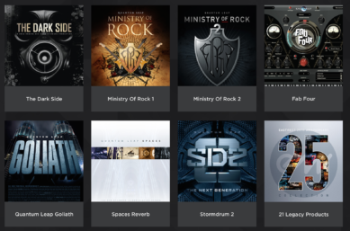
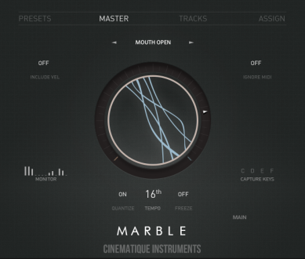
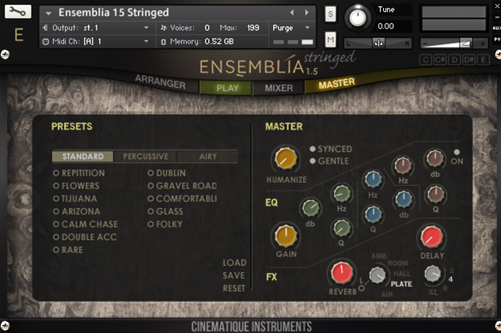
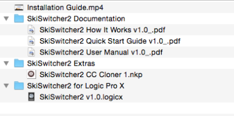
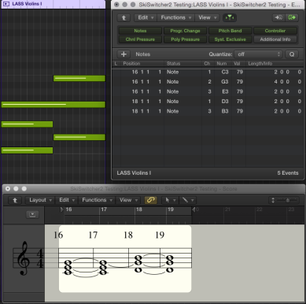
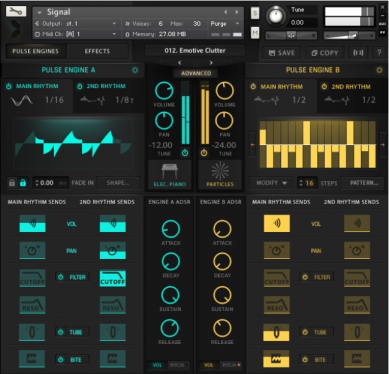
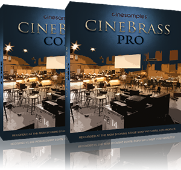
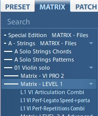
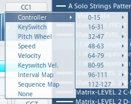
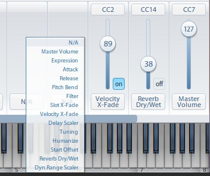

<?xml version="1.0" encoding="UTF-8"?><rss version="2.0"
	xmlns:content="http://purl.org/rss/1.0/modules/content/"
	xmlns:wfw="http://wellformedweb.org/CommentAPI/"
	xmlns:dc="http://purl.org/dc/elements/1.1/"
	xmlns:atom="http://www.w3.org/2005/Atom"
	xmlns:sy="http://purl.org/rss/1.0/modules/syndication/"
	xmlns:slash="http://purl.org/rss/1.0/modules/slash/"
	xmlns:itunes="http://www.itunes.com/dtds/podcast-1.0.dtd"
xmlns:rawvoice="http://www.rawvoice.com/rawvoiceRssModule/"
xmlns:googleplay="http://www.google.com/schemas/play-podcasts/1.0"

xmlns:georss="http://www.georss.org/georss" xmlns:geo="http://www.w3.org/2003/01/geo/wgs84_pos#"
>

<channel>
	<title>gear &#8211; SCOREcastOnline.com</title>
	<atom:link href="." rel="self" type="application/rss+xml" />
	<link>http://www.scorecastonline.com</link>
	<description>Global Community for the Professional Media Composer</description>
	<lastBuildDate>
	Sun, 07 Apr 2019 10:06:34 +0000	</lastBuildDate>
	<language>en-US</language>
	<sy:updatePeriod>
	hourly	</sy:updatePeriod>
	<sy:updateFrequency>
	1	</sy:updateFrequency>
	<generator>https://wordpress.org/?v=5.1.1</generator>
<!-- podcast_generator="Blubrry PowerPress/7.4" mode="advanced" feedslug="feed" Blubrry PowerPress Podcasting plugin for WordPress (https://www.blubrry.com/powerpress/) -->
	<itunes:summary>Global Community for the Professional Media Composer</itunes:summary>
	<itunes:author>gear &#8211; SCOREcastOnline.com</itunes:author>
	<itunes:image href="../../../wp-content/plugins/powerpress/itunes_default.jpg" />
	<itunes:subtitle>Global Community for the Professional Media Composer</itunes:subtitle>
	<image>
		<title>gear &#8211; SCOREcastOnline.com</title>
		<url>../../../wp-content/uploads/powerpress/sig-SCO.jpg</url>
		<link>http://www.scorecastonline.com</link>
	</image>
<site xmlns="com-wordpress:feed-additions:1">29563098</site>	<item>
		<title>SCOREcast 066: NAMM 2019 with Damon Tedesco</title>
		<link>../../../2019/04/06/scorecast-066/</link>
				<comments>../../../2019/04/06/scorecast-066/#respond</comments>
				<pubDate>Sat, 06 Apr 2019 19:01:40 +0000</pubDate>
		<dc:creator><![CDATA[SCO Editorial Staff]]></dc:creator>
				<category><![CDATA[The SCOREcast Podcast Show]]></category>
		<category><![CDATA[academy awards]]></category>
		<category><![CDATA[basics]]></category>
		<category><![CDATA[business]]></category>
		<category><![CDATA[career]]></category>
		<category><![CDATA[collaboration]]></category>
		<category><![CDATA[community]]></category>
		<category><![CDATA[composer]]></category>
		<category><![CDATA[gear]]></category>
		<category><![CDATA[NAMM]]></category>
		<category><![CDATA[podcast show]]></category>
		<category><![CDATA[studio]]></category>

		<guid isPermaLink="false">../../../?p=2352</guid>
				<description><![CDATA[Brian welcomes veteran Hollywood scoring mixer Damon Tedesco to the show.]]></description>
								<content:encoded><![CDATA[
<iframe src="https://widget.spreaker.com/player?episode_id=17547016&amp;theme=light&amp;playlist=show&amp;playlist-continuous=false&amp;autoplay=false&amp;live-autoplay=false&amp;chapters-image=true&amp;episode_image_position=right&amp;hide-logo=true&amp;hide-likes=false&amp;hide-comments=false&amp;hide-sharing=false&amp;hide-download=false" width="100%" height="350px" frameborder="0"></iframe>


<p>Brian welcomes veteran Hollywood scoring mixer Damon Tedesco (Public Enemies, Penny Dreadful, The Wolfman) to the show for a rundown on what the pair discovered at this year&#8217;s NAMM Show, the latest on Netflix&#8217;s dustup with Spielberg and the Academy, and how the tables have finally turned for women composers as &#8220;Captain Marvel&#8221; topples multiple records at the box office.</p>


<p>This episode of the SCOREcast Podcast Show is sponsored by <a href="http://www.clockworksessions.com/">CLOCKWORKS SESSIONS</a>, a new music production company of industry professionals providing high end orchestral recording for film, TV, and video games with the Scottish Session Orchestra. SCOREcast listeners can get free HD video footage with any session booked using the coupon code &#8216;clockworkSC&#8221; from their website <a href="http://www.clockworksessions.com/">http://www.clockworksessions.com/</a>.</p>


<h1>Where to Listen</h1>


<h3><a title="SCOREcast at iTunes" href="https://itunes.apple.com/us/podcast/the-scorecast-podcast-show/id683848476" target="_blank" rel="noopener noreferrer">iTunes</a></h3>


<h3><a title="SCOREcast at Stitcher Radio" href="http://app.stitcher.com/browse/feed/28885/episodes" target="_blank" rel="noopener noreferrer">Stitcher Radio<br></a></h3>


<h1>Host</h1>


<ol><li><a rel="noopener noreferrer" href="https://brianralston.com/" target="_blank">Brian Ralston</a> &#8211; official website</li></ol>


<h1>On-Air Questions</h1>


<p>Have a question, a comment, or a reaction to something from this episode? Send Brian an email at <a rel="noopener noreferrer" href="mailto:scorecastonline@gmail.com" target="_blank">scorecastonline@gmail.com</a>.</p>


<div>
<p>*<em>Note: By submitting your question via email, you are hereby granting SCOREcastOnline.com permission to re-broadcast/re-read your message on the air in a future episode of the SCOREcast Podcast Show. However, SCOREcastOnline.com makes no guarantee that your email message will be used in a broadcast.</em></p>
</div>
]]></content:encoded>
							<wfw:commentRss>../../../2019/04/06/scorecast-066/feed/</wfw:commentRss>
		<slash:comments>0</slash:comments>
						<post-id xmlns="com-wordpress:feed-additions:1">2352</post-id>	</item>
		<item>
		<title>SCOREcast 064: The Swan Song Episode</title>
		<link>../../../2018/05/02/scorecast-064/</link>
				<comments>../../../2018/05/02/scorecast-064/#respond</comments>
				<pubDate>Wed, 02 May 2018 17:59:01 +0000</pubDate>
		<dc:creator><![CDATA[SCO Editorial Staff]]></dc:creator>
				<category><![CDATA[The SCOREcast Podcast Show]]></category>
		<category><![CDATA[academy awards]]></category>
		<category><![CDATA[basics]]></category>
		<category><![CDATA[business]]></category>
		<category><![CDATA[career]]></category>
		<category><![CDATA[collaboration]]></category>
		<category><![CDATA[community]]></category>
		<category><![CDATA[composer]]></category>
		<category><![CDATA[gear]]></category>
		<category><![CDATA[NAMM]]></category>
		<category><![CDATA[podcast show]]></category>
		<category><![CDATA[studio]]></category>

		<guid isPermaLink="false">../../../?p=2338</guid>
				<description><![CDATA[On Deane's final episode as co-host, he and Brian discuss work/life priorities, film industry attitude problems, the Oscars®, and all things cool at this year's NAMM Show.]]></description>
								<content:encoded><![CDATA[<p><iframe src="https://widget.spreaker.com/player?episode_id=14820180&amp;theme=light&amp;playlist=false&amp;playlist-continuous=false&amp;autoplay=false&amp;live-autoplay=false&amp;chapters-image=true" width="100%" height="200px" frameborder="0"></iframe></p>
<p>It&#8217;s Deane&#8217;s final episode before Brian takes the wheel as the SCOREcast Podcast Show&#8217;s new host, but before he bows out the boys have one final heart-to-heart on balancing a personal life with a professional business one, solving real problems in real-world production situations, Alexandre Desplat&#8217;s recent Oscar® win, and all the cool stuff that went down at the 2018 NAMM Show and 12th annual SCOREcast NAMM Dinner.</p>
<p>This episode of the SCOREcast Podcast Show is sponsored by 99 Dollar Orchestra, a fantastic new remote recording ensemble offering sessions in Lisbon, Los Angeles, and at Abbey Road in London. For a limited time, as a listener of SCOREcast you can get a 30% discount off your order by entering coupon code <b>SCORECAST30</b> upon checkout at <a title="99DollarOrchestra.com" href="https://99dollarorchestra.com" target="_blank" rel="noopener noreferrer">99DollarOrchestra.com</a>.</p>
<h1>Where to Listen</h1>
<h3><a title="SCOREcast at iTunes" href="https://itunes.apple.com/us/podcast/the-scorecast-podcast-show/id683848476" target="_blank" rel="noopener noreferrer">iTunes</a></h3>
<h3><a title="SCOREcast at Stitcher Radio" href="http://app.stitcher.com/browse/feed/28885/episodes" target="_blank" rel="noopener noreferrer">Stitcher Radio<br />
</a></h3>
<h1>Hosts</h1>
<ol>
<li><a href="https://deaneogden.com/" target="_blank" rel="noopener noreferrer">Deane Ogden</a> &#8211; official website</li>
<li><a href="https://brianralston.com/" target="_blank" rel="noopener noreferrer">Brian Ralston</a> &#8211; official website</li>
</ol>
<h1>On-Air Questions</h1>
<p>Have a question, a comment, or a reaction to something from this episode? Send Deane and Brian an email at <a href="mailto:scorecastonline@gmail.com" target="_blank" rel="noopener noreferrer">scorecastonline@gmail.com</a>.</p>
<div>
<p>*<em>Note: By submitting your question via email, you are hereby granting SCOREcastOnline.com permission to re-broadcast/re-read your message on the air in a future episode of the SCOREcast Podcast Show. However, SCOREcastOnline.com makes no guarantee that your email message will be used in a broadcast.</em></p>
</div>
]]></content:encoded>
							<wfw:commentRss>../../../2018/05/02/scorecast-064/feed/</wfw:commentRss>
		<slash:comments>0</slash:comments>
						<post-id xmlns="com-wordpress:feed-additions:1">2338</post-id>	</item>
		<item>
		<title>SCOREcast 058: Change is the Only Constant</title>
		<link>../../../2017/02/26/scorecast-058-change-is-the-only-constant/</link>
				<comments>../../../2017/02/26/scorecast-058-change-is-the-only-constant/#respond</comments>
				<pubDate>Sun, 26 Feb 2017 13:27:17 +0000</pubDate>
		<dc:creator><![CDATA[SCO Editorial Staff]]></dc:creator>
				<category><![CDATA[The SCOREcast Podcast Show]]></category>
		<category><![CDATA[academy awards]]></category>
		<category><![CDATA[business]]></category>
		<category><![CDATA[career]]></category>
		<category><![CDATA[community]]></category>
		<category><![CDATA[gear]]></category>
		<category><![CDATA[hans]]></category>
		<category><![CDATA[john williams]]></category>
		<category><![CDATA[kontakt]]></category>
		<category><![CDATA[NAMM]]></category>
		<category><![CDATA[oscars]]></category>
		<category><![CDATA[podcast show]]></category>
		<category><![CDATA[sample libraries]]></category>
		<category><![CDATA[star wars]]></category>
		<category><![CDATA[zimmer]]></category>

		<guid isPermaLink="false">../../../?p=2305</guid>
				<description><![CDATA[Oscar, Hans, John, and Mica… The boys are back with their first episode of 2017!]]></description>
								<content:encoded><![CDATA[<p><a class="spreaker-player" href="https://www.spreaker.com/user/deaneogden/scorecast-0058-change-is-the-only-consta" data-resource="episode_id=11169863" data-theme="light" data-autoplay="false" data-playlist="false" data-cover="https://d3wo5wojvuv7l.cloudfront.net/images.spreaker.com/original/020a56279cce1c97c8ed0779c3a426df.jpg" data-width="100%" data-height="400px">Listen to &#8220;SCOREcast 0058: Change is the Only Constant&#8221; on Spreaker.</a><script async src="https://widget.spreaker.com/widgets.js"></script></p>
<p>The SCOREcast boys are back with their first episode of 2017! It&#8217;s a full one, so buckle up as Deane and Brian talk through the NAMM Show, a fantastic new educational opportunity for composers, and the bizarre set of rules and regulations involving the Oscar-nomination process. Deane also makes public his announcement from last month&#8217;s SCOREcast <a href="../../../community" target="_blank">meetups in Hollywood and London</a> and what it means for our community going forward.</p>
<p>Be sure to head over to <a href="http://masterclass.com/scorecast" target="_blank">MasterClass</a> for your sneak peek into the brand new <a href="http://masterclass.com/scorecast" target="_blank">Hans Zimmer MasterClass</a> that is pre-enrolling now! For only $90, you can get the best seat in the world right next to Hans as he walks you through more than five hours of his writing and production process as well as his personal philosophy on the art and business of film scoring. Check it all out at <a href="http://masterclass.com/scorecast" target="_blank">MasterClass.com</a>.</p>
<h1>Where to Listen</h1>
<h3><a title="SCOREcast at iTunes" href="https://itunes.apple.com/us/podcast/the-scorecast-podcast-show/id683848476" target="_blank">iTunes</a></h3>
<h3><a title="SCOREcast at Stitcher Radio" href="http://app.stitcher.com/browse/feed/28885/episodes" target="_blank">Stitcher Radio<br />
</a></h3>
<p>&nbsp;</p>
<h1>Shownotes</h1>
<ol>
<li><a href="http://www.motu.com/products/software/dp" target="_blank">MOTU Digital Performer 9</a></li>
<li><a href="https://www.spectrasonics.net/products/keyscape/" target="_blank">Spectrasonics Keyscape</a></li>
<li><a href="http://tascam.com/product/dr-10x/" target="_blank">Tascam DR-10X</a></li>
<li><a href="https://www.spitfireaudio.com/" target="_blank">Spitfire sample libraries</a></li>
<li><a href="http://masterclass.com/scorecast" target="_blank">MasterClass.com &#8211; Hans Zimmer MasterClass</a></li>
<li><a href="http://screenrant.com/john-williams-star-wars-grammy/" target="_blank">John Williams wins his 5th <em>Star Wars</em> Grammy for <em>The Force Awakens</em> </a></li>
<li><a href="http://oscar.go.com/nominees" target="_blank">2017 Oscar-nominated scores</a></li>
</ol>
<h1>On-Air Questions</h1>
<p>Have a question, a comment, or a reaction to something from this episode? Send Deane and Brian an email at <a href="mailto:scorecastonline@gmail.com" target="_blank">scorecastonline@gmail.com</a>.</p>
<div>
<p>*<em>Note: By submitting your question via email, you are hereby granting SCOREcastOnline.com permission to re-broadcast/re-read your message on the air in a future episode of the SCOREcast Podcast Show. However, SCOREcastOnline.com makes no guarantee that your email message will be used in a broadcast.</em></p>
</div>
]]></content:encoded>
							<wfw:commentRss>../../../2017/02/26/scorecast-058-change-is-the-only-constant/feed/</wfw:commentRss>
		<slash:comments>0</slash:comments>
						<post-id xmlns="com-wordpress:feed-additions:1">2305</post-id>	</item>
		<item>
		<title>SCOREcast 057: Simon Franglen</title>
		<link>../../../2016/12/24/scorecast-057-simon-franglen/</link>
				<comments>../../../2016/12/24/scorecast-057-simon-franglen/#respond</comments>
				<pubDate>Sun, 25 Dec 2016 01:23:33 +0000</pubDate>
		<dc:creator><![CDATA[SCO Editorial Staff]]></dc:creator>
				<category><![CDATA[The SCOREcast Podcast Show]]></category>
		<category><![CDATA[Avatar]]></category>
		<category><![CDATA[basics]]></category>
		<category><![CDATA[business]]></category>
		<category><![CDATA[career]]></category>
		<category><![CDATA[collaboration]]></category>
		<category><![CDATA[gear]]></category>
		<category><![CDATA[interview]]></category>
		<category><![CDATA[James Horner]]></category>
		<category><![CDATA[podcast show]]></category>
		<category><![CDATA[sample libraries]]></category>
		<category><![CDATA[Titanic]]></category>
		<category><![CDATA[veteran]]></category>

		<guid isPermaLink="false">../../../?p=2302</guid>
				<description><![CDATA[A conversation with The Magnificent Seven composer Simon Franglen]]></description>
								<content:encoded><![CDATA[<p><iframe src="https://widget.spreaker.com/player?episode_id=10177594&#038;theme=light&#038;playlist=false&#038;playlist-continuous=false&#038;autoplay=false&#038;live-autoplay=false&#038;chapters-image=true" width="100%" height="200px" frameborder="0"></iframe></p>
<p>Merry Christmas, SCOREcasters! Just in time for your snowbound cross-country jaunt to Grandma&#8217;s house, Deane and Brian play Santa and deliver this year&#8217;s holiday episode in conversation with <em>The Magnificent Seven</em> composer <strong>SIMON FRANGLEN</strong>. Grab a hot cup of nog and a slice of that pumpkin pie and settle in for a terrific discussion with Simon as he walks you through working on several of the highest-grossing pictures of all-time, including <em>Titanic </em>and <em>Avatar</em>, plus the complete behind-the-scenes story of the score to his newest film, <em>The Magnificent Seven</em>, where he took up the mantle of his dear friend James Horner and turned out one of 2016&#8217;s most notable musical achievements.</p>
<h1>Where to Listen</h1>
<h3><a title="SCOREcast at iTunes" href="https://itunes.apple.com/us/podcast/the-scorecast-podcast-show/id683848476" target="_blank">iTunes</a></h3>
<h3><a title="SCOREcast at Stitcher Radio" href="http://app.stitcher.com/browse/feed/28885/episodes" target="_blank">Stitcher Radio<br />
</a></h3>
<p>&nbsp;</p>
<h1>Shownotes</h1>
<ol>
<li><a href="https://itunes.apple.com/us/album/magnificent-seven-original/id1146428051">THE MAGNIFICENT SEVEN: James Horner and Simon Franglen</a> — iTunes Store download</li>
</ol>
<p>&nbsp;</p>
<h1>On-Air Questions</h1>
<p>Have a question, a comment, or a reaction to something from this episode? Send Deane and Brian an email at <a href="mailto:scorecastonline@gmail.com" target="_blank">scorecastonline@gmail.com</a>.</p>
<div>
<p>*<em>Note: By submitting your question via email, you are hereby granting SCOREcastOnline.com permission to re-broadcast/re-read your message on the air in a future episode of the SCOREcast Podcast Show. However, SCOREcastOnline.com makes no guarantee that your email message will be used in a broadcast.</em></p>
</div>
]]></content:encoded>
							<wfw:commentRss>../../../2016/12/24/scorecast-057-simon-franglen/feed/</wfw:commentRss>
		<slash:comments>0</slash:comments>
						<post-id xmlns="com-wordpress:feed-additions:1">2302</post-id>	</item>
		<item>
		<title>REVIEW: EastWest Composer Cloud</title>
		<link>../../../2016/06/18/ewcloud/</link>
				<comments>../../../2016/06/18/ewcloud/#respond</comments>
				<pubDate>Sat, 18 Jun 2016 17:14:30 +0000</pubDate>
		<dc:creator><![CDATA[Stellita Loukas]]></dc:creator>
				<category><![CDATA[Product reviews]]></category>
		<category><![CDATA[ethnic]]></category>
		<category><![CDATA[gear]]></category>
		<category><![CDATA[sound design]]></category>
		<category><![CDATA[strings]]></category>
		<category><![CDATA[subscription]]></category>

		<guid isPermaLink="false">../../../?p=2290</guid>
				<description><![CDATA[A terrific solution for anyone looking to expand or cultivate a wide palette with just one purchase.]]></description>
								<content:encoded><![CDATA[<p><strong>COMPOSER CLOUD</strong> by <a href="http://soundsonline.com" target="_blank">Eastwest</a><br />
<strong>$29.99 &#8211; $49.99/month</strong></p>
<hr />
<p>EastWest is very well-known name in all composer households. Their ground-breaking EastWest Quantum Leap Symphony Orchestra was one of the first full-fledged orchestral sample libraries to be developed and still is one of the best entry-level libraries around.</p>
<p class="p1"><span class="s1">Since then, EastWest has continued to constantly innovate by presenting top-quality indispensable tools, spanning a large variety of styles. In 2015, EastWest introduced Composer Cloud and became the first sample library developer to offer a subscription plan for a sample-based product. </span></p>
<p class="p1"><span class="s1">While this new model was initially met with mixed responses across the composer community, more and more composers are signing up. So let’s take a look at what the Composer Cloud is and how it can enhance your daily work.</span></p>
<div class="page" title="Page 1">
<div class="layoutArea">
<div class="column">
<h2>General Overview</h2>
<div class="page" title="Page 1">
<div class="layoutArea">
<div class="column">
<p class="p1"><strong>HOW IT WORKS</strong></p>
<p class="p1"><span class="s1">The concept is rather simple really. All you need to do is download the EW Installation center from the Support section of the website. This requires you to sign into your personal EW account and as soon as the Installation Center is installed on your computer, all your previous purchases (before the introduction of the subscription model) and your current subscription are automatically reflected. </span></p>
<p class="p1"><span class="s1">The Installation Center conveniently manages everything pertaining to your EW libraries. It allows you to download, install, and activate any library you wish, it displays any updates available for your current EW software and it also allows you to relocate libraries should you choose to migrate them to another disk. </span></p>
<p class="p1"><span class="s1">A very pleasant surprise was the download speeds. Downloading almost all of the EW libraries took me just a few hours on a 50bpm DSL connection and the entire process was rather painless.</span></p>
<p class="p1"><span class="s1"><b>THE SUBSCRIPTION PLANS</b></span></p>
<p class="p1"><span class="s1">The introduction of Composer Cloud essentially gives a subscriber access to over 10,000 instruments for a yearly or monthly fee. All Composer cloud subscriptions include the entire EW catalog of libraries and the only difference is the different microphone positions included. </span></p>
<p class="p1"><span class="s1">The subscription model comes in 3 different versions : <em>Composer Cloud</em>, <em>Composer Cloud </em>X, and <em>Composer Cloud Plus</em>:</span></p>
<table style="height: 462px;" width="838" cellspacing="0" cellpadding="0">
<tbody>
<tr>
<td valign="top"></td>
<td valign="top">
<p style="text-align: center;"><span style="color: #000000; font-family: Helvetica; font-size: small;"><b>Composer Cloud</b></span></p>
</td>
<td valign="top">
<p style="text-align: center;"><span style="color: #000000; font-family: Helvetica; font-size: small;"><b>Composer Cloud X</b></span></p>
</td>
<td valign="top">
<p style="text-align: center;"><span style="color: #000000; font-family: Helvetica; font-size: small;"><b>Composer Cloud Plus</b></span></p>
</td>
</tr>
<tr>
<td valign="top"><span style="color: #000000; font-family: Helvetica; font-size: small;"><b>Cost</b></span></td>
<td valign="top">
<p align="center"><span style="color: #000000; font-family: Helvetica; font-size: small;">$29.99</span></p>
</td>
<td valign="top">
<p align="center"><span style="color: #000000; font-family: Helvetica; font-size: small;">$29.99</span></p>
</td>
<td valign="top">
<p align="center"><span style="color: #000000; font-family: Helvetica; font-size: small;">$49.99</span></p>
</td>
</tr>
<tr>
<td valign="top"><span style="color: #000000; font-family: Helvetica; font-size: small;"><b>Commitment</b></span></td>
<td valign="top">
<p align="center"><span style="color: #000000; font-family: Helvetica; font-size: small;">Monthly</span></p>
</td>
<td valign="top">
<p align="center"><span style="color: #000000; font-family: Helvetica; font-size: small;">Yearly (paid monthly)</span></p>
</td>
<td valign="top">
<p align="center"><span style="color: #000000; font-family: Helvetica; font-size: small;">Yearly (paid monthly)</span></p>
</td>
</tr>
<tr>
<td valign="top"><span style="color: #000000; font-family: Helvetica; font-size: small;"><b>No of Instruments</b></span></td>
<td valign="top">
<p align="center"><span style="color: #000000; font-family: Helvetica; font-size: small;">10,012</span></p>
</td>
<td valign="top">
<p align="center"><span style="color: #000000; font-family: Helvetica; font-size: small;">10,012</span></p>
</td>
<td valign="top">
<p align="center"><span style="color: #000000; font-family: Helvetica; font-size: small;">12,569</span></p>
</td>
</tr>
<tr>
<td valign="top"><span style="color: #000000; font-family: Helvetica; font-size: small;"><b>Mic Positions</b></span></td>
<td valign="top">
<p align="center"><span style="color: #000000; font-family: Helvetica; font-size: small;">1</span></p>
</td>
<td valign="top">
<p align="center"><span style="color: #000000; font-family: Helvetica; font-size: small;">2</span></p>
</td>
<td valign="top">
<p align="center"><span style="color: #000000; font-family: Helvetica; font-size: small;">ALL</span></p>
</td>
</tr>
<tr>
<td valign="top"><span style="color: #000000; font-family: Helvetica; font-size: small;"><b>Bit Depth</b></span></td>
<td valign="top">
<p align="center"><span style="color: #000000; font-family: Helvetica; font-size: small;">16 bit</span></p>
</td>
<td valign="top">
<p align="center"><span style="color: #000000; font-family: Helvetica; font-size: small;">16 bit</span></p>
</td>
<td valign="top">
<p align="center"><span style="color: #000000; font-family: Helvetica; font-size: small;">24 bit</span></p>
</td>
</tr>
<tr>
<td valign="top"><span style="color: #000000; font-family: Helvetica; font-size: small;"><b>Data Size</b></span></td>
<td valign="top">
<p align="center"><span style="color: #000000; font-family: Helvetica; font-size: small;">758 GB</span></p>
</td>
<td valign="top">
<p align="center"><span style="color: #000000; font-family: Helvetica; font-size: small;">~ 1TB</span></p>
</td>
<td valign="top">
<p align="center"><span style="color: #000000; font-family: Helvetica; font-size: small;">~ 1.8TB</span></p>
</td>
</tr>
<tr>
<td valign="top"><span style="color: #000000; font-family: Helvetica; font-size: small;"><b>Delivery</b></span></td>
<td valign="top">
<p align="center"><span style="color: #000000; font-family: Helvetica; font-size: small;">Download</span></p>
</td>
<td valign="top">
<p align="center"><span style="color: #000000; font-family: Helvetica; font-size: small;">Download</span></p>
</td>
<td valign="top">
<p align="center"><span style="color: #000000; font-family: Helvetica; font-size: small;">Hard Drive</span></p>
</td>
</tr>
</tbody>
</table>
<p class="p1"><span class="s1">If you are a student, you can also take advantage of the Composer Cloud Student, a monthly or yearly plan that costs $14.99 per month and includes 7 products of your choice. </span></p>
<p class="p1"><span class="s1">EW also offers the possibility to upgrade to a higher plan at any point in your subscription.</span></p>
<h2 class="p1">The PLAY Engine</h2>
<blockquote>
<p class="p1">&#8220;But… but… but… it relies on the PLAY Engine&#8221;</p>
</blockquote>
<p class="p1"><span class="s1">I know, I know. I must admit that I have had my fair share of troubles with the PLAY engine, but not so many that would stop me from enjoying the vast array of sound colors at my fingertips. PLAY is updated rather regularly and the EW support team is incredibly responsive and accommodating. Mr. Joey Medina was particularly helpful in setting me up and patiently answering any my questions.</span></p>
</div>
</div>
</div>
</div>
</div>
</div>
<div class="page" title="Page 4">
<div class="layoutArea">
<div class="column">
<h2>Performance</h2>
</div>
</div>
</div>
<div class="page" title="Page 5">
<div class="layoutArea">
<div class="column">
<p class="p1"><span class="s1">I took three months to test the basic Composer Cloud subscription in several different projects, including ones where time was absolutely of the essence. Although I am not using any SSDs for streaming my samples (just plain old 7200rpm drives), aside from a slightly increased loading time, everything worked well and the system was rather stable. </span></p>
<p class="p1"><span class="s1">Not having used any Hollywood products before I was very impressed by the very expressive quality of many of the instruments, especially the legato ones. Aside from all the very well-known libraries, all subscriptions include some lesser-known older libraries such as “56’ Stratocaster”, “Funky Ass Loops”, “Scoring Tools” and I was able to discover many hidden gems in there that are still extremely useful.</span></p>
<p class="p1"></p>
<h2>Final Observations</h2>
<p class="p1"><span class="s1">I can’t say that I will be using all 10,000 instruments in my work regularly but in my opinion, the Composer Cloud is definitely worth its money, especially now that they have introduced a month-to-month subscription. I think of it this way: very often we part with $300-$400 for a library which sounds amazing only to later find out that we can use maybe half of the patches as we imagined we would and the rest fall into obscurity. Well, spending the same amount of money for access to 10,000 instruments for an entire year (even if hypothetically we only used 5,000 of these) makes sense in my mind. Besides, new libraries are coming out every month and many sample libraries become obsolete after a few years (simply because realism is always taken to new levels with each new stride in technology). Instead of spending money on one library in perpetuity &#8211; which could become obsolete after a few years &#8211; I’d rather spend the same amount of money to ‘borrow’ 53+ of them for a year. This becomes relatively obvious when you consider that your needs often change as a composer. Your sampling arsenal could change drastically within a year just based on trends and musical tastes.</span></p>
<p class="p1">The EastWest Composer Cloud is a terrific solution for anyone looking to expand or cultivate a wide palette with just one purchase. As long as EastWest continues to innovate in the sampling market by adding products to their CC lineup over time, subscribing to this service could be a very wise move for anyone looking for the highest quality in sampled sounds.</p>
<hr />
<p class="p1"><strong>COMPOSER CLOUD</strong> by <a href="http://soundsonline.com" target="_blank">Eastwest</a><br />
<strong>$29.99 &#8211; $49.99/month</strong></p>
</div>
</div>
</div>
]]></content:encoded>
							<wfw:commentRss>../../../2016/06/18/ewcloud/feed/</wfw:commentRss>
		<slash:comments>0</slash:comments>
						<post-id xmlns="com-wordpress:feed-additions:1">2290</post-id>	</item>
		<item>
		<title>SCOREcast 055: Gear Shows vs. Award Shows</title>
		<link>../../../2016/04/04/scorecast-055-gear-shows-rock-award-shows-sock/</link>
				<comments>../../../2016/04/04/scorecast-055-gear-shows-rock-award-shows-sock/#respond</comments>
				<pubDate>Mon, 04 Apr 2016 16:40:23 +0000</pubDate>
		<dc:creator><![CDATA[SCO Editorial Staff]]></dc:creator>
				<category><![CDATA[The SCOREcast Podcast Show]]></category>
		<category><![CDATA[academy awards]]></category>
		<category><![CDATA[career]]></category>
		<category><![CDATA[gear]]></category>
		<category><![CDATA[Hollywood]]></category>
		<category><![CDATA[Morricone]]></category>
		<category><![CDATA[NAMM]]></category>
		<category><![CDATA[news]]></category>
		<category><![CDATA[oscars]]></category>
		<category><![CDATA[podcast show]]></category>

		<guid isPermaLink="false">../../../?p=2286</guid>
				<description><![CDATA[NAMM, Oscars, anniversaries, and rage. It's all here, folks. Boom!]]></description>
								<content:encoded><![CDATA[<p><iframe src="https://widget.spreaker.com/player?episode_id=8919300&#038;theme=light&#038;playlist=false&#038;playlist-continuous=false&#038;autoplay=false&#038;live-autoplay=false&#038;chapters-image=true" width="100%" height="200px" frameborder="0"></iframe></p>
<p>SCOREcast ushered in a new decade of worldwide community goodness this past January as we celebrated our 10th Anniversary with 130 of LA&#8217;s finest SCOREcasters, as well as some friends and family from around the globe, at our annual dinner in Los Angeles. All of this happened in the midst of Deane and Brian&#8217;s 15th trip to the NAMM Convention, and the boys use this episode to talk about the highlights from this year&#8217;s show. They also cover the controversy surrounding the recent Academy Awards telecast, as well as an exciting new opportunity for composers and filmmakers happening this month in Los Angeles through something called the &#8220;Helix Collective&#8221;.</p>
<p>&nbsp;</p>
<h1>Where to Listen</h1>
<h3><a title="SCOREcast at iTunes" href="https://itunes.apple.com/us/podcast/the-scorecast-podcast-show/id683848476" target="_blank" rel="noopener noreferrer">iTunes</a></h3>
<h3><a title="SCOREcast at Stitcher Radio" href="http://app.stitcher.com/browse/feed/28885/episodes" target="_blank" rel="noopener noreferrer">Stitcher Radio<br />
</a></h3>
<p>&nbsp;</p>
<h1>Shownotes</h1>
<ol>
<li><a href="http://www.helixcollective.net/" target="_blank" rel="noopener noreferrer">The Helix Collective</a> — <em>The Helix Collective Film Scoring Ensemble</em></li>
<li><a href="https://www.namm.org/" target="_blank" rel="noopener noreferrer">National Association of Music Merchants (NAMM)</a> — <em>official website</em></li>
<li><a href="http://www.latimes.com/entertainment/movies/la-ca-cm-revenant-score-20160224-story.html" target="_blank" rel="noopener noreferrer">&#8220;Why the Oscars keep disqualifying Alejandro Iñárritu&#8217;s movies from the original score competition&#8221;</a> — <em>LA Times</em></li>
</ol>
<p>&nbsp;</p>
<h1>On-Air Questions</h1>
<p>Have a question, a comment, or a reaction to something from this episode? Send Deane and Brian an email at <a href="mailto:scorecastonline@gmail.com" target="_blank" rel="noopener noreferrer">scorecastonline@gmail.com</a>.</p>
<div>
<p>*<em>Note: By submitting your question via email, you are hereby granting SCOREcastOnline.com permission to re-broadcast/re-read your message on the air in a future episode of the SCOREcast Podcast Show. However, SCOREcastOnline.com makes no guarantee that your email message will be used in a broadcast.</em></p>
</div>
]]></content:encoded>
							<wfw:commentRss>../../../2016/04/04/scorecast-055-gear-shows-rock-award-shows-sock/feed/</wfw:commentRss>
		<slash:comments>0</slash:comments>
						<post-id xmlns="com-wordpress:feed-additions:1">2286</post-id>	</item>
		<item>
		<title>REVIEW: Marble by Cinematique Instruments</title>
		<link>../../../2016/03/30/marble/</link>
				<comments>../../../2016/03/30/marble/#respond</comments>
				<pubDate>Thu, 31 Mar 2016 06:28:59 +0000</pubDate>
		<dc:creator><![CDATA[Stellita Loukas]]></dc:creator>
				<category><![CDATA[Product reviews]]></category>
		<category><![CDATA[effects]]></category>
		<category><![CDATA[gear]]></category>
		<category><![CDATA[kontakt]]></category>
		<category><![CDATA[sound design]]></category>
		<category><![CDATA[strings]]></category>

		<guid isPermaLink="false">../../../?p=2280</guid>
				<description><![CDATA[For live and on-the-fly sound shaping that features well-recorded source material bundled with extensive effects options, Marble might be your new go-to tool.]]></description>
								<content:encoded><![CDATA[<p><strong>MARBLE</strong> by <a href="http://www.cinematique-instruments.com/page_marble.php" target="_blank">Cinematique Instruments</a><br />
<strong>240 €/ $270</strong></p>
<hr />
<p>&nbsp;</p>
<p>After releasing the <a href="../../../2016/01/11/ensemblia" target="_blank">Ensemblia</a> series last year, Germany-based developer <b><a href="http://cinematique-instruments.com/">Cinematique Instruments</a> </b>decided to switch gears and create a unique combination of their trademark traditional-meets-bizarre sounds with clever and innovative programming. The result was <strong>Marble</strong>.</p>
<div class="page" title="Page 1">
<div class="layoutArea">
<div class="column">
<p class="p1"><span class="s1">Marble is a KONTAKT-based library that runs on the full version of KONTAKT 5.3, comes with more than 800 presets, and is comprised of more than 2,500 samples.</span></p>
<h2>General Overview</h2>
<div class="page" title="Page 1">
<div class="layoutArea">
<div class="column">
<p class="p1"><span class="s1">At the core of <strong>Marble</strong> lie two parallel sound slots (called “Tracks”) equipped with their respective 16-step sequencers. But there is a twist; each of these two sequencers is completely ‘open’ &#8212; in other words, you can tweak every single one of the twelve parameters provided for each sound slot, individually for each of the 16 steps of the sequencer.</span></p>
<p class="p1"><span class="s1">One of the greatest values of this library is its flexibility and tweakability. Cinematique Instruments essentially provide us with a complex yet extremely intuitive and simple-to-use ‘system’ that allows us to combine any of the sixty-four sound sources in as many ways as our minds can imagine, sequence them and tweak each step of the sequence individually and, finally, manipulate everything in real time. </span></p>
<p class="p1"><span class="s1">The beauty of Marble lies at a single rotating ring that controls an entire effects matrix and which can allow you to shape your sound in real time. </span></p>
<p class="p1"><span class="s1"><b>THE GUI</b></span></p>
<p class="p1"><span class="s1">One of the first things I immediately loved about this library is the deceptively simple GUI. It is nicely designed and very neatly organized in a way that makes it easy to navigate. Everything is exactly where you expect it to be and you can create your own complex evolving sounds at the click of a button while being blissfully unaware of the complex mechanics and programming lying ‘behind the scenes’.  </span></p>
<p class="p1"><span class="s1">The entire <strong>Marble</strong> library is accessible via a single Kontakt-instrument patch that is organized into 4 tabs : </span></p>
<p class="p1"><span class="s1">1. The “PRESETS” tab allows you to choose any of the included 800 presets at the click of a button. Presets have been organized into categories and sub-categories that are sure to strike a cord with every modern composer, including Ambiences, Bass Lines, Sequences, Drum Beats, Rhythm Essentials and more.</span></p>
<p class="p1"><span class="s1">2. The “TRACKS” tab is where you can select a different sound source for each of the two “Tracks” and set the values for each of the two ‘open’ step sequencers. You can customize parameters such as velocity, note length, pan, tuning, shape, filter, LFO stutter, reverb, delay, time shifting and playing direction.</span></p>
<p class="p1"><span class="s1">3. The final sound/combination of the two tracks then passes through a complex effect matrix which you can customize and control in Real-Time through the “ASSIGN” tab. A 127-step sequencer allows you to easily assign parameter values for each of the onboard effects.</span></p>
<p class="p1"><span class="s1">4. Finally, the “MASTER” tab is where you can tweak your sound with a simple turning of the Marble ring (which is connected to the effects matrix at the “ASSIGN” tab), “Freeze” the sound if you wish to play along with the created sequence and set quantization and tempo parameters. </span></p>
<h2 class="p1">Malleability</h2>
<p class="p1">One thing Cinematique Instruments seems to have down really well is all the built-in ways you can mold and fashion their original sample sources into your own unique finished material sounds. With included sound sources such as drum kits, acoustic and electric basses, struck percussion, experimental string FX, woodwinds, classic synthesizers, skin percussions, glitch FX and electronic oddities galore, your possibilities are virtually endless. After you tweak to your heart&#8217;s delight, you can run the finished shape through <strong>Marble&#8217;s</strong> deep FX matrix. This process houses an extensive effects rack module, which includes low and high pass filters, face-ripping distortions, multi-band compression, randomizers, reverbs and more. By simply applying any one or combination of these parameters to your creation, Marble takes on a completely different vibe and enables you to throw your own voicings behind typically traditional instrument sources, making them perfect for video game music, trailer music production, film and TV work, or experimental media applications.</p>
<p class="p1">And…… all of this can happen in Real Time. If you are a live stage performer, this is a huge advantage that most sound libraries are slowly becoming hip to, but <strong>Marble</strong> gets exactly right directly out of the box. Every parameter is flexible on the fly and can be recorded with DAW automation for recall later on or real-time experimental performance – a major asset for the live player or experimental tweakhead composer.</p>
</div>
</div>
</div>
</div>
</div>
</div>
<div class="page" title="Page 4"></div>
<div class="page" title="Page 4">
<div class="layoutArea">
<div class="column">
<h2>Final Observations</h2>
</div>
</div>
</div>
<div class="page" title="Page 5">
<div class="layoutArea">
<div class="column">
<p class="p1"><span class="s1"><strong>Marble</strong> is a well-designed library that has clearly been created with a lot of forethought into how modern composers like to work and create. The sounds providing the raw material are top quality and have been recorded to Cinematique Instruments’ excellent standards. The ‘open’ 16-step sequencers offer a myriad of sonic possibilities and the fact that the effects matrix offers Real-Time dynamic sound shaping is, in my opinion, this library’s greatest asset. </span></p>
<p class="p1"><span class="s1"><strong>Marble</strong> is extremely playable and a lot of thought has evidently gone into creating a playable instrument that responds well to both chords and melodic lines, allowing users the freedom to create their own unique soundscapes via a simple and intuitive interface. </span></p>
<p class="p1"><span class="s1">Once again, Cinematique Instruments have created an excellent product that can easily find its way into any modern composer’s arsenal.</span></p>
<hr />
<p class="p1"><strong>MARBLE</strong> by <a href="http://www.cinematique-instruments.com/page_marble.php" target="_blank">Cinematique Instruments</a><br />
<strong>240 €/ $270</strong></p>
</div>
</div>
</div>
]]></content:encoded>
							<wfw:commentRss>../../../2016/03/30/marble/feed/</wfw:commentRss>
		<slash:comments>0</slash:comments>
						<post-id xmlns="com-wordpress:feed-additions:1">2280</post-id>	</item>
		<item>
		<title>REVIEW: Ensemblia by Cinematique Instruments</title>
		<link>../../../2016/01/11/ensemblia/</link>
				<comments>../../../2016/01/11/ensemblia/#respond</comments>
				<pubDate>Mon, 11 Jan 2016 23:16:36 +0000</pubDate>
		<dc:creator><![CDATA[Stellita Loukas]]></dc:creator>
				<category><![CDATA[Product reviews]]></category>
		<category><![CDATA[ethnic instruments]]></category>
		<category><![CDATA[gear]]></category>
		<category><![CDATA[kontakt]]></category>
		<category><![CDATA[orchestra]]></category>
		<category><![CDATA[sounds]]></category>
		<category><![CDATA[strings]]></category>

		<guid isPermaLink="false">../../../?p=2271</guid>
				<description><![CDATA[There are many libraries out there that do the ‘big’ sound incredibly well, but what happens when your cue demands a smaller, more intimate sound? Introducing… Ensemblia.]]></description>
								<content:encoded><![CDATA[<p><strong>ENSEMBLIA</strong> by <a href="http://cinematique-instruments.com/page_ensemblia15.php" target="_blank">Cinematique Instruments</a><br />
<strong>219 €/ $245</strong></p>
<p><strong>METALLIQUE</strong><br />
<strong>115 €/ $129</strong></p>
<p><strong>STRINGED</strong><br />
<strong>115 €/ $129</strong></p>
<hr />
<div class="page" title="Page 1">
<div class="layoutArea">
<div class="column">
<p><span class="s1"><a href="http://cinematique-instruments.com/"><b>Cinematique Instruments</b></a></span><span class="s2"> is a Germany-based developer of unique, odd and rare sample libraries. Comprising of a group of composers/producers, the Cinematique Instruments team is highly attuned to the needs of the modern composer and manages to continuously come up with unconventional yet highly usable libraries.</span></p>
<p class="p1"><span class="s2">Their latest flagship product, <a href="http://cinematique-instruments.com/page_ensemblia15.php" target="_blank">Ensemblia</a>, is a unique combination of traditional orchestral and rare modern instruments that is aiming to recreate the sound of the modern chamber orchestra and provide composers with an intuitive tool to create natural-sounding productions.</span></p>
<p class="p1"><span class="s2">Ensemblia is a KONTAKT-based library that runs on the full version of both KONTAKT 4 and 5 and has recently been updated to version 1.5, adding tons of new features and new instruments. What’s more, following the success of the original Ensemblia library, the Cinematique Instruments team is about to release two further variations, Metallique and Stringed. </span></p>
<p class="p1"><span class="s2">So let’s take a look at what this ‘trio’ can add to your arsenal!</span></p>
<h2>General Overview</h2>
<div class="page" title="Page 1">
<div class="layoutArea">
<div class="column">
<p class="p1"><span class="s1">The original library comes with a wealth of sonic colors, from classical orchestral and mallet instruments to odd synths and bowed guitars. But the real beauty of Ensemblia, where all sounds come truly alive, is in the clever Kontakt patch programming. </span></p>
<p class="p1"><span class="s1">The entire library is organized in just two patches: Longs and Shorts. The large variety of presets available are accessed via the well thought-out user interface. </span></p>
<p class="p1"><span class="s1"><b>Longs</b></span></p>
<p class="p1"><span class="s1">The Longs patch allows you to load up to 7 different instruments, each on a dedicated channel strip that gives you individual control over the volume, panning, reverb, and transposition. The magic, however, lies in the Voicing section where you can determine how each chord you play on the keyboard is distributed to the loaded instruments. For example, you can load all four orchestral strings, each on its individual slot, and instruct Ensemblia to assign the lowest note of your chords to the bass, the highest to the violin and the middle ones to the viola and cello.</span></p>
<p class="p1"><span class="s1">As if this isn’t clever enough, the &#8216;Longs&#8217; patch has been programmed in such a way so as to automatically recognize where to assign each new note you play, based on its distance from the previous notes. If, for example, you have a Csus4 chord and the F is assigned to the viola, when you move to a C triad, the E will automatically be played by the viola, too!</span></p>
<p class="p1"><span class="s1">While you are free to mix and match the available instruments to your heart’s delight, the CI team has provided a wealth of presets neatly organized into intuitive categories, to suit all tastes.</span></p>
<p class="p1"></p>
<p class="p1"><span class="s1"><b>Shorts</b></span></p>
<p class="p1"><span class="s1">The Shorts patch is excellent for rhythmic figures and ostinato and works in the exact same way (7 instrument slots with individual controls) but it also features an “Arranger” page that allows you to program the exact rhythm each instrument is playing. The presets provided are again well thought-out and neatly organized and can give you anything from dark and frantic to light and atmospheric. </span></p>
<p class="p1"><span class="s1">In both patches, a comprehensive “Mixer” section allows you to shape your sound to taste and make it as subtle or as overpowering as you wish!</span></p>
<p class="p1"></p>
</div>
</div>
</div>
</div>
</div>
</div>
<div class="page" title="Page 1">
<div class="layoutArea">
<div class="column">
<p>&nbsp;</p>
<h2>Ensemblia &#8220;<span class="s1"><b>Metallique&#8221;</b></span></h2>
</div>
</div>
</div>
<div class="page" title="Page 4">
<div class="layoutArea">
<div class="column">
<p class="p1"><span class="s1">Based on the same principles as the original Ensemblia library, Ensemblia Metallique comprises of a large range of metallic mallet instruments (anything and everything from vibraphone to a salad bowl!), all accessible via a “Shorts” patch which allows you to mix and match instruments, program your own rhythms and further shape your sound via the Mixer section.</span></p>
<p class="p1"></p>
<h2 class="p1">Ensemblia &#8220;Stringed&#8221;</h2>
<p class="p1"><span class="s1">The Stringed variation of Ensemblia brings together all the rare and odd string instruments the CI team has ever recorded: autoharp, monochord, kantele, lute, hammered dulcimer, zither and many more. Since these are mostly plucked instruments, Ensemblia Stringed comprises of just the “Shorts” patch, but this is enough to satisfy even the most demanding tastes.</span></p>
<p class="p1"></p>
<p class="p3">
</div>
</div>
</div>
<div class="page" title="Page 4">
<div class="layoutArea">
<div class="column">
<h2></h2>
<h2>Final Observations</h2>
</div>
</div>
</div>
<div class="page" title="Page 5">
<div class="layoutArea">
<div class="column">
<p class="p1"><span class="s1">There is an unwritten rule-of-thumb that the smaller the ensemble you are composing/orchestrating for the more careful you have to be when choosing voicings, voice leading, doublings, etc. This is one of the reasons why it is said that writing for a string quartet, for example, is much harder than writing for a full string orchestra. </span></p>
<p class="p1"><span class="s1">The same is true for sample libraries — large and ‘epic’ ensembles are often easier to make sound realistic but small and intimate are harder. There are many libraries out there that do the ‘big’ sound incredibly well, but what happens when your cue demands a smaller, more intimate sound? </span></p>
<p class="p1"><span class="s1">This is where Ensemblia excels. It is a library that has clearly been designed with the modern composer in mind. It comes to fill a ‘void’ in the sample library market and it does so incredibly well. Ensemblia offers a large variety of sonic possibilities in an extremely well recorded and programmed package. Added with its beautiful interface, and you have an easy to find your way around the library and create the exact sound you are after. </span></p>
</div>
</div>
</div>
<hr />
<p><strong>ENSEMBLIA</strong> by <a href="http://cinematique-instruments.com/page_ensemblia15.php" target="_blank">Cinematique Instruments</a><br />
<strong>219 €/ $245</strong></p>
<p><strong>METALLIQUE</strong><br />
<strong>115 €/ $129</strong></p>
<p><strong>STRINGED</strong><br />
<strong>115 €/ $129</strong></p>
]]></content:encoded>
							<wfw:commentRss>../../../2016/01/11/ensemblia/feed/</wfw:commentRss>
		<slash:comments>0</slash:comments>
						<post-id xmlns="com-wordpress:feed-additions:1">2271</post-id>	</item>
		<item>
		<title>REVIEW: SkiSwitcher 2 by Peter Schwartz</title>
		<link>../../../2015/11/29/skiswitcher2/</link>
				<comments>../../../2015/11/29/skiswitcher2/#respond</comments>
				<pubDate>Mon, 30 Nov 2015 01:16:43 +0000</pubDate>
		<dc:creator><![CDATA[Stellita Loukas]]></dc:creator>
				<category><![CDATA[Product reviews]]></category>
		<category><![CDATA[gear]]></category>
		<category><![CDATA[logic]]></category>
		<category><![CDATA[scripting]]></category>
		<category><![CDATA[utilities]]></category>

		<guid isPermaLink="false">../../../?p=2254</guid>
				<description><![CDATA[Modern composers are spending less time composing music and increasingly more time programming MIDI data. Ski Switcher 2 makes that process much easier and certainly far less painful.]]></description>
								<content:encoded><![CDATA[<p><strong>SKI SWITCHER 2</strong> for Logic X by Peter Schwartz<br />
<strong>$49.00<br />
</strong>Purchase SKI SWITCHER and get more information at <a href="http://www.skiswitcher.com/">SkiSwitcher.com</a></p>
<hr />
<div class="page" title="Page 1">
<div class="layoutArea">
<div class="column">
<p><span class="s1">If you are a Logic user, chances are you’ve come across the username “Ski” at one of the numerous online Logic forums. Ski (a.k.a <a href="http://www.peterschwartzmusic.com"><span class="s2">Peter Schwartz</span></a>) is a composer, orchestrator, and arranger whose long and impressive career has allowed him to work with artists such as Madonna, Michael Jackson, David Bowie, Mariah Carey and Pet Shop Boys to name a few, and his scoring clients include Disneytoons, Mattel, FOX, Warner Bros and many more. Peter Schwartz is also one of MacProVideo’s most pre-eminent <a href="https://www.macprovideo.com/about/trainers/peterschwartz"><span class="s2">Logic Pro instructors</span></a> and has produced Logic-oriented courses in MIDI Orchestration, Template Building and Score Editing. </span></p>
<p class="p1"><span class="s1">Throughout all his musical escapades for the past 25+ years Ski has been loyal to Logic<span class="Apple-converted-space"> </span>and is one of the few people on this planet who actually really know Logic inside-out. Thriving to always improve his workflow and make the best out of Logic, Ski has listened to all of our prayers and created something that can be easily called the equivalent of “VST Expression Maps” for Logic Pro. </span></p>
<h2>General Overview</h2>
<div class="page" title="Page 1">
<div class="layoutArea">
<div class="column">
<p class="p1"><span class="s1">Peter developed his original version of SkiSwitcher in 2008 out of frustration that keyswitching patches didn&#8217;t always play back with the correct articulation. This is a problem you’re probably familiar with, too! Though the original version of the system solved this problem, the newly-introduced scripting capabilities of Logic Pro X allowed him to both simplify its operation and greatly expand its capabilities beyond just working with keyswitching patches.</span></p>
<p class="p1"><span class="s1">SkiSwitcher2 is an articulation switching system that allows you compose and produce music without having to worry about: </span></p>
<ul>
<ul>
<li class="li1"><span class="s1">learning the keyswitches of each different library you own;</span></li>
<li class="li1"><span class="s1">navigating a project with 300+ tracks because you need to host each articulation on a different track; </span></li>
<li class="li1"><span class="s1">having to play your work back from a specific point because keyswitches don’t ‘chase’;</span></li>
<li class="li1"><span class="s1">having to spend hours to ‘clean up’ your project in order to print out a usable score after you’ve already spent hours composing the actual music.</span></li>
</ul>
</ul>
</div>
</div>
</div>
</div>
</div>
</div>
<h2>Key Features</h2>
<div class="page" title="Page 1">
<div class="layoutArea">
<div class="column">
<p class="p1"><span class="s1">So let’s look at what SkiSwitcher2 can actually do for you: </span></p>
<ol class="ol1">
<ol class="ol1">
<li class="li1"><span class="s3"><strong>Intelligent Keyswitching</strong>: </span><span class="s1">When using a keyswitch patch (e.g. CS2, EWQL keyswitch patches etc), you usually need to be very careful when playing back your work because keyswitch notes don’t work if they are not included within the playback passage. With SkiSwitcher2, the notes of your music select their own articulations. In other words, information about the appropriate articulation is ‘embedded’ into each note and no matter where in the timeline you choose to playback your work from, all notes will play back using the correct articulations.</span></li>
<li class="li1"><span class="s3"><strong>Polyphonic Keyswitching</strong>: </span><span class="s1">With SkiSwitcher2 you can play chords and set each chord note to play back using a different articulation. </span></li>
<li class="li1"><span class="s3"><strong>Articulation Name Display</strong>: </span><span class="s1">SkiSwitcher2 not only allows you to enter a specific label for each articulation you use but it also displays the articulation name in real time. This way, you no longer have to play the guessing game when playing a line with a keyswitching patch; you know exactly what you are playing every single moment.</span></li>
<li class="li1"><span class="s3"><strong>Taming the track-count beast</strong>: </span><span class="s1">Let’s face it; having to scroll through five screens’ worth of tracks while riding the inspiration wave is not very productive. Non-keyswitching libraries (e.g. LASS, some EWQL libraries etc) dictate that you have to use 1 track per articulation thus significantly increasing your track count. SkiSwitcher2 offers you a way to combine up to 16 different articulations into a single track, essentially allowing you to treat a multi-timbral plugin like Play or KONTAKT as a single keyswitching patch. How cool is that? </span></li>
<li class="li1"><span class="s3"><strong>Hybrid Instruments</strong>: </span><span class="s1">These are special a special kind of instrument setup that let you override articulations that you don’t use in keyswitching patches and ‘replace’ them with individual articulations from other patches.</span></li>
<li class="li1"><span class="s3"><strong>Consistent Keyswitches</strong>: </span><span class="s1">Having to learn the keyswitches of each different library you use is daunting to say the least. SkiSwitcher2 provides a solution to this problem, too, by allowing you set a universal key range as your keyswitching range and apply this to every library you use. Additionally, if you have a 2nd keyboard lying around, you can easily incorporate this into your setup and use it for keyswitching purposes.</span></li>
<li class="li1"><span class="s3"><strong>Easy Score creation</strong>: </span><span class="s1">Since you no longer have to include keyswitch notes in your MIDI regions, score creation becomes a much easier and more straight-forward affair.</span></li>
</ol>
</ol>
<p>&nbsp;</p>
<h2>Installation</h2>
</div>
</div>
</div>
<div class="page" title="Page 4">
<div class="layoutArea">
<div class="column">
<p><div id="attachment_2256" style="width: 399px" class="wp-caption alignright"><p id="caption-attachment-2256" class="wp-caption-text">fig. 1: Installation</p></div></p>
<p class="p1"><span class="s1">Before we move on, let me clarify that although I’ve been using Logic since early 2009, I was completely and utterly unfamiliar with anything Script-like until getting my hands on SkiSwitcher2. If you are a script-newbie like myself, you are in good hands because Peter Schwartz has gone to great lengths to make make sure the Scripter can be configured entirely from its front panel, and that end-users never have to do any coding.</span></p>
<p class="p1"><span class="s1">SkiSwitcher2 comes in a neatly organized folder, including everything you need to get up and running in no time: </span></p>
<ul>
<li class="li1"><span class="s1">A video installation guide that takes you through the process step-by-step.</span></li>
<li class="li1"><span class="s1">Three different PDF documents explaining everything about how SkiSwitcher2 works, how to make it work for you and offering tips and tricks on how to actually implement it into your own setup. </span></li>
<li class="li1"><span class="s1">The SkiSwitcher2 logic project file that you need to open in order to obtain the SkiSwitcher2 script; and</span></li>
<li class="li1"><span class="s1">A “CC Cloner” KONTAKT preset file to help you set up SkiSwitcher2 with KONTAKT-based libraries. </span></li>
</ul>
<p class="p1"><span class="s1">Following the instructions outlined in the installation guide video I was able to install SkiSwitcher2 easily and without any problems whatsoever.</span></p>
<h2 class="p1">In Action</h2>
<p class="p1"><span class="s1">Since I am hosting all my libraries on a separate slave PC, Vienna Ensemble Pro is a key ingredient in my workflow and I was anxious to see how SkiSwitcher2 would work in this<span class="Apple-converted-space"> </span>slightly complicated setup. </span></p>
<p class="p1"><span class="s1">Below, I will explore how SkiSwitcher2 worked in three different situations: with keyswitching patches, with multi-timbral instruments and when incorporated into an existing template.</span></p>
<p class="p3"><strong><span class="s1">I. SKISWITCHER2 AND KEYSWITCHING PATCHES</span></strong></p>
<p class="p1"><span class="s1">Setting up SkiSwitcher2 with a keyswitching patch took me all of 5 minutes. After having installed SkiSwitcher2 as per the Installation video’s instructions, I loaded a violin keyswitching patch from EWQL Symphony Orchestral library (18V KS Master) and loaded the Scripter plugin in Logic, with the appropriate SkiSwitcher2 preset. </span></p>
<p><div id="attachment_2257" style="width: 313px" class="wp-caption alignleft"><p id="caption-attachment-2257" class="wp-caption-text">fig 2: Scripter</p></div></p>
<p class="p1"><span class="s1">Since SkiSwitcher2 offers real-time articulation display, I spent a couple of minutes entering all the articulation names included in the 18V KS Master patch.<span class="Apple-converted-space">  </span></span></p>
<p class="p1"><span class="s1">Then, it was just a matter of playing the melody with my right hand and the articulations on the left. </span></p>
<p class="p1"><span class="s1">Each articulation I played was neatly<span class="Apple-converted-space"> </span>displayed on the Scripter interface. Since PLAY is hosted on an external slave PC, this was extremely useful because it eliminated my need to constantly look at a second screen to see what articulation I am playing.</span></p>
<p class="p1"><span class="s1">The resulting MIDI region simply included the melody notes and absolutely no keyswitching notes. Every bit of information needed to trigger the correct articulation was embedded into the notes themselves, via the MIDI channel. If you look at the event list of the MIDI region, you’ll see the MIDI channels changing to reflect the different articulations I was triggering at each<span class="Apple-converted-space"> </span>point. </span></p>
<p class="p1"><span class="s1">Figure 3 shows how the score would look:</span></p>
<p><div id="attachment_2259" style="width: 630px" class="wp-caption alignleft"><p id="caption-attachment-2259" class="wp-caption-text">fig 3: Score output</p></div></p>
<p class="p1"><span class="s1">This phrase goes through 7 articulation changes and there are absolutely NO keyswitches present in the score! </span></p>
<p class="p1"><span class="s1">Needless to say that when I played it back, all parts played correctly and absolutely no note-chasing was needed. </span></p>
<p class="p3"><strong><span class="s1">II. SKISWITCHER2 AND MULTI-TIMBRAL PLUGINS </span></strong></p>
<p class="p1"><span class="s1">Setting up SkiSwitcher2 with a multi-timbral instance took me 10 minutes, including the 4 minutes I spent brewing a new cup of coffee!</span></p>
<p class="p1"><span class="s1">After loading 7 different LASS 2 lite Violin I articulations in a single KONTAKT instance, I loaded SkiSwitcher2 and this time I selected the “Multi-Timbral” option. </span></p>
<p class="p1"><span class="s1">This works in the exact same way as described in the previous version. The only difference is that the different channels now represent different patches loaded in the instrument plugin and not keyswitches present in the same patch. </span></p>
<p class="p1"><span class="s1">To take it a step further, SkiSwitcher 2 allows the creation of a special kind of instruments, the so-called “</span><span class="s2">Hybrid</span><span class="s1">” instruments. </span></p>
<p class="p1"><span class="s1">Imagine this: there is a specific keyswitching patch from EWQL Orchestra that you absolutely love but you find the legatos a tad lacking. What you can now do with the help of SkiSwitcher2 is load this keyswitching patch and then not only override (i.e. exclude) the articulations you don’t like (i.e. the legato) but also use another patch in their place essentially creating a hybrid instrument comprising of different patches even from different libraries!</span></p>
<p class="p3"><strong><span class="s1">III. SKISWITCHER2 AND POLYPHONIC KEYSWITCHING </span></strong></p>
<p><div id="attachment_2261" style="width: 399px" class="wp-caption alignright"><p id="caption-attachment-2261" class="wp-caption-text">fig 4: Event List</p></div></p>
<p class="p1"><span class="s1">Here’s where things start to get </span><span class="s2">really</span><span class="s1"> interesting. SkiSwitcher2 allows you to play chords and then assign a different articulation to each note of the chord.</span></p>
<p class="p1"><span class="s1">This can work in either the Keyswitching or Multi-Timbral patch type and all you have to do is play your chords and then assign the correct channel using the Event List. </span></p>
<p class="p1"><span class="s1">Figure 4 shows two chords C and G/D: The root of the first chord is assigned to channel 1 and plays the legato articulation as expected. The E is assigned to channel 2 and plays a trill legato patch and the G which is held during both chords plays a tremolo legato patch. </span></p>
<p class="p1"><span class="s1">This approach could also be extremely helpful if you wanted to quickly assign a MIDI region played with a Strings Ensemble patch, to the individual string sections. Simply create an instance of your plugin with Violins 1 = channel 1, Violins 2 = channel 2, Violas = channel 3 etc and assign each note to the section you wish to be played by.</span></p>
<p class="p3"><strong><span class="s1">IV. THE CC CLONER</span></strong></p>
<p class="p1"><span class="s1">Last but not least, Schwartz has made sure to include an intuitive way to handle CC messages in SkiSwitcher2. We all know that without our CC11 faders and modulation wheels, we<span class="Apple-converted-space"> </span>cannot possibly imagine creating a realistic MIDI orchestration. </span></p>
<p class="p1"><span class="s1">Using a component called “CC Cloner” (included in the SkiSwitcher2 download),<span class="Apple-converted-space"> </span>you can now choose to ‘clone’ the CC messages recorded on the first channel of the keyswitching or multi-timbral instrument, to all the rest of the channels. </span></p>
<p><div id="attachment_2262" style="width: 351px" class="wp-caption aligncenter"><p id="caption-attachment-2262" class="wp-caption-text">fig. 5: CC Cloner</p></div></p>
<p class="p1"><span class="s1">For example, say I have a KONTAKT instance loaded with 7 different articulations of LASS 2 Lite Violin I patches. It goes without saying that I want the modulation and expression messages I record to affect all 7 articulations. In order to do that, Peter has provided us with 2 choices: </span></p>
<ol class="ol1">
<ol class="ol1">
<li class="li1"><span class="s1">The KONTAKT-based CC Cloner: a custom script you can load from within KONTAKT 4 or 5 and</span></li>
<li class="li1"><span class="s1">The Scripted-Based CC Cloner: a custom script loaded directly inside Logic via the Logic Scripter</span></li>
</ol>
</ol>
</div>
</div>
</div>
<div class="page" title="Page 4">
<div class="layoutArea">
<div class="column">
<h2>Final Observations</h2>
</div>
</div>
</div>
<div class="page" title="Page 5">
<div class="layoutArea">
<div class="column">
<p class="p1"><span class="s1">Modern composers are forced to spend less and less time composing music and more and more time programming and ‘massaging’ MIDI data in order to meet the continuously climbing standards of MIDI production. </span></p>
<p class="p1"><span class="s1">SkiSwitcher2 offers a way to simplify our lives and help us focus more on what we need to be doing. Writing music. </span></p>
<p class="p1"><span class="s1">I have been using this marvel for about a month now (both in large orchestral templates and smaller projects) and it is working without any problems whatsoever. The documentation and video demonstrations were great in helping me understand how to install and use it and Peter Schwartz has one of the best after-sales services I’ve seen to date, always willing to help, answer questions and suggest solutions.</span></p>
<p class="p1"><span class="s1">The only thing that SkiSwitcher2 can’t do for you at its current version is brew coffee. But, given that Peter is always open to suggestions and feature requests, you never know…</span></p>
<p class="p1"><span class="s1">Oh, and at $49 it’s an absolute steal.</span></p>
</div>
</div>
</div>
<hr />
<p><strong>SKI SWITCHER 2</strong> by Peter Schwartz<br />
<strong>$49.00</strong><strong><br />
</strong>Purchase SKI SWITCHER and get more information at <a href="http://www.skiswitcher.com/">SkiSwitcher.com</a></p>
]]></content:encoded>
							<wfw:commentRss>../../../2015/11/29/skiswitcher2/feed/</wfw:commentRss>
		<slash:comments>0</slash:comments>
						<post-id xmlns="com-wordpress:feed-additions:1">2254</post-id>	</item>
		<item>
		<title>SPOTLIGHT ON: Output&#8217;s SIGNAL</title>
		<link>../../../2015/09/14/spotlight-on-output-signal/</link>
				<comments>../../../2015/09/14/spotlight-on-output-signal/#respond</comments>
				<pubDate>Mon, 14 Sep 2015 23:42:36 +0000</pubDate>
		<dc:creator><![CDATA[Eanan Patterson]]></dc:creator>
				<category><![CDATA[Spotlight ON]]></category>
		<category><![CDATA[design]]></category>
		<category><![CDATA[gear]]></category>
		<category><![CDATA[kontakt]]></category>
		<category><![CDATA[library]]></category>
		<category><![CDATA[pulse]]></category>
		<category><![CDATA[sample]]></category>
		<category><![CDATA[sound]]></category>

		<guid isPermaLink="false">../../../?p=2250</guid>
				<description><![CDATA[In this episode of SPOTLIGHT ON edition, Éanán and Stellita take a comprehensive journey through the inner workings of Output's new pulsating monster - SIGNAL.]]></description>
								<content:encoded><![CDATA[<p>In this brand new edition of SCOREcast&#8217;s SPOTLIGHT ON, Éanán Paterson and Stellita Loukas bring you along on a deep dive through Output&#8217;s newest flagship product SIGNAL — a beast of a library driven by two independent pulse engines — that will breathe new life and glorious color into your music.</p>
<p>For more information and to purchase, please visit the <a href="http://outputsounds.com/products/signal/" target="_blank">OUTPUT</a> website.</p>
<p>If you cannot see the video below, please click <a href="https://youtu.be/qgET9k49_cw" target="_blank">here</a>.</p>
<p><iframe src="//www.youtube.com/embed/qgET9k49_cw" width="560" height="315" frameborder="0" allowfullscreen="allowfullscreen"></iframe></p>
]]></content:encoded>
							<wfw:commentRss>../../../2015/09/14/spotlight-on-output-signal/feed/</wfw:commentRss>
		<slash:comments>0</slash:comments>
						<post-id xmlns="com-wordpress:feed-additions:1">2250</post-id>	</item>
		<item>
		<title>SCO &#8220;Betweenisode&#8221;: Sonokinetic&#8217;s &#8220;Tutti Vox&#8221;</title>
		<link>../../../2015/07/02/sco-betweenisode-sonokinetics-tutti-vox/</link>
				<comments>../../../2015/07/02/sco-betweenisode-sonokinetics-tutti-vox/#respond</comments>
				<pubDate>Thu, 02 Jul 2015 09:47:54 +0000</pubDate>
		<dc:creator><![CDATA[SCO Editorial Staff]]></dc:creator>
				<category><![CDATA[The SCOREcast Podcast Show]]></category>
		<category><![CDATA[gear]]></category>
		<category><![CDATA[gear spotlight]]></category>
		<category><![CDATA[kontakt]]></category>
		<category><![CDATA[podcast show]]></category>
		<category><![CDATA[sample libraries]]></category>
		<category><![CDATA[studio]]></category>

		<guid isPermaLink="false">../../../?p=2242</guid>
				<description><![CDATA[Deane chats with the Sonokinetic crew about their brand new cinematic choir sample library, TUTTI VOX.]]></description>
								<content:encoded><![CDATA[<p><center><iframe style="border: none;" src="//html5-player.libsyn.com/embed/episode/id/3650518/height/320/width/684/theme/standard/direction/no/autoplay/no/autonext/no/thumbnail/yes/preload/no/no_addthis/no/" width="684" height="320" scrolling="no" allowfullscreen="allowfullscreen"></iframe></center>In this SCOREcast &#8220;betweenisode&#8221;, Deane Ogden hangs out with Son Thomsen, Rob van den Berg, and Ken Black of Sonokinetic, to talk about their newest monster, TUTTI VOX. Hurry over to <a href="http://sonokinetic.net" target="_blank">Sonokinetic.net</a> to take advantage of introductory discount pricing on the TUTTI VOX cinematic choir and to check out extensive walkthrough videos on the product.</p>
<h1>Where to Listen</h1>
<h3><a title="SCOREcast at iTunes" href="https://itunes.apple.com/us/podcast/the-scorecast-podcast-show/id683848476" target="_blank">iTunes</a></h3>
<h3><a title="SCOREcast at Stitcher Radio" href="http://app.stitcher.com/browse/feed/28885/episodes" target="_blank">Stitcher Radio</a></h3>
<h1></h1>
<h1>Shownotes/Mentions</h1>
<ol>
<li><a href="http://sonokinetic.net" target="_blank">Sonokinetic.com</a> // TUTTI VOX</li>
</ol>
<h1></h1>
<h1>On-Air Questions</h1>
<p>Have a question or a comment you&#8217;d like addressed on-air? Send Deane and Brian an email at <a href="mailto:scorecastonline@gmail.com" target="_blank">scorecastonline@gmail.com</a>.</p>
<div>
<p>*<em>Note: By submitting your question via email, you are hereby granting SCOREcastOnline.com permission to re-broadcast/re-read your message on the air in a future episode of the SCOREcast Podcast Show. However, SCOREcastOnline.com makes no guarantee that your email message will be used in a broadcast.</em></p>
</div>
]]></content:encoded>
							<wfw:commentRss>../../../2015/07/02/sco-betweenisode-sonokinetics-tutti-vox/feed/</wfw:commentRss>
		<slash:comments>0</slash:comments>
						<post-id xmlns="com-wordpress:feed-additions:1">2242</post-id>	</item>
		<item>
		<title>SCO &#8220;Betweenisode&#8221;: Inside Heavyocity</title>
		<link>../../../2015/06/19/sco-betweenisode-inside-heavyocity/</link>
				<comments>../../../2015/06/19/sco-betweenisode-inside-heavyocity/#respond</comments>
				<pubDate>Sat, 20 Jun 2015 06:49:31 +0000</pubDate>
		<dc:creator><![CDATA[SCO Editorial Staff]]></dc:creator>
				<category><![CDATA[The SCOREcast Podcast Show]]></category>
		<category><![CDATA[gear]]></category>
		<category><![CDATA[gear spotlight]]></category>
		<category><![CDATA[kontakt]]></category>
		<category><![CDATA[podcast show]]></category>
		<category><![CDATA[sample libraries]]></category>
		<category><![CDATA[studio]]></category>

		<guid isPermaLink="false">../../../?p=2239</guid>
				<description><![CDATA[Deane chats with Neil Goldberg of Heavyocity, makers of the new sample library GRAVITY.]]></description>
								<content:encoded><![CDATA[<p><center><iframe style="border: none;" src="//html5-player.libsyn.com/embed/episode/id/3626294/height/320/width/684/theme/standard/direction/no/autoplay/no/autonext/no/thumbnail/yes/preload/no/no_addthis/no/" width="684" height="320" scrolling="no" allowfullscreen="allowfullscreen"></iframe></center>In this &#8220;betweenisode&#8221; of the SCOREcast Podcast Show, Deane Ogden chats with Neil Goldberg of Heavyocity, makers of the new sample library GRAVITY, and gets a peek under the hood of their company and products. Visit <a href="http://www.heavyocity.com/" target="_blank">Heavyocity.com</a> for a special discount off GRAVITY until June 26, 2015.</p>
<h1>Where to Listen</h1>
<h3><a title="SCOREcast at iTunes" href="https://itunes.apple.com/us/podcast/the-scorecast-podcast-show/id683848476" target="_blank">iTunes</a></h3>
<h3><a title="SCOREcast at Stitcher Radio" href="http://app.stitcher.com/browse/feed/28885/episodes" target="_blank">Stitcher Radio</a></h3>
<h1></h1>
<h1>Shownotes/Mentions</h1>
<ol>
<li><a href="http://heavyocity.com" target="_blank">Heavyocity.com</a> // GRAVITY</li>
</ol>
<h1></h1>
<h1>On-Air Questions</h1>
<p>Have a question or a comment you&#8217;d like addressed on-air? Send Deane and Brian an email at <a href="mailto:scorecastonline@gmail.com" target="_blank">scorecastonline@gmail.com</a>.</p>
<div>
<p>*<em>Note: By submitting your question via email, you are hereby granting SCOREcastOnline.com permission to re-broadcast/re-read your message on the air in a future episode of the SCOREcast Podcast Show. However, SCOREcastOnline.com makes no guarantee that your email message will be used in a broadcast.</em></p>
</div>
]]></content:encoded>
							<wfw:commentRss>../../../2015/06/19/sco-betweenisode-inside-heavyocity/feed/</wfw:commentRss>
		<slash:comments>0</slash:comments>
						<post-id xmlns="com-wordpress:feed-additions:1">2239</post-id>	</item>
		<item>
		<title>REVIEW: SIGNAL Pulse Engine by Output</title>
		<link>../../../2015/04/01/review-signal-by-output/</link>
				<comments>../../../2015/04/01/review-signal-by-output/#respond</comments>
				<pubDate>Wed, 01 Apr 2015 09:30:40 +0000</pubDate>
		<dc:creator><![CDATA[Ryan Scully]]></dc:creator>
				<category><![CDATA[Product reviews]]></category>
		<category><![CDATA[gear]]></category>
		<category><![CDATA[kontakt]]></category>
		<category><![CDATA[library]]></category>
		<category><![CDATA[sample libraries]]></category>

		<guid isPermaLink="false">../../../?p=2228</guid>
				<description><![CDATA[Output's SIGNAL combines the warmth of analog and aggressive synthesis with an immense collection of organic, sampled instruments… and blows the roof off yet another genre.]]></description>
								<content:encoded><![CDATA[<p><strong>SIGNAL</strong> Pulse Engine by Output<br />
<strong>$199.00</strong> (SIGNAL); <strong>$348.00</strong> (SIGNAL + REV Bundle, save $50)<strong><br />
</strong>Purchase SIGNAL and get more information at <a href="http://outputsounds.com/products/signal/" target="_blank">Outputsounds.com</a></p>
<hr />
<div class="page" title="Page 1">
<div class="layoutArea">
<div class="column">
<p><a href="http://outputsounds.com"></a></p>
<p class="p1"><span class="s1"><a href="http://outputsounds.com" target="_blank">Output</a> first came on the sample library scene nearly a year and a half ago with their groundbreaking and highly acclaimed release REV (<a title="REVIEW: REV by Output" href="../../../2013/11/20/review-rev-by-output" target="_blank">SCOREcast review here</a>). The library was so forward thinking with such an unorthodox concept that many have wondered how they could possibly follow up that release.</span></p>
<p class="p1"><span class="s1">The answer comes in the form of their brand new pulse-driven sample library: <b>SIGNAL</b>.</span></p>
<p class="p1"><span class="s1">SIGNAL<b> </b>combines the warmth of analog and aggressive synthesis with an immense collection of organic, sampled instruments, but the true lure of the library rests with the inclusion of its “Pulse Engine”, which allows for up to four independent, tempo-locking rhythms across two separate sound source layers to create that “heartbeat” at the center of your track.</span></p>
<p class="p1"><span class="s1">We will take a detailed look at the library from the ground up to see what’s included, how it operates and ultimately what it will add to your existing sample library arsenal.</span></p>
<h2>General Overview</h2>
<div class="page" title="Page 1">
<div class="layoutArea">
<div class="column">
<p class="p1"><span class="s1">SIGNAL<b> </b>requires Kontakt 5.3.1 or higher and is compatible with the Kontakt Free Player. The library is immense, weighing in at around 40GB. Output utilizes the <a title="Continuata Utility" href="http://www.continuata.com/" target="_blank">Continuata Connect Download Utility</a> and I personally had a smooth and swift download of the content.<span class="Apple-converted-space">  </span>The library will need to be activated within the Native Instruments Service Center before it will become available within the library pane of your Kontakt browser.</span></p>
<p class="p1"><span class="s1">Before unpacking this beast, let&#8217;s look at a quick listing of everything included in the library as well as its features:</span></p>
<ul>
<li class="p1">500 Pulse Instruments for instant playability</li>
<li class="p1">40GB of content, including analog synths, digital synths and organic instruments</li>
<li class="p1">Up to four separate pulses at one time</li>
<li class="p1">All pulses lock to tempo</li>
<li class="p1">Rhythms: Looper, Step Sequencers, Arpeggiators, LFO’s</li>
<li class="p1">Four central MACRO sliders unique to each of the 500 Pulse Instruments</li>
<li class="p1">Effects can control global parameters and individual layers</li>
<li class="p1">Convolution reverb engine</li>
<li class="p1">Advanced mode for access to all parameters</li>
<li class="p1">Copy and paste settings between layers</li>
<li class="p1">Smart tagging preset menu</li>
<li class="p1">Simple design and ease of use</li>
</ul>
</div>
</div>
</div>
</div>
</div>
</div>
<h2>The Preset Browser</h2>
<div class="page" title="Page 1">
<div class="layoutArea">
<div class="column">
<p><div id="attachment_2231" style="width: 399px" class="wp-caption alignleft"><a href="http://outputsounds.com"></a><p id="caption-attachment-2231" class="wp-caption-text">Preset Browser</p></div></p>
<p class="p1"><span class="s1">SIGNAL<b> </b>contains just one patch in the instruments folder by which all the contents of the library can be accessed, which I think it is a brilliant layout. The developer recommends (and I agree) that you access the “preset” browser page first when initially diving into the library. This can be accessed by simply clicking on any preset name (e.g. &#8220;Dark Clacks&#8221;, pictured above) from the main page. The browser is laid out in a familiar, yet very welcomed format; simply click on one (or many) of the “smart tags” in the left-side palette and the right window pane will provide a listing of compatible instruments, based on your choices.</span></p>
<p class="p1"><span class="s1">There are five hundred — That&#8217;s right… 500! — different instruments in SIGNAL<b> </b>and<b> </b>I couldn’t have asked for a better way to audition them than the way this browser is constructed.</span></p>
<p class="p1"><span class="s1">So how does it sound on a first play through?<span class="Apple-converted-space">  </span>I clicked on “Epic” and “Organic” and chose the patch “Sun King” from the browser – I played a three-note D minor triad and heard a deep, gritty, pulsating arpeggiated figure with two intersecting polyrhythms. Awesome. I proceeded to get lost over the next hour sampling various different instruments from the browser and the immediate attention to the production value and execution of the patches were very impressive.</span></p>
<p><center><iframe src="//www.youtube.com/embed/_Htvz6KwHjQ" width="560" height="315" frameborder="0" allowfullscreen="allowfullscreen"></iframe></center></p>
<p class="p1"><span class="s1">Let’s move over to the “Pulse Engines” page to get under the hood and see what SIGNAL reveals…</span></p>
</div>
</div>
</div>
<h2>The Pulse Engines</h2>
<div class="page" title="Page 2">
<div class="layoutArea">
<div class="column">
<p><div id="attachment_2233" style="width: 399px" class="wp-caption alignright"><a href="http://outputsounds.com"></a><p id="caption-attachment-2233" class="wp-caption-text">Pulse Engines</p></div></p>
<p class="p1"><span class="s1">The true heart of SIGNAL rests within its “Pulse Engines” page. At first glance the layout may seem daunting and complex, but Output has made the source audio flow so intuitively that you’ll want to dig deeper and deeper at the sounds and the engine’s capability.</span></p>
<p class="p1"><span class="s1">SIGNAL<b> </b>gives you two separate sound sources that can be loaded and played in unison. Simply clicking on the “Signal Pulse Engines” window in the middle of the page will disable the pulse engine, leaving just the sound sources by themselves. Each sound source has it’s own channel strip  and when you click on the instrument picture/name it will open the sound source browser. There is an immense collection of synths and organic instruments in the browser that can be quickly loaded into the existing patch. This is a fantastic addition as you can quickly tryout new sounds in your loaded instrument that may mesh even better to your ears than before. Don’t want the “Sub Sine”? Why not load up a deep sampled “Muted Guitar” and see how that sounds? The possibilities are endless. </span></p>
<p class="p1"><span class="s1"> Let’s focus on <em>Pulse Engine A</em> for now (<em>Pulse Engine B</em> has all the functionality identical to Pulse Engine A). You will see a tab of “Main Rhythm” and “2</span><span class="s2"><sup>nd</sup></span><span class="s1"> Rhythm”, each able to be activated or deactivated by clicking the corresponding power switch. The “Main Rhythm” is the first engine your source audio will pass through and you have multiple options to create that “pulse” from the audio. SIGNAL<b> </b>gives you access to a Wave Form (LFO), Step Sequencer, Arpeggiator or a Loop mechanism (see picture above under Engine B) to modulate the audio signal. Regardless of which option you choose, you can manipulate the time format via bars, standard signatures (1/2, 1/4, 1/16, etc.), and dotted or triplet subdivisions.</span></p>
<p class="p1"><span class="s1">The “2</span><span class="s2"><sup>nd</sup></span><span class="s1"> Rhythm” will take the carrier signal through an additional rhythmic manipulation, available to you via LFO or Step Sequencer. The level of control and audio quality of all these parameters is stunning, making it simple to create highly useable and complex rhythmic figures on the fly.</span></p>
<p class="p1"><span class="s1">As mentioned, all this can be done with Pulse Engine B as well, but with a completely separate (or same) audio source.<span class="Apple-converted-space"> SIGNAL</span> also makes it very easy for you to copy/paste one rhythm in Pulse Engine A to Pulse Engine B through an elegant transfer window. </span></p>
<p><div id="attachment_2232" style="width: 399px" class="wp-caption alignleft"><a href="http://outputsounds.com"></a><p id="caption-attachment-2232" class="wp-caption-text">Macro Sliders</p></div></p>
<p class="p3"><span class="s1">The four available macro sliders are perhaps the most flexible and intuitive feature in SIGNAL. Output meticulously crafted these macros so they are completely unique to each of the 500 instruments found in the library. I immediately assigned each macro slider to an available slider on my MIDI controller. The macros can make the sound modulate from subtle to drastic just from the flick of the slider. For instance, you can distort, widen, open/close filters, blend layers or completely change one of the four available rhythms on the fly. Moving around all four macros at the same time pull out instant inspiration and promote these patches for live performance.<span class="Apple-converted-space"> </span>There is a Macro Page from the instrument menu that will allow you too see which particular instrument parameters are being controlled by the sliders and these can be further adjusted as well.</span></p>
</div>
</div>
</div>
<p class="p1"><span class="s1">Want to go even deeper with the sounds? You can quickly access the “Advanced Tab” from the Pulse Engines page or the the “Effects” page for even further tweaking. All effects can be applied globally or individually between Pulse Engine A or Pulse Engine B.</span></p>
<p><div id="attachment_2234" style="width: 630px" class="wp-caption aligncenter"><a href="http://outputsounds.com"></a><p id="caption-attachment-2234" class="wp-caption-text">Effects page</p></div></p>
<div class="page" title="Page 4">
<div class="layoutArea">
<div class="column">
<h2></h2>
<h2>Final Observations</h2>
</div>
</div>
</div>
<div class="page" title="Page 5">
<div class="layoutArea">
<div class="column">
<p class="p1"><span class="s1">I am just gonna come right out and say it: <b>SIGNAL </b>is flat out brilliant! <a title="Output" href="http://outputsounds.com/products/signal/" target="_blank">Output</a> has once again created an intuitive and inspirational composing tool of the highest production standard. The immediate application and immense depth to SIGNAL’s instruments will keep this library as fresh many years from now as it was the day you bought it.</span></p>
</div>
</div>
</div>
<hr />
<p><strong>SIGNAL</strong> Pulse Engine by Output<br />
<strong>$199.00</strong> (SIGNAL); <strong>$348.00</strong> (SIGNAL + REV Bundle, save $50)<strong><br />
</strong>Purchase SIGNAL and get more information at <a href="http://outputsounds.com/products/signal/" target="_blank">Outputsounds.com</a></p>
]]></content:encoded>
							<wfw:commentRss>../../../2015/04/01/review-signal-by-output/feed/</wfw:commentRss>
		<slash:comments>0</slash:comments>
						<post-id xmlns="com-wordpress:feed-additions:1">2228</post-id>	</item>
		<item>
		<title>SCOREcast 050: LIVE&#8230; from the 9th Annual SCOREcast NAMM Dinner</title>
		<link>../../../2015/03/24/scorecast-050-live-from-the-9th-annual-scorecast-namm-dinner/</link>
				<comments>../../../2015/03/24/scorecast-050-live-from-the-9th-annual-scorecast-namm-dinner/#respond</comments>
				<pubDate>Tue, 24 Mar 2015 12:24:03 +0000</pubDate>
		<dc:creator><![CDATA[SCO Editorial Staff]]></dc:creator>
				<category><![CDATA[The SCOREcast Podcast Show]]></category>
		<category><![CDATA[gear]]></category>
		<category><![CDATA[kontakt]]></category>
		<category><![CDATA[NAMM]]></category>
		<category><![CDATA[podcast show]]></category>
		<category><![CDATA[sample libraries]]></category>

		<guid isPermaLink="false">../../../?p=2223</guid>
				<description><![CDATA[For the milestone of our 50th show, the boys host the 9th Annual SCOREcast NAMM Dinner in Los Angeles.]]></description>
								<content:encoded><![CDATA[<p><iframe src="https://widget.spreaker.com/player?episode_id=8919301&#038;theme=light&#038;playlist=false&#038;playlist-continuous=false&#038;autoplay=false&#038;live-autoplay=false&#038;chapters-image=true" width="100%" height="200px" frameborder="0"></iframe></p>
<p>Fifty episodes, hundreds of topics, more than seventy hours of recorded conversation… but until now, Deane and Brian have never ventured out into the wild of a live SCOREcast event and recorded an episode. For the milestone of our 50th show, the boys host the SCOREcast NAMM Dinner in Anaheim, California – an annual event that draws dozens of composers, orchestrators, developers, performers and fans – and finally chat with the developer of ERA 2: Medieval Legends, <a href="http://www.samplelibraries.com/" target="_blank">Eduardo Tarilonte</a>; president of <a href="http://www.bestservice.de/en" target="_blank">Best Service</a>, Wolfgang Wanko; Mike Peaslee, Gregg Stephens and Chris Marshall of <a href="http://soundiron.com/" target="_blank">SoundIron</a>; cinematic vocalists <a href="http://www.uyangamusic.com/" target="_blank">Uyanga Bold</a> and <a href="http://www.aeraliebrighton.com/" target="_blank">Aeralie Brighton</a>; and Sam Estes and Michael Hobe of <a href="http://sonicsmiths.com/" target="_blank">SonicSmiths</a>. It&#8217;s a loud, margarita-fueled night, and a detailed insight into the business of creating the sample libraries that we all use on a daily basis. It&#8217;s the 50th episode of the SCOREcast Podcast Show!</p>
<h1>Where to Listen</h1>
<h3><a title="SCOREcast at iTunes" href="https://itunes.apple.com/us/podcast/the-scorecast-podcast-show/id683848476" target="_blank">iTunes</a></h3>
<h3><a title="SCOREcast at Stitcher Radio" href="http://app.stitcher.com/browse/feed/28885/episodes" target="_blank">Stitcher Radio</a></h3>
<h1>Shownotes/Mentions</h1>
<ol>
<li><a href="http://www.samplelibraries.com/" target="_blank">Eduardo Tarilonte</a> // ERA 2: Medieval Legends</li>
<li><a href="http://www.bestservice.de/en" target="_blank">Best Service</a></li>
<li><a href="http://soundiron.com/" target="_blank">SoundIron Sampling</a></li>
<li><a href="http://www.uyangamusic.com/" target="_blank">Uyanga Bold</a></li>
<li><a href="http://www.aeraliebrighton.com/" target="_blank">Aeralie Brighton</a></li>
<li><a href="http://sonicsmiths.com/" target="_blank">Sonicsmiths</a></li>
</ol>
<h1>On-Air Questions</h1>
<p>Have a question or a comment you&#8217;d like addressed on-air? Send Deane and Brian an email at <a href="mailto:scorecastonline@gmail.com" target="_blank">scorecastonline@gmail.com</a>.</p>
<div>
<p>*<em>Note: By submitting your question via email, you are hereby granting SCOREcastOnline.com permission to re-broadcast/re-read your message on the air in a future episode of the SCOREcast Podcast Show. However, SCOREcastOnline.com makes no guarantee that your email message will be used in a broadcast.</em></p>
</div>
]]></content:encoded>
							<wfw:commentRss>../../../2015/03/24/scorecast-050-live-from-the-9th-annual-scorecast-namm-dinner/feed/</wfw:commentRss>
		<slash:comments>0</slash:comments>
						<post-id xmlns="com-wordpress:feed-additions:1">2223</post-id>	</item>
		<item>
		<title>SPOTLIGHT ON: SoundIron&#8217;s Apocalypse Elements</title>
		<link>../../../2014/02/03/spotlight-on-soundirons-apocalypse-elements/</link>
				<comments>../../../2014/02/03/spotlight-on-soundirons-apocalypse-elements/#respond</comments>
				<pubDate>Tue, 04 Feb 2014 01:56:52 +0000</pubDate>
		<dc:creator><![CDATA[SCO Editorial Staff]]></dc:creator>
				<category><![CDATA[Spotlight ON]]></category>
		<category><![CDATA[drums]]></category>
		<category><![CDATA[gear]]></category>
		<category><![CDATA[kontakt]]></category>
		<category><![CDATA[library]]></category>
		<category><![CDATA[percussion]]></category>
		<category><![CDATA[sample]]></category>

		<guid isPermaLink="false">../../../?p=2146</guid>
				<description><![CDATA[In this SPOTLIGHT ON edition, Marie-Anne Fischer takes you on a deep sonic journey through SoundIron's hard-hitting APOCALYPSE ELEMENTS library.]]></description>
								<content:encoded><![CDATA[<p>In this edition of SCOREcast&#8217;s SPOTLIGHT ON, Marie-Anne Fischer takes you on a deep sonic journey through SoundIron&#8217;s hard-hitting APOCALYPSE ELEMENTS library — a mighty 4.3 gigabyte collection of aggressive scoring and concert percussion.</p>
<p>For more information and to purchase, please visit the <a href="http://www.soundiron.com/instruments/percussion/ae/" target="_blank">SOUNDIRON</a> website.</p>
<p>If you cannot see the video below, please click <a href="http://youtu.be/qZIWfxABttc" target="_blank">here</a>.</p>
<p><iframe src="//www.youtube.com/embed/qZIWfxABttc?rel=0" height="318" width="566" allowfullscreen="" frameborder="0"></iframe></p>
]]></content:encoded>
							<wfw:commentRss>../../../2014/02/03/spotlight-on-soundirons-apocalypse-elements/feed/</wfw:commentRss>
		<slash:comments>0</slash:comments>
						<post-id xmlns="com-wordpress:feed-additions:1">2146</post-id>	</item>
		<item>
		<title>SPOTLIGHT ON: Cinesamples&#8217; CinePerc Part 4: AUX</title>
		<link>../../../2013/12/26/spotlight-on-cinesamples-cineperc-part-4-aux/</link>
				<comments>../../../2013/12/26/spotlight-on-cinesamples-cineperc-part-4-aux/#respond</comments>
				<pubDate>Fri, 27 Dec 2013 00:09:35 +0000</pubDate>
		<dc:creator><![CDATA[Eanan Patterson]]></dc:creator>
				<category><![CDATA[Spotlight ON]]></category>
		<category><![CDATA[gear]]></category>
		<category><![CDATA[kontakt]]></category>
		<category><![CDATA[orchestra]]></category>
		<category><![CDATA[sample]]></category>
		<category><![CDATA[spotlight on]]></category>
		<category><![CDATA[studio]]></category>

		<guid isPermaLink="false">../../../?p=2136</guid>
				<description><![CDATA[In the fourth and final installment of SCOREcast's overview of Cinesamples' flagship percussion library, CinePerc, Éanán Patterson takes a deep look at CinePerc AUX.]]></description>
								<content:encoded><![CDATA[<p>In the fourth and final installment of SCOREcast&#8217;s SPOTLIGHT ON comprehensive overview of Cinesamples&#8217; flagship percussion library, CinePerc, Éanán Patterson takes a deep look at CinePerc AUX, the series&#8217; most exciting component yet.</p>
<p>For more information and to purchase, please visit the <a href="http://cinesamples.com/products/cineperc/" target="_blank">CINESAMPLES</a> website.</p>
<p>If you cannot see the video below, please click <a href="http://youtu.be/SamEeU-bU0M" target="_blank">here</a>.</p>
<p><iframe src="//www.youtube.com/embed/SamEeU-bU0M?rel=0" height="318" width="566" allowfullscreen="" frameborder="0"></iframe></p>
<h2>Watch the Entire SPOTLIGHT ON CinePerc Series</h2>
<ul>
<li><strong><a href="../../../2013/09/29/spotlight-on-cinesamples-cineperc-part-3-epic" target="_blank">Part 3: CinePerc EPIC</a></strong></li>
<li><a href="../../../2013/09/12/spotlight-on-cinesamples-cineperc-part-2-pro" target="_blank"><strong>Part 2: CinePerc PRO</strong></a></li>
<li><a href="../../../2013/08/27/spotlight-on-cinesamples-cineperc-part-1-core" target="_blank"><strong>Part 1: CinePerc CORE</strong></a></li>
</ul>
]]></content:encoded>
							<wfw:commentRss>../../../2013/12/26/spotlight-on-cinesamples-cineperc-part-4-aux/feed/</wfw:commentRss>
		<slash:comments>0</slash:comments>
						<post-id xmlns="com-wordpress:feed-additions:1">2136</post-id>	</item>
		<item>
		<title>SCOREcast 040: If I Started Today: Sample Libraries</title>
		<link>../../../2013/11/26/scorecast-40-if-i-started-today1/</link>
				<comments>../../../2013/11/26/scorecast-40-if-i-started-today1/#respond</comments>
				<pubDate>Tue, 26 Nov 2013 18:48:33 +0000</pubDate>
		<dc:creator><![CDATA[SCO Editorial Staff]]></dc:creator>
				<category><![CDATA[The SCOREcast Podcast Show]]></category>
		<category><![CDATA[gear]]></category>
		<category><![CDATA[kontakt]]></category>
		<category><![CDATA[library]]></category>
		<category><![CDATA[orchestra]]></category>
		<category><![CDATA[podcast show]]></category>
		<category><![CDATA[sample]]></category>
		<category><![CDATA[studio]]></category>

		<guid isPermaLink="false">../../../?p=2133</guid>
				<description><![CDATA[Composers Éanán Patterson and Ryan Scully join Deane and Brian to pick through the current market of sample libraries in search of which essential tools every beginning composer should own.]]></description>
								<content:encoded><![CDATA[<p><center><iframe style="border: none;" src="//html5-player.libsyn.com/embed/episode/id/3153235/height/320/width/684/theme/standard/direction/no/autoplay/no/autonext/no/thumbnail/yes/preload/no/no_addthis/no/" width="684" height="320" scrolling="no" allowfullscreen="allowfullscreen"></iframe></center><br />
Deane and Brian invite composers Éanán Patterson and Ryan Scully on the show to pick through the current market of sample libraries in search of which essential tools every beginning composer should grab. It&#8217;s an hour and forty minutes of non-stop gear porn as the boys spread the holiday cheer by tempting you with all kinds of potential bank account-ruining goodies&#8230;. otherwise known as SCOREcast Podcast Show #40! Don&#8217;t miss it!</p>
<h1>Where to Listen</h1>
<h3><a title="SCOREcast at iTunes" href="https://itunes.apple.com/us/podcast/the-scorecast-podcast-show/id683848476" target="_blank">iTunes</a></h3>
<h3><a title="SCOREcast at Stitcher Radio" href="http://app.stitcher.com/browse/feed/28885/episodes" target="_blank">Stitcher Radio</a></h3>
<h1></h1>
<h1>Rundown</h1>
<p><em><strong>Digital Audio Workstations (15:00)</strong></em></p>
<ol>
<li><a href="http://www.avid.com/US/products/family/pro-tools" target="_blank">Avid ProTools</a></li>
<li><a href="http://www.steinberg.net/en/products/cubase/start.html" target="_blank">Steinberg Cubase</a></li>
<li><a href="http://www.motu.com/products/software/dp" target="_blank">MOTU Digital Performer</a></li>
<li><a href="http://www.apple.com/logic-pro/" target="_blank">Apple Logic X</a></li>
</ol>
<p><em><strong>Samplers (27:05)</strong></em></p>
<ol>
<li><a href="http://www.native-instruments.com/en/products/komplete/synths-samplers/kontakt-5/" target="_blank">Native Instruments Kontakt</a></li>
<li><a href="http://www.uvi.net/en/software/uvi-workstation.html" target="_blank">UVI/MachFive</a></li>
<li><a href="http://www.soundsonline.com/2013-PLAY" target="_blank">EastWest PLAY</a></li>
<li><a href="http://www.bestservice.de/service.asp/downloads/en" target="_blank">Best Service Engine</a></li>
</ol>
<p><em><strong>Orchestral Strings (30:55)</strong></em></p>
<ol>
<li><a href="http://www.spitfireaudio.com/albion.html" target="_blank">Spitfire Albion</a></li>
<li><a href="http://www.cinematicstrings.com" target="_blank">Cinematic Strings</a></li>
<li><a href="http://audiobro.com" target="_blank">LA Scoring Strings</a> (LASS)</li>
<li><a href="http://www.native-instruments.com/en/products/komplete/orchestral-cinematic/action-strings/" target="_blank">NI Action Strings</a></li>
<li><a href="http://www.sonokinetic.net/products/classical/minimal/" target="_blank">Sonokinetic Vivace, Tutti, Da Capo, Minimal</a></li>
<li><a href="http://cinesamples.com/products/cinestrings/" target="_blank">CineSamples CineStrings</a></li>
</ol>
<p><em><strong>Orchestral Brass (43:27)</strong></em></p>
<ol>
<li><a href="http://cinesamples.com/products/cinebrass/" target="_blank">CineSamples CineBrass CORE/PRO</a></li>
<li><a href="http://www.samplemodeling.com/en/products_trumpet.php" target="_blank">Sample Modeling &#8220;The Trumpet&#8221;</a></li>
<li><a href="http://embertone.com/instruments/chapman-trumpet.php" target="_blank">Embertone &#8220;Chapman Trumpet&#8221;</a></li>
</ol>
<p><em><strong>Workhorse General MIDI (52:55)</strong></em></p>
<ol>
<li><a href="http://www.projectsam.com/Products/Essentials-Series" target="_blank">Project SAM Orchestral Essentials</a></li>
<li><a href="http://www.projectsam.com/Products/Symphobia-Series" target="_blank">Project SAM Symphobia series</a></li>
<li><a href="http://www.soundsonline.com/Goliath" target="_blank">EastWest Goliath</a></li>
<li><a href="http://www.native-instruments.com/en/products/komplete" target="_blank">Native Instruments KOMPLETE</a></li>
</ol>
<p><em><strong>Workhorse Synthesizer (01:01:05)</strong></em></p>
<ol>
<li><a href="http://www.spectrasonics.net/products/omnisphere.php" target="_blank">Spectrasonics Omnisphere</a></li>
<li><a href="http://www.u-he.com/cms/zebra" target="_blank">u-he Zebra</a></li>
<li><a href="http://www.camelaudio.com/Alchemy.php" target="_blank">Camel Audio Alchemy</a></li>
<li><a href="http://www.pluginguru.com" target="_blank">Plugin Guru/John &#8220;Skippy&#8221; Lehmkuhl</a> (virtual synth preset packs)</li>
<li><a href="http://www.theunfinished.co.uk" target="_blank">Matt Bowdler/The Unfinished</a> (virtual synth preset packs)</li>
</ol>
<p>&nbsp;</p>
<p><em><strong>Orchestral Woodwinds (01:06:45)</strong></em></p>
<ol>
<li><a href="http://www.orchestraltools.com/page2/index.php" target="_blank">Orchestral Tools Berlin Woodwinds</a></li>
<li><a href="http://cinesamples.com/products/cinewinds/" target="_blank">CineSamples CineWinds CORE/PRO</a></li>
<li><a href="http://www.soundsonline.com/Symphonic-Orchestra" target="_blank">EastWest Quantum Leap Symphonic Orchestral Woodwinds</a></li>
<li><a href="http://cinesamples.com/products/hollywoodwinds/" target="_blank">CineSamples Hollywood Winds</a></li>
</ol>
<p><em><strong>Ethnic Woodwinds (01:12:25)</strong></em></p>
<ol>
<li>Eduardo Tarilonte&#8217;s Anthology Series</li>
</ol>
<ul>
<ul>
<li><a href="http://www.samplelibraries.com/?page_id=766" target="_blank">Anthology Celtic Wind</a></li>
<li><a href="http://www.samplelibraries.com/?page_id=760" target="_blank">Anthology Spiritual Wind</a></li>
</ul>
</ul>
<p><em><strong>Orchestral Percussion (01:17:20)</strong></em></p>
<ol>
<li><a href="http://cinesamples.com/products/cineperc/" target="_blank">CineSamples CinePerc CORE/PRO</a></li>
<li><a href="http://www.spitfireaudio.com/spitfire-percussion" target="_blank">Spitfire Percussion</a></li>
<li><a href="http://www.projectsam.com/Products/True-Strike-Series" target="_blank">Project SAM True Strike 1</a></li>
</ol>
<p><em><strong>Epic or Acoustic Drums (01:22:15)</strong></em></p>
<ol>
<li><a href="http://www.heavyocity.com/product/damage/" target="_blank">Heavyocity Damage</a></li>
<li><a href="http://www.toontrack.com/ezdrummerline.asp" target="_blank">Toontrack EZDrummer/Superior Drummer</a></li>
<li><a href="http://www.spectrasonics.net/products/stylusrmx.php" target="_blank">Spectrasonics Stylus RMX</a></li>
<li><a href="http://www.native-instruments.com/en/products/komplete/drums/studio-drummer/overview/the-drummer/" target="_blank">Native Instruments Studio Drummer</a></li>
<li><a href="http://www.soundiron.com/instruments/percussion/apocalypse/" target="_blank">SoundIron Apocalypse Percussion Ensemble 2</a> (APE)</li>
</ol>
<p><em><strong>Workhorse Ethnic Suite/Collection (01:32:53)</strong></em></p>
<ol>
<li><a href="http://www.samplelibraries.com/?page_id=598" target="_blank">Eduardo Tarilonte&#8217;s Forest Kingdom II</a></li>
<li><a href="http://www.samplelibraries.com/?page_id=933" target="_blank">Eduardo Tarilonte&#8217;s ERA Medieval Legends</a></li>
<li><a href="http://www.sonokinetic.net" target="_blank">Sonokinetic Collection</a></li>
</ol>
<p><em><strong>Epic Choir/Vocal (01:38:28)</strong></em></p>
<ol>
<li><a href="http://www.soundiron.com/instruments/choirs/" target="_blank">SoundIron Olympus Choral Collection</a></li>
<li><a href="http://8dio.com/instrument/requiem-professional/" target="_blank">8Dio Requiem Professional</a></li>
<li><a href="http://8dio.com/instrument-category/solo-vocals/" target="_blank">8Dio Solo Vocals</a></li>
</ol>
<p>&nbsp;</p>
<h1>Featured Composer: Stefan French</h1>
<p>Stefan French is a Dublin-based film composer providing original music for film, television and a variety of other media. Stefan has also gained recognition as a copyist, an arranger, a music editor and a music supervisor. As a producer, he worked on the album &#8216;Another Day of Life&#8217; by Irish songwriter Adrian Mannering and the song &#8216;Lovers&#8217; was featured on the RTE Radio 1 program &#8216;Roots Freeway&#8217; in early 2012. He is currently working again as producer with another Irish artist for an upcoming release.</p>
<p><a href="http://www.stefanfrench.com" target="_blank">http://www.stefanfrench.com</a></p>
<p><a href="https://soundcloud.com/stefanfrench" target="_blank">https://soundcloud.com/stefanfrench</a></p>
<h1></h1>
<h1>On-Air Questions</h1>
<p>Have a question or a comment you&#8217;d like addressed on-air? Send Deane and Brian an email at <a href="mailto:scorecastonline@gmail.com" target="_blank">scorecastonline@gmail.com</a>.</p>
<div>
<p>*<em>Note: By submitting your question via email, you are hereby granting SCOREcastOnline.com permission to re-broadcast/re-read your message on the air in a future episode of the SCOREcast Podcast Show. However, SCOREcastOnline.com makes no guarantee that your email message will be used in a broadcast.</em></p>
</div>
]]></content:encoded>
							<wfw:commentRss>../../../2013/11/26/scorecast-40-if-i-started-today1/feed/</wfw:commentRss>
		<slash:comments>0</slash:comments>
						<post-id xmlns="com-wordpress:feed-additions:1">2133</post-id>	</item>
		<item>
		<title>REVIEW: REV by Output</title>
		<link>../../../2013/11/20/review-rev-by-output/</link>
				<comments>../../../2013/11/20/review-rev-by-output/#respond</comments>
				<pubDate>Wed, 20 Nov 2013 15:04:48 +0000</pubDate>
		<dc:creator><![CDATA[Guy Rowland]]></dc:creator>
				<category><![CDATA[Product reviews]]></category>
		<category><![CDATA[gear]]></category>
		<category><![CDATA[kontakt]]></category>
		<category><![CDATA[sample]]></category>
		<category><![CDATA[studio]]></category>

		<guid isPermaLink="false">../../../?p=2128</guid>
				<description><![CDATA[A library in reverse? The description may raise a skeptical eyebrow or two, but REV turns out to be an extraordinary library from a new kid on the block who instantly acquires respect. Guy Rowland takes you through the particulars.]]></description>
								<content:encoded><![CDATA[<p><strong>REV</strong> by <a title="Output" href="http://outputsounds.com" target="_blank">Output</a><br />
<strong>$199</strong> MFR (launch price)<br />
Powered by <strong>Native Instruments Kontakt/Kontakt Player<br />
</strong>Purchase <strong>REV</strong> or watch videos demos and walkthroughs at <strong><a href="http://outputsounds.com" target="_blank">outputsounds.com</a></strong></p>
<p>&nbsp;</p>
<p>I&#8217;ll admit I was skeptical. An entire library based around the concept of reversing stuff? <em>Gimmicky, one trick pony and probably redundant anyway</em>, I mumbled to myself. It&#8217;s not hard to reverse stuff, and you only need it for a few odd bits of effects anyway. Just a bit of PR spin and some flashy graphic design, I thought. Sheesh.</p>
<p>And then I played it.</p>
<p>What an extraordinary library it has turned out to be, from a brand new developer who instantly acquires respect and admiration. This is a library that has arrived from apparently nowhere, fully formed, is highly useful and also beautifully produced and engineered. I can barely level a criticism at it, in fact, and far from it being good only for occasional effects, it&#8217;s somehow managed to make itself very broad and genuinely useful on a day to day basis. The real question is – how did they make it so good from such an unpromising concept?</p>
<h2>ENGINE</h2>
<p>REV is a Kontakt Player library and it requires 5.3 to run (the library won&#8217;t work on 5.2.x). Download and installation is via Continuata – I&#8217;ve had more than my fair share of problems with Continuata in the past, but it downloaded the 6.5gb library hitch-free. Not the fastest on the block, but no slouch either.</p>
<p></p>
<h2>PATCHES</h2>
<p>The first thing that strikes you is the apparent lack of patches – <em>four</em>, to be precise. But as their names suggest, this is very much the tip of the iceberg, since each nki is actually a core container for literally hundreds of different patches. There are Instruments, Loops, Rises and Timed Instruments (a variation on basic Instruments where samples are loaded into RAM for smooth time-stretching).</p>
<p>Starting with Instruments, the first place to go is the instrument browser, which has subfolders for Fundamentals, Simple and Complex Pads, Pulses, Swells, Plucked, ReTron, Simple (basic reverses), Sling, Sound Design, Stutter One Shots, Aggressive, Percussive and User Presets. Each of these contain dozens of patches, so you quickly realize that this is a vast library indeed.</p>
<p>Things start off much as you might expect – some cool, very well executed reverse patches that evoke modern soundtracks like Breaking Bad or quality documentaries (er, not the Discovery Channel kind!). Then quickly you realize that the reversed angle can be very subtle, even not really noticeable in many cases. There&#8217;s an organic quality to a lot of the sounds, which is very pleasing – it has one foot in the land of the real, and it rarely sounds electronic (except for the pulses, which are deliberately not organic). The simple pads are instantly playable  and mostly based around real instruments (piano, guitars, cello, clarinet etc). They typically evoke the instrument that they are derived from, but its staggering how far the basic reverse concept appears to take things. Often it sounds more frozen than reversed – there&#8217;s plenty of patches without that distinctive sharp reversed end. And yet they always sound lifelike, with movement that makes it sound real if slightly other-worldly. The ReTron section takes it further, with a sharp attack and no release, while the slings play tricks such as starting forwards and then reversing at the mid-point.</p>
<p></p>
<h2>USER INTERFACE</h2>
<p>With any patch loaded, you&#8217;ll now be able to manipulate it using the excellent and intuitive interface. There are on/off switches for lo-fi, rage (distortion), stack (amp sim), filter, delay, reverb and EQ, and clicking on the names gives you access to the controls. The instrument patches are made up of two layers, each with stutter (volume and pitch) sections, the overall filter and envelope ADSR along with layer volume, pitch and pan, while loops and rises have just the one layer (with the same controls). It&#8217;s staggeringly easy to just dive and and tweak a sound beyond all recognition – the controls are all well chosen.</p>
<h2>LOOPS AND RISERS</h2>
<p>Reversed sounds and riser effects typically arrive with a bunch of problems that get slapped in your lap. If you&#8217;re playing a chord with that classic reversed end of note, the tails will typically end at different times for each note, resulting in an ugly mess which destroys the effect. Not so here – the library has been painstakingly designed to eliminate this nastiness completely – all the notes time themselves to end at the right point. And as for rises, which might be hit and miss to get to end at a hit point, the best solution until now is to find the source WAV and plonk it onto the timeline, lining it up by eye. This isn&#8217;t possible here, as the samples are contained in locked monoliths, but they go one better: You can chose how many bars you want your riser to stretch across, with or without a tail. Brilliant – no more endless juggling around the piano roll making your riser time correctly. Also useful, there&#8217;s also half/double-speed options for the loops and risers.</p>
<p>Speaking of loops and risers, these sections are every bit as versatile as the instruments. The same acoustic instrument-based stuff is there and complemented with high, mid and low pulses, percussion, cymbals, shakers etc. In all of these, the keyboard is split, with the lower part controlling pitch and the upper 2 octave&#8217;s worth of variations which can be performed, combined and layered.</p>
<p>Kudos to Output for  knocking their debut release way, way out of the park. Admittedly I&#8217;ve only scratched the surface of the huge treasure trove it contains, but honestly there&#8217;s nothing I can find fault with. Nothing. The library is vast, top quality, diverse, inspiring, usable and tweakable. Often you find yourself waiting for a 1.1 of the library to get the gremlins ironed out or expand on the range of options – in this case I find myself realizing that 1.0 just works brilliantly and instead I take to wondering how on earth they can top it for whatever they library release next.</p>
<p><strong>REV</strong> by <a title="Output" href="http://outputsounds.com" target="_blank">Output</a><br />
<strong>$199</strong> MFR (launch price)<br />
Powered by <strong>Native Instruments Kontakt/Kontakt Player<br />
</strong>Purchase <strong>REV</strong> or watch videos demos and walkthroughs at <strong><a href="http://outputsounds.com" target="_blank">outputsounds.com</a></strong></p>
<p>&nbsp;</p>
]]></content:encoded>
							<wfw:commentRss>../../../2013/11/20/review-rev-by-output/feed/</wfw:commentRss>
		<slash:comments>0</slash:comments>
						<post-id xmlns="com-wordpress:feed-additions:1">2128</post-id>	</item>
		<item>
		<title>SPOTLIGHT ON: Cinesamples&#8217; CinePerc Part 3: EPIC</title>
		<link>../../../2013/09/29/spotlight-on-cinesamples-cineperc-part-3-epic/</link>
				<comments>../../../2013/09/29/spotlight-on-cinesamples-cineperc-part-3-epic/#respond</comments>
				<pubDate>Sun, 29 Sep 2013 19:19:55 +0000</pubDate>
		<dc:creator><![CDATA[Eanan Patterson]]></dc:creator>
				<category><![CDATA[Spotlight ON]]></category>
		<category><![CDATA[gear]]></category>
		<category><![CDATA[kontakt]]></category>
		<category><![CDATA[orchestra]]></category>
		<category><![CDATA[sample]]></category>
		<category><![CDATA[spotlight on]]></category>
		<category><![CDATA[studio]]></category>

		<guid isPermaLink="false">../../../?p=2124</guid>
				<description><![CDATA[SCOREcast's SPOTLIGHT ON team gets "epic" with this third in our four-part series on Cinesamples' flagship percussion library, CinePerc EPIC.]]></description>
								<content:encoded><![CDATA[<p>SCOREcast&#8217;s SPOTLIGHT ON team gets epic with this third in our four-part series on Cinesamples&#8217; flagship percussion library, CinePerc. Éanán Patterson and David Saunders pop open the hood on CinePerc EPIC.</p>
<p>For more information and to purchase, please visit the <a href="http://cinesamples.com/products/cineperc/" target="_blank">CINESAMPLES</a> website.</p>
<p>If you cannot see the video below, please click <a href="http://youtu.be/O4FErF6T2MU" target="_blank">here</a>.</p>
<p><iframe src="//www.youtube.com/embed/O4FErF6T2MU?rel=0" height="318" width="566" allowfullscreen="" frameborder="0"></iframe></p>
]]></content:encoded>
							<wfw:commentRss>../../../2013/09/29/spotlight-on-cinesamples-cineperc-part-3-epic/feed/</wfw:commentRss>
		<slash:comments>0</slash:comments>
						<post-id xmlns="com-wordpress:feed-additions:1">2124</post-id>	</item>
		<item>
		<title>SPOTLIGHT ON: Cinesamples&#8217; CinePerc Part 2: PRO</title>
		<link>../../../2013/09/12/spotlight-on-cinesamples-cineperc-part-2-pro/</link>
				<comments>../../../2013/09/12/spotlight-on-cinesamples-cineperc-part-2-pro/#respond</comments>
				<pubDate>Thu, 12 Sep 2013 15:45:14 +0000</pubDate>
		<dc:creator><![CDATA[Eanan Patterson]]></dc:creator>
				<category><![CDATA[Spotlight ON]]></category>
		<category><![CDATA[gear]]></category>
		<category><![CDATA[kontakt]]></category>
		<category><![CDATA[orchestra]]></category>
		<category><![CDATA[sample]]></category>
		<category><![CDATA[spotlight on]]></category>
		<category><![CDATA[studio]]></category>

		<guid isPermaLink="false">../../../?p=2118</guid>
				<description><![CDATA[Éanán Patterson and George Shaw take a look inside CinePerc PRO in part two of our series on CINESAMPLES' "CinePerc" percussion library.]]></description>
								<content:encoded><![CDATA[<p>SCOREcast&#8217;s SPOTLIGHT ON team goes deep in this second of a four-part series on Cinesamples&#8217; flagship percussion library, CinePerc. In this installment, Éanán Patterson and George Shaw take a look inside CinePerc PRO.</p>
<p>For more information and to purchase, please visit the <a href="http://cinesamples.com/products/cineperc/" target="_blank">CINESAMPLES</a> website.</p>
<p>If you cannot see the video below, please click <a href="http://youtu.be/Y7adYRUPVfI" target="_blank">here</a>.<br />
<iframe src="//www.youtube.com/embed/Y7adYRUPVfI?rel=0" height="318" width="566" frameborder="0"></iframe></p>
]]></content:encoded>
							<wfw:commentRss>../../../2013/09/12/spotlight-on-cinesamples-cineperc-part-2-pro/feed/</wfw:commentRss>
		<slash:comments>0</slash:comments>
						<post-id xmlns="com-wordpress:feed-additions:1">2118</post-id>	</item>
		<item>
		<title>SPOTLIGHT ON: Cinesamples&#8217; CinePerc Part 1: CORE</title>
		<link>../../../2013/08/27/spotlight-on-cinesamples-cineperc-part-1-core/</link>
				<comments>../../../2013/08/27/spotlight-on-cinesamples-cineperc-part-1-core/#respond</comments>
				<pubDate>Tue, 27 Aug 2013 20:17:24 +0000</pubDate>
		<dc:creator><![CDATA[Eanan Patterson]]></dc:creator>
				<category><![CDATA[Spotlight ON]]></category>
		<category><![CDATA[gear]]></category>
		<category><![CDATA[kontakt]]></category>
		<category><![CDATA[orchestra]]></category>
		<category><![CDATA[sample]]></category>
		<category><![CDATA[spotlight on]]></category>
		<category><![CDATA[studio]]></category>

		<guid isPermaLink="false">../../../?p=2115</guid>
				<description><![CDATA[SCOREcast's SPOTLIGHT ON team goes deep in this first of a four-part series on Cinesamples' flagship percussion library, CinePerc.]]></description>
								<content:encoded><![CDATA[<p>SCOREcast&#8217;s SPOTLIGHT ON team goes deep in this first of a four-part series on Cinesamples&#8217; flagship percussion library, CinePerc. Éanán Patterson and Johnny Knittle take you inside on a comprehensive walkthrough of the first module, CinePerc CORE.</p>
<p>For more information and to purchase, please visit the <a href="http://cinesamples.com/products/cineperc/" target="_blank">CINESAMPLES</a> website.</p>
<p>If you cannot see the video below, please click <a href="http://youtu.be/mU5vpm0Dki0" target="_blank">here</a>.<br />
<iframe src="//www.youtube.com/embed/mU5vpm0Dki0?rel=0" height="318" width="566" frameborder="0"></iframe></p>
]]></content:encoded>
							<wfw:commentRss>../../../2013/08/27/spotlight-on-cinesamples-cineperc-part-1-core/feed/</wfw:commentRss>
		<slash:comments>0</slash:comments>
						<post-id xmlns="com-wordpress:feed-additions:1">2115</post-id>	</item>
		<item>
		<title>SPOTLIGHT ON: Soundiron&#8217;s &#8220;Voice of Rapture: The Soprano&#8221;</title>
		<link>../../../2013/07/18/spotlight-on-soundirons-voice-of-rapture-the-soprano/</link>
				<comments>../../../2013/07/18/spotlight-on-soundirons-voice-of-rapture-the-soprano/#respond</comments>
				<pubDate>Thu, 18 Jul 2013 09:28:20 +0000</pubDate>
		<dc:creator><![CDATA[Chris J. Nairn]]></dc:creator>
				<category><![CDATA[Spotlight ON]]></category>
		<category><![CDATA[gear]]></category>
		<category><![CDATA[kontakt]]></category>

		<guid isPermaLink="false">../../../?p=2091</guid>
				<description><![CDATA[SCOREcast's Chris J. Nairn walks you through a packed-to-the-gills feature-rich new creation by SOUNDIRON called "Voice of Rapture: The Soprano".]]></description>
								<content:encoded><![CDATA[<p>SCOREcast&#8217;s Chris J. Nairn walks you through a packed-to-the-gills feature-rich new creation by SOUNDIRON called &#8220;Voice of Rapture: The Soprano&#8221; — a powerful 3.5 GB collection of fully playable chromatic content recorded by virtuosic soprano soloist Nichole Dechaine.</p>
<p>For more information and to purchase, please visit the <a href="http://www.soundiron.com/instruments/choirs/soprano/" target="_blank">SOUNDIRON SAMPLING</a> website.</p>
<p>If you cannot see the video below, please click <a href="http://youtu.be/SHNs8nb8Dsk" target="_blank">here</a>.<br />
<iframe src="//www.youtube.com/embed/SHNs8nb8Dsk?rel=0" height="318" width="566" frameborder="0"></iframe></p>
]]></content:encoded>
							<wfw:commentRss>../../../2013/07/18/spotlight-on-soundirons-voice-of-rapture-the-soprano/feed/</wfw:commentRss>
		<slash:comments>0</slash:comments>
						<post-id xmlns="com-wordpress:feed-additions:1">2091</post-id>	</item>
		<item>
		<title>Templates II: Technology</title>
		<link>../../../2013/06/19/templates-ii-technology/</link>
				<comments>../../../2013/06/19/templates-ii-technology/#respond</comments>
				<pubDate>Wed, 19 Jun 2013 15:00:26 +0000</pubDate>
		<dc:creator><![CDATA[Tobias Escher]]></dc:creator>
				<category><![CDATA[Tutorials]]></category>
		<category><![CDATA[gear]]></category>
		<category><![CDATA[studio]]></category>

		<guid isPermaLink="false">../../../?p=2027</guid>
				<description><![CDATA[In the second part of SC's Template series, learn about the technology and methods involved in building an orchestral template.]]></description>
								<content:encoded><![CDATA[<p>Welcome back to SCOREcast’s Orchestral Template series! This time, we will delve a bit into the technical background of creating a template. There are some ways in which a template can be set up, each of them more suited to a particular workflow and situation. But don’t worry &#8211; it won’t get too technical </p>
<p>In a nutshell, there are two general ways of hosting a template:</p>
<p>1) Inside the sequencer</p>
<p>2) Outside the sequencer (go figure!)</p>
<p>Hosting your template inside your sequencer mainly has the advantage of being easy to set up by not requiring any additional software or even hardware. Such a template works much the same way as a regular project you are working on. You load the sequencer file and are good to go. The settings of the template (the instruments loaded into it as well as for example CC values) are unique to this project and are automatically present when opening the file. Sounds good, doesn’t it? It _is_ good, but there’s more!</p>
<p>Here is where a template outside of your sequencer comes into play. Having your sequencer just play host to all those tracks, but not actually process the instruments has a number of key advantages:</p>
<p>&#8211; The sequencer just stores MIDI data and possibly audio data (if you use recordings/loops…). This keeps it mean and lean and usually results in a much snappier user experience.</p>
<p>&#8211; If multiple projects use the same (or more or less the same) set of samples, you can use the same template. This means that when switching between projects, the samples can stay loaded and you only need to load the (small) project file into the sequencer.</p>
<p>&#8211; If you are using a 64bit host, hosting plugins externally allows you (depending on the method used) to use 32bit plugins „inside“ 64bit projects without resorting to a bit bridge, which tend to be notoriously unstable.</p>
<p>&#8211; Plain and simple, some instruments simply work better in an external host. Sounds weird, but it’s the truth.</p>
<p>&#8211; Last but not least, externally hosted instruments can also mean externally hosted as in „on a different machine“. As you will see (or probably already know), this is dead easy. If set up right, there is no visible or audible difference between instruments hosted on your DAW and instruments hosted on another machine.</p>
<p>&nbsp;</p>
<h2>Technical Requirements</h2>
<p>Before having a look at the various methods of creating an externally hosted template, lets briefly look at some of the technical aspects. Like with most software applications, a template requires CPU power and lots of RAM as well as fast storage. All this also applies to running individual virtual instruments, but in the case of templates it is much more pronounced.</p>
<ul>
<li><strong>Memory (RAM):</strong> As discussed in part I, a template contains all the instruments/articulations you commonly use, quite often multiple patches with the same articulations from different libraries. In any given piece, you will end up just using a subset of all that is there. Even though it is possible to largely purge the unused samples from memory, all these instruments still need a sizable amount of RAM to stay loaded. For creating a template, having as much physical (!) memory as possible is a must. For a small orchestral template, figure in at least 16GB. That will leave a bit of headroom for the sequencer and Operating System. 32 GB is pretty decent and 64GB will allow you to host a pretty large template on a single machine. While speed is important, size is more. You will not see a huge difference between RAM clocking at 1600 MHz or 1800 MHz. But you will feel the difference between 24 and 32 GB!</li>
<li><strong>CPU:</strong> Most sample-based instruments use scripting for producing the sound you want to hear. That means that every time you play a patch, some CPU cycles will be used for calculations inside the script. Fortunately, almost all libraries are programmed relatively well so that CPU time is only used when the instrument is actually doing something. Unless you happen to use one of the rare exceptions or use VIs that use CPU power all the time, your CPU load should not be much higher than on regular projects even with a large template. Figure in some additional CPU load for the hosting software, but all in all CPU cycles will be the least of your problems.</li>
<li><strong>Storage:</strong> With rare exceptions, sampled instruments only load a small part of the full sample into the system memory. The rest is streamed from disk while playing. This small part at the beginning, called the preload buffer, serves to give the sampler something to play while it is loading the rest of the sample when needed. How well this process works largely depends on how fast your drive is able to read the rest of the file. If it is not fast enough, you will hear clicks, pops or missing notes. If that happens, the preload buffer needs to be increased. If you have a very fast drive, you can lower the preload buffer greatly. So, in a nutshell: The faster your drives are, the less data you need to load into memory and the more instruments can you load in total. That means that while drive speed is about as important as it is with regular projects, your template will nevertheless benefit greatly from fast drives. Obviously SSDs are best, but expensive.</li>
<li><strong>Network:</strong> Should you wish to host parts of your template on another machine or even multiple machines, depending on the method used you will need additional hardware. If both MIDI data to the template and audio data back to your sequencer are handled via LAN, you will need an ethernet cable to connect the machines. If you have more than one slave machine, use a switch to connect. If you also need to get audio back separately to the sequencer, you might also need an additional audio interface. Make sure all network cards involved support gigabit speed. Also use compatible Cat5 or Cat6 cables. There is very little you can do wrong here, fortunately. Sometimes onboard network chips have issues like constant crackles or pops. If that happens to you, simply get a dedicated network card.</li>
</ul>
<p>&nbsp;</p>
<h2>External Setups</h2>
<p>When setting up a template where the instruments are hosted outside your sequencer, there are four different setup styles. Each way to set things up has advantages (+) and disadvantages (-). Usually one template will mix these approaches depending on the nature of the instruments to set up:</p>
<ol>
<li>Hosting instruments/patches outside the sequencer: What you do here is have as many instruments as possible running outside the sequencer. MIDI gets sent to the instrument, its audio comes back. Very easy and straightforward.
<p>+ Easy to set up, everything inside your sequencer feels as usual, no changes in workflow<br />
&#8211; Requires a lot of audio tracks going back into the sequencer, thus very heavy on the network when using slaves</li>
<li>Like 1, but with grouped audio channels: Instead of having each instrument’s audio going back to the sequencer separately, you can group instruments together. This may be on a smaller scale like all Flute patches together, or much broader, for example all high woodwinds. Primarily it depends on how similar the instruments are in usability and how much your connection can still handle.
<p>+ Saves a lot of audio tracks, lets you adjust whole instruments quickly.<br />
&#8211; Individual instruments can not be processed separately. Make sure to only combine instruments that will receive the same post-processing.</li>
<li>Post-processing outside the sequencer: Instead of getting the direct plugin audio back on single tracks (1) or grouped (2), especially for large templates it can make sense to to do all needed post-processing of the sound outside of the sequencer. This includes panning, adding reverb, EQing individual instruments and maybe even some light compression on some sounds. This means that what goes into your sequencer is the production-quality final sound, ready for export. This approach makes most sense if the FX chain stays the same all the time with no tweaks needed.
<p>+ What you hear is the final sound. Set it up once, have it in all projects.<br />
&#8211; Making changes can be cumbersome; exporting the untreated sound means switching stuff off in the template.</li>
<li>Audio to a different application/output: If you are the lucky owner of a kick-ass mixing desk or use special software for that purpose (for example a dedicated PT rig), you can also route the audio to this external source directly from the template instead of first feeding it back to your sequencer.
<p>+ As flexible as you can get in terms of routing<br />
&#8211; Harder to set up; also it usually requires some sort of external audio interface or virtual audio cables (like JACK).</li>
</ol>
<p>So much for today. I hope you got some idea of how to approach planning a template. In part III, we will have an in-depth look at the most popular solution for building templates, VSL Vienna Ensemble Pro 5 before finally planning an example template in part IV. Until then, keep writing great music! As always, write your feedback and questions in the comments.</p>
]]></content:encoded>
							<wfw:commentRss>../../../2013/06/19/templates-ii-technology/feed/</wfw:commentRss>
		<slash:comments>0</slash:comments>
						<post-id xmlns="com-wordpress:feed-additions:1">2027</post-id>	</item>
		<item>
		<title>SPOTLIGHT ON: Cinesamples&#8217; &#8220;CineWinds PRO&#8221;</title>
		<link>../../../2012/11/29/spotlight-on-cinewinds-pro/</link>
				<comments>../../../2012/11/29/spotlight-on-cinewinds-pro/#comments</comments>
				<pubDate>Fri, 30 Nov 2012 04:35:55 +0000</pubDate>
		<dc:creator><![CDATA[Eanan Patterson]]></dc:creator>
				<category><![CDATA[Spotlight ON]]></category>
		<category><![CDATA[gear]]></category>
		<category><![CDATA[spotlight on]]></category>
		<category><![CDATA[studio]]></category>

		<guid isPermaLink="false">../../../?p=1937</guid>
				<description><![CDATA[Composer Eanan Patterson takes a thorough look under the hood of "CineWinds PRO", the 2nd volume expansion in the Cinesamples custom orchestral library series suite.]]></description>
								<content:encoded><![CDATA[<p>Eanan Patterson takes a thorough look under the hood of &#8220;CineWinds PRO&#8221;, the 2nd volume expansion in the Cinesamples custom orchestral library series suite.</p>
<p><iframe src="//www.youtube.com/embed/-Tb4e69zs3U?rel=0" frameborder="0" width="566" height="318"></iframe></p>
]]></content:encoded>
							<wfw:commentRss>../../../2012/11/29/spotlight-on-cinewinds-pro/feed/</wfw:commentRss>
		<slash:comments>4</slash:comments>
						<post-id xmlns="com-wordpress:feed-additions:1">1937</post-id>	</item>
		<item>
		<title>Smaller Kontakt Library Developers</title>
		<link>../../../2012/11/22/smaller-kontakt-library-developers/</link>
				<comments>../../../2012/11/22/smaller-kontakt-library-developers/#comments</comments>
				<pubDate>Thu, 22 Nov 2012 22:37:22 +0000</pubDate>
		<dc:creator><![CDATA[Matt Bowdler]]></dc:creator>
				<category><![CDATA[Gear]]></category>
		<category><![CDATA[gear]]></category>

		<guid isPermaLink="false">../../../?p=1901</guid>
				<description><![CDATA[We all know the big names of sample libraries development. But what about the less-known ones? Matt Bowdler explores a number of gems you can find without having to re-mortgage the house or break the bank...]]></description>
								<content:encoded><![CDATA[<p><span style="font-family: Cambria,serif;">As composers we are compelled to obsess about sample libraries. It&#8217;s like an illness. We hover around forums, when we should be writing music, seeing what our favourite developers are up to, when they&#8217;re going to release their latest mega-library and how we can possibly scrape a few pounds off the recommended retail price via discount codes and promo sales.</span></p>
<p><span style="font-family: Cambria,serif;">Soon it will be <a title="Black Friday" href="http://en.wikipedia.org/wiki/Black_Friday_%28shopping%29" target="_blank">Black Friday</a> and we are all sat, hitting refresh, waiting for our favourite sound manglers to reveal how big their sale is, hoping the expensive stuff we can&#8217;t really justify buying may be in an utterly implausible 99% off sale.</span></p>
<p><span style="font-family: Cambria,serif;">But, there is another way. A way that doesn&#8217;t involve crying, praying and gnawing our finger nails down to the elbow. And that way is buying less expensive libraries from smaller developers.</span></p>
<p><span style="font-family: Cambria,serif;">We are all familiar with the big-hitters such as <a title="Cinesamples" href="http://cinesamples.com/" target="_blank">Cinesamples</a>, <a title="8dio" href="http://8dio.com/" target="_blank">8dio</a>, and <a title="Spitfire Audio" href="http://www.spitfireaudio.com/" target="_blank">Spitfire Audio</a>. We are all fairly familiar with slightly smaller companies like <a title="SonicCouture" href="http://www.soniccouture.com/en/" target="_blank">SonicCouture</a>, <a title="Sonokinetic" href="http://www.sonokinetic.net/" target="_blank">Sonokinetic</a> and <a title="Impact Soundworks" href="http://impactsoundworks.com/" target="_blank">Impact Soundworks</a>. But there are many new companies out there making little specialised libraries that are amazingly cost effective and not lacking in competitive quality.</span></p>
<p><span style="font-family: Cambria,serif;"><a title="Embertone" href="http://www.embertone.com/" target="_blank"><strong>Embertone</strong></a><br />
I&#8217;m starting with Embertone as they are steadily moving into the realms of the well-known, through their combination of amazing legato scripting and cheap pricing policy. Their Chapman Trumpet, Jubal Flute and now Shire Whistle are slowly finding a place in everybody&#8217;s studio. And the promise of an upcoming solo violin library is hugely exciting news. If you haven&#8217;t already visited their website, make sure you go there credit card in hand!</span></p>
<p><span style="font-family: Cambria,serif;"><a title="Cinematique Instruments" href="http://www.cinematique-instruments.com/" target="_blank"><strong>Cinematique Instruments</strong></a><br />
If &#8216;eclectic&#8217; is what you&#8217;re after, this outfit are well worth a visit. Their unique collection ranges from obscure European string instruments (such as the Bowed Psaltery or German Monochord), through to electronic percussion of their Cement and Experimental Box series, via mallets, harmonicas and pianos. When you&#8217;re looking for a unique sound to add a little nuance to your work, you&#8217;ll find something here.</span></p>
<p style="text-align: center;"><a href="../../../2012/11/22/smaller-kontakt-library-developers/ci-german-monochord" rel="attachment wp-att-1904"></a></p>
<p style="text-align: center;">Cinematique Instruments&#8217; German Monochord</p>
<p><span style="font-family: Cambria,serif;"><a title="FocuSounds" href="http://www.focusounds.com/" target="_blank"><strong>FocuSounds</strong></a><br />
A brand new developer that has just arrived on the scene quite bravely with that obsession of all composers, solo strings. Their Sweet Cello and Sweet Violin aim to provide an affordable alternative to some of the bigger libraries, without any compromise on quality. If the demos are anything to go by, they appear to have done just that. And for those of us who want to put together string quartets, it&#8217;s always good to have another solo cello or violin.</span></p>
<p><span style="font-family: Cambria,serif;"><a title="Precisionsound" href="http://www.store.precisionsound.net/" target="_blank"><strong>Precisionsound</strong></a><br />
These Swedish developers offer a little bit of everything. Accordions, music toys, flutes, pianos, zithers, organs, synth textures and trailer tools await the happy shopper. My particular favourites are their European folk instruments. They have the finest kantele and cimbalom I know of. If you have a taste for non-orchestral instruments, you are bound to find something.</span></p>
<p><span style="font-family: Cambria,serif;"><a title="Pendle Poucher" href="http://dulcitone1884.virb.com/" target="_blank"><strong>Pendle Poucher</strong></a><br />
This curiously titled UK-based composer has only a few instruments, but they are unique to his site. Dulcitones are hard to come by, but here you will find two! They are exquisitely sampled, as is his Autoharp and Ship&#8217;s Piano. The true extraordinary gem in this collection is the Pendleonium, an original instrument put together by Pendle Poucher from a balalaika, a viola, a baritone guitar, a Roland chorus echo, Roger Linn amp and Vermona sing reverb. Madness, pure madness.</span></p>
<p><span style="font-family: Cambria,serif;"><a title="AudioThing" href="http://www.audiothing.net/" target="_blank"><strong>AudioThing</strong></a><br />
More singular instruments from Europe. Italian sample developers AudioThing have an obsession with providing sounds you just won&#8217;t find anywhere else. I first became aware of them from their Pong Glockenspiel library, the <em>definitive</em> &#8216;glockenspiel being played by dropping ping pong balls on it&#8217; library. On their site you will find instruments made from spray cans, toy harps and, most recently, a place called the Temple of Mercury in Naples – which really does need to be read about in more depth to be understood, but is a thing of strange beauty.</span></p>
<p style="text-align: center;"><a href="../../../2012/11/22/smaller-kontakt-library-developers/temple-of-mercury-04" rel="attachment wp-att-1905"></a></p>
<p style="text-align: center;">AudioThing&#8217;s Temple of Mercury</p>
<p><span style="font-family: Cambria,serif;"><strong><a title="Synth Magic" href="http://www.synthmagic.co.uk/" target="_blank">Synth Magic</a> and <a title="Hollow Sun" href="http://www.hollowsun.com/" target="_blank">Hollow Sun</a></strong><br />
Finally, last but by no means least, not all Kontakt libraries are devoted to instruments – be they orchestral, ethnic or just plain mad. Synthesizers also get a look-in and both Synth Magic and Hollow Sun are the finest purveyors of such rare synth classics as you can imagine.</span></p>
<p><span style="font-family: Cambria,serif;">Synth Magic&#8217;s roster includes the Jen SX3000, the Korg Delta, the ARP Quadra and the rather sublime but rare Farfisa Polychrome. Hollow Sun provide a beautifully detailed Crumar Performer, Moog Taurus and a Hammond Novachord. Plus they also make some strange synth instruments of their own that hark back to the days of valve relics and dusty oscillators in their Music Laboratory Machines catalogue.</span></p>
<p><span style="font-family: Cambria,serif;">So, there you go. You&#8217;ve no excuse to whine about not being able to afford new libraries any more. There&#8217;s a world of Kontakt (other sample players are available) joy to be had for a handful of shiny pennies, and it&#8217;s a world that will result in your music being that little bit different from your compadres and competitors. And don&#8217;t forget the heart-warming glow of knowing you&#8217;ve helped one of the little guys out.</span></p>
<p><span style="font-family: Cambria,serif;">If you have any favourite little developers out there, why not share them in the comments below? We all like a bargain.</span></p>
]]></content:encoded>
							<wfw:commentRss>../../../2012/11/22/smaller-kontakt-library-developers/feed/</wfw:commentRss>
		<slash:comments>17</slash:comments>
						<post-id xmlns="com-wordpress:feed-additions:1">1901</post-id>	</item>
		<item>
		<title>SPOTLIGHT ON: Sonokinetic&#8217;s &#8220;Vivace&#8221;</title>
		<link>../../../2012/09/27/spotlight-on-sonokinetics-vivace/</link>
				<comments>../../../2012/09/27/spotlight-on-sonokinetics-vivace/#comments</comments>
				<pubDate>Fri, 28 Sep 2012 00:42:33 +0000</pubDate>
		<dc:creator><![CDATA[Eanan Patterson]]></dc:creator>
				<category><![CDATA[Spotlight ON]]></category>
		<category><![CDATA[gear]]></category>
		<category><![CDATA[spotlight on]]></category>
		<category><![CDATA[studio]]></category>

		<guid isPermaLink="false">../../../?p=1781</guid>
				<description><![CDATA[Composer Eanan Patterson takes a thorough look under the hood of Sonokinetic's "Vivace" orchestral performance library.]]></description>
								<content:encoded><![CDATA[<p>Eanan Patterson walks you through Sonokinetic&#8217;s orchestral performance library &#8220;Vivace&#8221;.</p>
<p><iframe src="//www.youtube.com/embed/LvzQKTxUNX0?rel=0" frameborder="0" width="566" height="318"></iframe></p>
]]></content:encoded>
							<wfw:commentRss>../../../2012/09/27/spotlight-on-sonokinetics-vivace/feed/</wfw:commentRss>
		<slash:comments>5</slash:comments>
						<post-id xmlns="com-wordpress:feed-additions:1">1781</post-id>	</item>
		<item>
		<title>Gear Alert: Sonokinetic releases BAGIPES for UVI</title>
		<link>../../../2012/09/21/gear-alert-sonokinetic-releases-bagipes-for-uvi/</link>
				<comments>../../../2012/09/21/gear-alert-sonokinetic-releases-bagipes-for-uvi/#respond</comments>
				<pubDate>Fri, 21 Sep 2012 13:00:00 +0000</pubDate>
		<dc:creator><![CDATA[Tobias Escher]]></dc:creator>
				<category><![CDATA[Latest Resources]]></category>
		<category><![CDATA[Technology]]></category>
		<category><![CDATA[gear]]></category>

		<guid isPermaLink="false">../../../?p=1772</guid>
				<description><![CDATA[With their release of BAGPIPES, Sonokinetic are supporting the UVI platform for the first time. The collection of four bagpipes from different European regions is available as a digital download.]]></description>
								<content:encoded><![CDATA[<h3>Sonokinetic has released &#8220;BAGPIPES &#8211; 4 European Bagpipes&#8221;, a collection of four bagpipes from various regions of Europe.</h3>
<p>According to the developer, the library &#8220;incorporates several Sonokinetic signature features such as Intelligent Tempo Mapping, Performance-Articulation combination and tempo-sync bypass options. The bagpipes are recorded as dry as possible allowing for ultimate flexibility with mixing and placement. We have provided an authentic Impulse Response within the interface for a realistic pipe reproduction.“</p>
<p>With over 3000 samples and about 3.1 GB of sample content, BAGPIPES offers four instruments from different regions: Belgium (Muchosa), Lowlands (Doedelzak), Spain (Galiza), and Scotland (G Highland). The library also offers tempo-synced phrases, pitched in every key as well as legato scripting.</p>
<p>Apart from its musical capabilities, BAGPIPES also stands out as Sonokinetic’s first new release to exclusively use the UVI Engine. The company states: &#8220;The instrument itself runs in the free UVI Workstation or full version of MachFive. This means that we can present more realistic tempo-synced and timelocked phrases than ever before, utilizing the powerful algorithms of MOTU playback engines.&#8221; This release is not compatible with the Kontakt 5 sampler, but instead is exclusive to the UVI platform.</p>
<p>Together with BAGPIPES, Sonokinetic also released a new version of their CAROUSEL fairground organ library for UVI Workstation and MOTU MachFive.</p>
<p>BAGPIPES retails for 79.90€ and is available from <a title="Sonokinetic" href="http://www.sonokinetic.com" target="_blank">Sonokinetic’s website</a> as a digital download. The library requires an iLok USB Key for copy protection.</p>
<p><a href="../../../?attachment_id=1773" rel="attachment wp-att-1773"></a></p>
]]></content:encoded>
							<wfw:commentRss>../../../2012/09/21/gear-alert-sonokinetic-releases-bagipes-for-uvi/feed/</wfw:commentRss>
		<slash:comments>0</slash:comments>
						<post-id xmlns="com-wordpress:feed-additions:1">1772</post-id>	</item>
		<item>
		<title>Fingerprint your cues – Tyberis Music Database</title>
		<link>../../../2012/09/19/fingerprint-your-cues-tyberis-music-database/</link>
				<comments>../../../2012/09/19/fingerprint-your-cues-tyberis-music-database/#comments</comments>
				<pubDate>Wed, 19 Sep 2012 15:00:00 +0000</pubDate>
		<dc:creator><![CDATA[Stephan Römer]]></dc:creator>
				<category><![CDATA[Latest Resources]]></category>
		<category><![CDATA[Technology]]></category>
		<category><![CDATA[gear]]></category>
		<category><![CDATA[organization]]></category>

		<guid isPermaLink="false">../../../?p=1737</guid>
				<description><![CDATA[Composer Stephan Römer in his first article in SCO has found a true gold nugget: Tyberis Music Database allows you to fingerprint your audio files and recognize them later just by playing them back. It is perfect for keeping track of cue use in a TV series or similar scoring situation.]]></description>
								<content:encoded><![CDATA[<p><strong>Music recognition for composers</strong></p>
<p>This is my first article for ScoreCast Online. I hope you enjoy!</p>
<p>Yesterday, I stumbled across a very useful tool and thought it might be useful for some of you guys.</p>
<p>A couple of words about my background and why this tool is useful for me: For quite a while now, I&#8217;m the composer of the German TV series &#8220;Die Fallers&#8221;. In the meanwhile I have over 700 cues that I composed for the series. When I receive new episodes, they are usually temped with my own music and from time to time there are themes which might be worth to be used as a basis or be developed further for a scene.  Now the problem is: how to find that single track in an archive with over 900 tracks? Of course I could call up the editor and ask for each single track they used. But usually, they are already busy with other projects. So what could we do to make our life easier? A database? Good starting point. With tags, keywords, descriptions? Well, yes, this might work but the time to create an extensive database with all kinds of bells and whistles would be immense. And there is no guarantee that you will find what you are looking for just by searching for keywords and descriptions.</p>
<p>The solution is (drum roll): a database of audio fingerprints, or to put it differently: music recognition. Think Shazam, SoundHound, etc… but for you very own music library!</p>
<p>I had a hard time to find a tool for this task but here it is: <a title="Tyberis Music Database" href="http://music.tyberis.com/" target="_blank">http://music.tyberis.com/</a></p>
<p><div id="attachment_1738" style="width: 399px" class="wp-caption aligncenter"><a href="../../../?attachment_id=1738" rel="attachment wp-att-1738"></a><p id="caption-attachment-1738" class="wp-caption-text">Screenshot of Tyberis Music Database</p></div></p>
<p>What you basically do is, you feed the program with your own music (WAV or MP3 but only at 44,1kHz and 16Bit!) and it creates fingerprints for these tracks. Creating the database happens fairly quickly. I added all my tracks within 2 or 3 minutes. Now after having done that, you put a check on &#8220;channel active&#8221; (this will monitor the audio output, you have to set the right one in preferences) and play back the temp track in your DAW or audio player and it will recognize the played track and show the title in the database, voilà!</p>
<p>As you can read on the website, the program was actually intended for bands who want to monitor radio stations for their songs. You see, there are many possibilities!</p>
<p>The only downside of this great program is that it&#8217;s Windows only. But it can be run in Parallels, VirtualBox, VMWare Fusion or in Bootcamp.</p>
]]></content:encoded>
							<wfw:commentRss>../../../2012/09/19/fingerprint-your-cues-tyberis-music-database/feed/</wfw:commentRss>
		<slash:comments>3</slash:comments>
						<post-id xmlns="com-wordpress:feed-additions:1">1737</post-id>	</item>
		<item>
		<title>CineBrass Core and Pro – A Retrospective</title>
		<link>../../../2012/09/12/cinebrass-core-and-pro-a-retrospective/</link>
				<comments>../../../2012/09/12/cinebrass-core-and-pro-a-retrospective/#comments</comments>
				<pubDate>Wed, 12 Sep 2012 15:00:00 +0000</pubDate>
		<dc:creator><![CDATA[Guy Rowland]]></dc:creator>
				<category><![CDATA[Gear]]></category>
		<category><![CDATA[gear]]></category>

		<guid isPermaLink="false">../../../?p=1619</guid>
				<description><![CDATA[With Cinebrass Core and Pro, Cinesamples introduced a well-thought out brass library to market, giving composers some much-needed ammunition for their daily work. SCOREcast's Guy Rowland look back at these two libraries and gives you the scoop about what they can do for you.]]></description>
								<content:encoded><![CDATA[<p style="text-align: center;"><a href="../../../2012/09/12/cinebrass-core-and-pro-a-retrospective/cinebrass-boxes" rel="attachment wp-att-1623"><br />
</a></p>
<p>&nbsp;</p>
<p>By now most SCOREcast readers will be familiar with CineBrass. Like the recently released CineWinds, It was famously recorded at the prestigious Barbara Streisand Scoring Stage at Sony, home of a thousand blockbuster scores, and also for using union, named players. Initially the library was released with just 12 lean, mean, highly configurable patches as a result of a day&#8217;s recording session which covered the essentials, then a Pro expansion was released several months later. This second product was the result of 2 days sessions, and greatly expanded both the depth and range of instruments.</p>
<p><a href="../../../2012/09/12/cinebrass-core-and-pro-a-retrospective/cinebrass-articulations-2" rel="attachment wp-att-1622"></a></p>
<p>CineBrass Core (the renamed original library) quickly established a reputation for a killer out of the box sound like no other commercial brass library. The right players in the right space with the right recording engineers gave that instant hit, from the plaintive solo horn to the euphoric trumpet ensemble, this was truly a “familiar” sound, in the best sense. Turns out that if you record some of John Williams&#8217; players in the space where Indiana Jones was actually recorded, you get Hollywood in a virtual box.</p>
<p>But the library was not without its problems. The solo instruments had only one velocity layer, and several crucial articulations were missing. Also a disappointment was that the legato performance was problematic. However nice the Sony ambiance is, users quickly complained that on faster passages, the build up of it turned a performance into a bit of a mush.</p>
<p>The two-pronged response from CineSamples was to simultaneously improve Core with a revision, and release Pro to fill in the gaps. The latter featured many more solo instruments with multiple velocity layers, mutes, a new 12 horn patch, stopped and fluttered horns and some chord patches. Meanwhile the 1.1 revision for Core also added new features like a very clever double and triple tonging script, layered shorts on sustain high velocities for more attack and drastically tweaked legato which enabled much faster playing. However, the latter came at a price&#8230; the mush may have gone, but in some cases so too did a lot of natural ambiance. The rejigged trumpet ensemble worked very well, but the 6 horn legato patch in particular only really worked on p / mf levels. Pushing up the modwheel, the transitions seemed to vanish completely and the ambiance was severely truncated. In that particular case, you could play faster, but it didn&#8217;t sound natural any more, even on slow passages.</p>
<p><iframe src="//w.soundcloud.com/player/?url=http%3A%2F%2Fapi.soundcloud.com%2Fplaylists%2F2457269%3Fsecret_token%3Ds-Sxurj&amp;show_artwork=true&amp;secret_url=true" frameborder="no" scrolling="no" width="100%" height="450"></iframe></p>
<address>A Cmaj-scale played from p to f first on the original 1.0 patches, and then on the 1.1 revision. You can hear that the faster run downs sound cleaner on p and mf 1.1, but the legato on the 1.1 f layer is unconvincing.</address>
<address> </address>
<p>So the question is – CineBrass Pro may expand the range, but does it fill in ALL the gaps?</p>
<p><strong>Pro Legato</strong></p>
<p style="text-align: center;"><a href="../../../2012/09/12/cinebrass-core-and-pro-a-retrospective/cinebrass-pro-solo-legato" rel="attachment wp-att-1627"></a></p>
<p style="text-align: left;">In general, Pro is far more nimble to play than the original version of Core. They&#8217;ve clearly reigned in the ambiance on the interval samples to achieve that improved playability, but it avoids the more unpleasant side effects you occasionally hear in Core 1.1. It still isn&#8217;t as expansive as Core&#8217;s 1.0, but the trade off is that it makes it more versatile. And of course&#8230; you can always add more ambiance, but you can&#8217;t take away (well, unless you have Zynaptiq&#8217;s amazing new UNVEIL plugin&#8230;)</p>
<p>Core and Pro come with a sampled Bristacti M7 reverb, with the intent to keep resource use down. A great idea, and it sounds very nice on non-legato articulations, but doesn&#8217;t work on the legato patches, as it can&#8217;t ring out naturally – again, the scripting artificially truncates it, so you actually make the existing problem worse. So with Pro more than the original release of Core, this library needs a little help from a good additional reverb if you&#8217;re playing the legatos in particular. It feels like a bit of a shame that we&#8217;re not getting the full benefit of that Sony stage (or more specifically its tail) when using legato, but perhaps the guys have reached the limit that scripting can accomplish.</p>
<p><iframe src="//w.soundcloud.com/player/?url=http%3A%2F%2Fapi.soundcloud.com%2Fplaylists%2F2457248%3Fsecret_token%3Ds-hZwY7&amp;show_artwork=true&amp;secret_url=true" frameborder="no" scrolling="no" width="100%" height="450"></iframe></p>
<address>These examples use the same basic fast Cmaj scale with cc1 dynamics. The first is the straight mix of the three mic positions, the second adds the sampled Bristacti, the final reverts just to the mix but adds a Waves Todd A-O scoring stage impulse response on the Kontakt output.</address>
<p>&nbsp;</p>
<p>The solution, therefore is to dial in your plugin or hardware unit of choice to add some tail onto the legato patches. In fact, CineSamples are soon to release an update to the CineBrass range which takes the user interface from the new CineWinds library, and this will have a built in convolution reverb based on their Bricasti settings &#8211; a clever touch. And with some non-sampled tail added to the legatos, the net effect is terrific. 12 horns is pretty formidable at the fff level, but it doesn&#8217;t sound ridiculous either – indeed the lowest velocities have a beautifully restrained tone. I find myself using it a lot with CC1 dialed low &#8211; just sounds sensational &#8211; and the interval samples are bang on. In the main it&#8217;s also a lot smoother than the original 6 horn patch, which felt quite uneven up and down the keyboard.</p>
<p style="text-align: center;"><a href="../../../2012/09/12/cinebrass-core-and-pro-a-retrospective/cinebrass-core-legato" rel="attachment wp-att-1624"></a></p>
<p>The horns do still have one significant flaw, however. Apparently, due to issues CineSamples discovered when scripting and editing, the upper notes in the legato or articulation sustain patch can only sound fff if you&#8217;re playing a legato transition. It&#8217;s a strange thing – if you play the notes non-legato in the top half octave, you can&#8217;t get above an mp. This is a real shame, depending on the phrase, it can pretty dramatically sound like the brakes are applied. It&#8217;s a slight irony after the problems with the original 6 horn legato that they got the new legatos spot on, but some of the basic sustains don&#8217;t match!</p>
<p><iframe src="//w.soundcloud.com/player/?url=http%3A%2F%2Fapi.soundcloud.com%2Fplaylists%2F2457273%3Fsecret_token%3Ds-ENjkM&amp;show_artwork=true&amp;secret_url=true" frameborder="no" scrolling="no" width="100%" height="450"></iframe></p>
<address>The fff legato now copes very well with the fast scale, however the fff sustains suffer in the top half octave. The fifths with dynamics demonstrate the smoothness of the dynamics and legato transitions – much, much better than Core!</address>
<address> </address>
<p>The rest of the library expands the range almost as much as you&#8217;d hope, fitting in indistinguishably tone-wise with the original. You obviously have much more range with the solo instruments, and the tuba is exceptionally good, really playable. Needless to say, the versatility is greatly increased with the Pro solo sections, having added 3 velocity layers. However, the original trumpet and horn are still indispensable for quieter emotive parts, there&#8217;s still something really special about them, so don&#8217;t be tempted to eject them from your template. There is one major omission still from the final combined line up – there is no trombone ensemble legato patch, which is a real shame, since the tone of the ensemble articulations in Core is absolutely superb.</p>
<p><a href="../../../2012/09/12/cinebrass-core-and-pro-a-retrospective/cinebrass-articulations-3" rel="attachment wp-att-1625"></a></p>
<p>A real highlight of Pro turns out to be the orchestrated chords, an idea borrowed from CineSamples own CineOrch. The horns triads are especially good, with major and minor inversions (audio example), and a separate patch for 7th variations. The scripting on these patches is excellent, highly playable with CC1 control, there&#8217;s a palpable air of realism here with the correct voice leading. Well worth taking the time to get around the various configurations of chords on the keyboard.</p>
<p><iframe src="//w.soundcloud.com/player/?url=http%3A%2F%2Fapi.soundcloud.com%2Ftracks%2F52584307%3Fsecret_token%3Ds-KveZc&amp;show_artwork=true&amp;secret_url=true" frameborder="no" scrolling="no" width="100%" height="166"></iframe></p>
<p>The library has attracted a little criticism in other areas. You have 3 lengths of short avaiable, and some find this too limiting, while others have pointed out that the dynamic range could be increased in terms of volume (as opposed to the number of velocity layers). A gentle p passage is still relatively loud – perhaps a future revision could add some additional level of dynamic control. I don&#8217;t find either of these limitations too much of a problem in practice, in the case of the latter, it&#8217;s just a case of riding the volume where needed.</p>
<p><strong>Verdict</strong></p>
<p>CineBrass is your classic flawed masterpiece. First and foremost – the tone is uniformly great. Specifically, in Core the original trumpet ensemble is utterly sublime, the low patches are terrific and the solo instruments absolutely nail the plaintive Saving Private Ryan feel. Pro gives you (mostly) killer horns, exquisite orchestrated chords, versatile solo instruments and a slew of effects. The conclusion regarding which one to buy is perhaps inevitable – most users really will need both. Indeed if you own the combo, exclusive bonus patches that make use of sample sets from both libraries are on their way. If you really can only have one, I&#8217;d pick Core.</p>
<p>Even both together doesn&#8217;t have the breadth of articulations of East West&#8217;s Hollywood Brass, but arguably more than makes up for it in other areas – both are Kontakt player libraries, recorded in pretty much the greatest brass space in Hollywood with the crème de la crème of players scoring today, outstandingly playable orchestrated chords and it&#8217;s easy on resources. It&#8217;s a real shame that for their latest release &#8211; CineWinds &#8211; the players&#8217; union, AFM, has decided not to continue their association with CineSamples.  It seems they got cold feet with regard to being associated with sampling &#8211; something which is perhaps worthy of a post of its own.  However, CineSamples assure us that they will continue to share the revenue from their products with the musicians and engineers, whether the product has an AFM badge or not.  And major kudos to them for doing so.</p>
]]></content:encoded>
							<wfw:commentRss>../../../2012/09/12/cinebrass-core-and-pro-a-retrospective/feed/</wfw:commentRss>
		<slash:comments>3</slash:comments>
						<post-id xmlns="com-wordpress:feed-additions:1">1619</post-id>	</item>
		<item>
		<title>The Best in Free FX-Plugins</title>
		<link>../../../2012/07/19/the-best-in-free-fx-plugins/</link>
				<comments>../../../2012/07/19/the-best-in-free-fx-plugins/#comments</comments>
				<pubDate>Thu, 19 Jul 2012 13:00:20 +0000</pubDate>
		<dc:creator><![CDATA[Matt Bowdler]]></dc:creator>
				<category><![CDATA[Gear]]></category>
		<category><![CDATA[gear]]></category>

		<guid isPermaLink="false">../../../?p=1654</guid>
				<description><![CDATA[Composer and sound-designer Matt Bowdler looks at some of the most promising free plugins that can make your productions sound top-notch without you having to break the bank!]]></description>
								<content:encoded><![CDATA[<p style="text-align: justify;">Though most of us enjoy the concept of something being free, the majority of the time there are two common reactions to ‘free’ things. The first type elicits the response “I’m not surprised it’s free, I wouldn’t pay for that rubbish.” The second type attracts suspicion: “Why is this free? What’s wrong with it? What do they really want?”</p>
<p style="text-align: justify;">Such derision and suspicion is not always warranted, and this is very much the case in the world of VST/AU effects. You may wonder why, after having spent four figures on compressors and EQs, you would worry about anything that is free. Surely it can’t equal that expensive, shiny stuff that’s just made your credit card buckle?</p>
<p style="text-align: justify;">Well, I think it can. I use a lot of free effects in my mixes and also when mastering – whether it be scoring or electronica. Many of the effects I’ve paid for (although I won’t name names) are often replaced by free alternatives. So, here are some of what I consider to be the best VST and AU effects out there right now, starting with the VST only ones.</p>
<h2 style="text-align: justify;"><strong>VST Only Effects</strong></h2>
<p style="text-align: justify;">It is the nature of the beast of developing freebies that they are more likely to be PC-based, simply because of the hardware overheads. Also, the market at that ‘price level’ contains far more PC users than Mac users.</p>
<p style="text-align: justify;">There’s only one place to start when it comes to quality free VST-only effects and that’s at <a href="http://www.varietyofsound.wordpress.com/">Variety of Sound</a>. Bootsie has been developing quality plug-ins for a few years now and has racked up a solid collection of excellent VST effects. Among the highlights is the new <strong>Density MkIII</strong>. This brand new incarnation of his mastering compressor is a wonderful piece of software. It’s predominantly designed to help glue all the elements of your mix together as a coherent whole, but has rather an impressive ability to do more than that. Applying to a mix adds punch and depth, a clarity that may have been missing. And whilst it doesn’t aim to emulate any classic gear, playing with the ‘color’ feature adds some nice vintage saturation – although be careful how far you dial it up. I highly recommend the ‘summing’ and ‘non-lin amp’ presets as starting points to discovering what this can do.</p>
<p style="text-align: justify;">Other highlights in the Bootsie/Variety of Sound range include <strong>BootEQ MkII</strong>, <strong>Thrillseeker LA </strong>and <strong>Ferric TDS</strong>. BootEQ MkII provides two modules: the main EQ and also a preamp, allowing you to accurately mould some frequencies whilst also adding a little vintage warmth. Thrillseeker LA is a stereo leveling amplifier/compressor with a subtle character that I highly recommend for use on misbehaving vocals. Ferric TDS is, as you may have guessed from the name, a tape saturation effect. Everyone likes that feel of tape saturation on their tracks and here, via four very simple knobs (recovery, dynamics, saturation and limiter), you can dial in anything from gentle warmth up to track-chomping distortion.</p>
<p style="text-align: justify;">As well as sounding fantastic, Bootsie’s effects have a habit of looking stunning too – the GUI’s being beautiful and simple to navigate. It is worth mentioning, however, that they are only 32-bit at this stage. Anyway, enough fanboi gushing, there are many more freebie treats out there.</p>
<p style="text-align: justify;">An all-time classic, one of the first effects I ever used when I got into computer music, is <a href="http://illformed.org/plugins/glitch/">dblue Glitch</a>. Glitch is a lively and slightly erratic, sequenced multi-effects unit that is capable of some remarkable feats of audio manipulation. There are nine effects, all of which have a dedicated filter: tape stop, modulator, retrigger, shuffler, reverser, crusher, gater, delay and stretcher. Mangle, mangle, mangle. That’s what this effects machine does. Despite its potential to make a vast array of weird and wonderful noises with whatever source material you run through it, it is surprisingly simple to programme, especially with its ability to be controlled by MIDI. It can literally save you weeks of wave editing and is absurdly feature-packed for a freebie. It is Windows-only though. Cry into your mochaccinos&#8230;</p>
<h2 style="text-align: justify;"><strong>VST and AU Effects</strong></h2>
<p style="text-align: justify;">And now on to those that we can all enjoy.</p>
<p style="text-align: justify;"><a href="http://www.audiodamage.com/">Audio Damage</a> have a reputation for quirky and original effects units, and they have only one free effect on their site. Fortunately it happens to be brilliant. <strong>Rough Rider</strong> is not exactly a ‘lite’ version of Rough Rider Pro, it is more of a compressor in its own right, aimed very specifically at that classic New York-style of ‘pumping’ compression. It really comes into its own when applied to any rhythmic material; not just percussion but also basslines, guitar riffs and synth sequences. It can really slam whichever channel you apply it to and is absolutely perfect for making the snare in a drum sequence crack. A one trick pony perhaps, but it does it magnificently.</p>
<p style="text-align: justify;">Another area of effects that freeware handles very well is distortion and amp simulation. <a href="http://www.camelaudio.com/">Camel Audio</a>, the geniuses behind such treats as Alchemy and CamelSpace, have a little thing called CamelCrusher. Whilst they describe it as a ‘colouring’ effect, it’s forte is adding vintage crunch to whatever you apply it to. There are two types of distortion that you can mix, ‘tube’ and ‘mech’. Tube adds some subtle saturation, whilst mech tries to kill everything in its path with noise. Hurrah for that. You also have a simple low pass filter and a compressor to help shape the sound. Or indeed you can switch off the distortion module and just play with the filter and/or compressor. A clever little tool with a wide range of applications and absolutely no scrimping on the usual processing quality of Camel Audio products.</p>
<p style="text-align: justify;">An honourable mention should also go here for <a href="http://lepouplugins.blogspot.co.uk/">Le Pou</a> and their collection of amp sims. Not only do they sound terrific, but the range is steadily growing and covering a lot of different guitar sounds – Le456 has a particularly nice metal sound. For their quality and price, we can forgive them the rather difficult to navigate Blogger website they use.</p>
<p style="text-align: justify;">Now, have you ever spent money on a spectrum analyzer? Yes? Then you’re an idiot. How rude of me. I’m sure your spectrum analyzer is great and you love it and use it with joy in your heart. But, is it better than <a href="http://www.voxengo.com/">Voxengo</a>‘s <strong>Span</strong>? Probably not. Is it cheaper than Span? Definitely not. Since I’ve been so rude, I should probably explain why Span is so good.</p>
<p style="text-align: justify;">Firstly, it is extremely accurate. You can re-size the GUI depending on the how much screen real estate you have, allowing you to look into every nook and cranny of the sonic spectrum of your track. If you have a smaller screen, it allows you to zoom into the specific areas you want to check out. It also has a band-pass filter that allows you to listen to the frequency band you want. It’s an ideal way to discover where your mix is terrible and to check whether your attempts to improve it are working. All this for free? I know. Crazy.</p>
<p style="text-align: justify;">I have, of course, missed out numerous other gratis gems that I use all the time. Space on the internet may be limitless, but your attention span is not and I’m sure I’ve already run it aground.</p>
<p style="text-align: justify;">Please do share your favourite free effects below and tell us why you love them so much and what highly expensive gear they’ve ended up replacing. It’ll be like Gear Lust Anonymous. Share the pain.</p>
<p style="text-align: justify;">I shall hopefully return with an article on my favourite free synths. More free stuff? Truly, we are living in a new Renaissance.</p>
]]></content:encoded>
							<wfw:commentRss>../../../2012/07/19/the-best-in-free-fx-plugins/feed/</wfw:commentRss>
		<slash:comments>4</slash:comments>
						<post-id xmlns="com-wordpress:feed-additions:1">1654</post-id>	</item>
		<item>
		<title>SPOTLIGHT ON: Sonokinetic&#8217;s &#8220;Sultan Drums&#8221;</title>
		<link>../../../2012/07/17/spotlight-on-sonokinetics-sultan-drums/</link>
				<comments>../../../2012/07/17/spotlight-on-sonokinetics-sultan-drums/#comments</comments>
				<pubDate>Wed, 18 Jul 2012 01:58:17 +0000</pubDate>
		<dc:creator><![CDATA[Eanan Patterson]]></dc:creator>
				<category><![CDATA[Spotlight ON]]></category>
		<category><![CDATA[gear]]></category>
		<category><![CDATA[spotlight on]]></category>
		<category><![CDATA[studio]]></category>

		<guid isPermaLink="false">../../../?p=1656</guid>
				<description><![CDATA[Eanan Patterson takes you through a detailed look under the hood of Sonokinetic's newest offering, Sultan Drums. From unboxing to download to DAW implementation and GUI features, this is a unique and in-depth view into the library from the driver's seat.]]></description>
								<content:encoded><![CDATA[<p>Eanan Patterson takes you through a detailed look under the hood of Sonokinetic&#8217;s newest offering, Sultan Drums. From unboxing to download to DAW implementation and GUI features, this is a unique and in-depth view into the library from the driver&#8217;s seat.</p>
<p>If you cannot see the video below, click <a href="http://youtu.be/W8bBExFnd30" target="_blank">here</a>.</p>
<p><iframe src="//www.youtube.com/embed/W8bBExFnd30?rel=0" frameborder="0" width="590" height="332"></iframe></p>
]]></content:encoded>
							<wfw:commentRss>../../../2012/07/17/spotlight-on-sonokinetics-sultan-drums/feed/</wfw:commentRss>
		<slash:comments>5</slash:comments>
						<post-id xmlns="com-wordpress:feed-additions:1">1656</post-id>	</item>
		<item>
		<title>Review: Cinematic Strings 2.0</title>
		<link>../../../2012/06/16/review-cinematic-strings-2-0/</link>
				<comments>../../../2012/06/16/review-cinematic-strings-2-0/#comments</comments>
				<pubDate>Sat, 16 Jun 2012 13:00:11 +0000</pubDate>
		<dc:creator><![CDATA[Tobias Escher]]></dc:creator>
				<category><![CDATA[Gear]]></category>
		<category><![CDATA[gear]]></category>

		<guid isPermaLink="false">../../../?p=1539</guid>
				<description><![CDATA[For some reason, Cinematic Strings has led a quiet existence since its release. One of the big all-round string libraries, Cinematic Strings 2.0 now ventures to bring great sounding strings to everyone. Here's our take on the Kontakt Player-based library.]]></description>
								<content:encoded><![CDATA[<p>There is not doubt strings form a very important part in almost anything you might want to do in an orchestral piece. They can deliver soaring lines, doubled in octaves, play rhythmic accents, provide background textures ranging from fragile harmonics to a brooding tremolo and, last but not least, they are capable of a huge array of special effects. That’s quite a bit. It is no wonder strings have been very well represented in the sampling world from day one, so to speak. When looking at what the market has to offer, we may group the available libraries into two factions: „All but the kitchen sink“ and „special intentions“. The first group of libraries has everything you might wish for. Special articulations, con sordino, harmonics, runs, trills &#8211; you name it. The downside of having such a high number of articulations and bells and whistles usually is a large number of patches, making it hard to harness the sheer power. The other group is focused on special purposes, like a specific sound, or to provide mainly runs or other effects. These usually score with their ease of use and are perfect tools for what they are intended for.</p>
<p>One library category I find most interesting is what I call a „workhorse library“. Such a library should provide basic articulations for the kind of tasks a composer encounters all day long. There are quite a few of these in the string world, the most famous probably being AudioBro L.A. Scoring Strings with a host of features, divisi and lots of other goodies. And then, there is L.A.S.S Lite, with a single microphone position, no divisi, but the real L.A.S.S. sound. What, to me, was missing up to now is a big symphonic library suitable for laying out tracks live, accessible without complicated programming, yet powerful enough to really be the foundation of a track. But there’s a new kid on the block &#8211; or rather a kid that has been living here for quite some time, sometimes without even being noticed. This is the all-new Cinematic Strings 2.0 Kontakt Player-powered library &#8211; let’s see how it performs!</p>
<p>&nbsp;</p>
<h1>Overview</h1>
<p>Cinematic Strings wants to be a „realistic mockup tool, and an inspiring instrument &#8211; which will save you from all the hassle and wasted time spent tweaking parameters, modifying CC data, or applying drastic EQ and reverb effects“, says the website. This perfectly fits my „workhorse library“ idea: Lay down tracks for mockups in real time with no need of spending ages tweaking CCs. A bold statement &#8211; and one most libraries put on their packaging. But indeed Cinematic Strings has a pretty unique approach to organizing the content of the library: After installing and registering the library in the Native Instruments Service Center or in the Kontakt 5 Player, you end up with a single instruments folder containing exactly five (f-i-v-e) patches, one per section. There are no multis and no single-articulation patches, just one patch each for 1<sup>st</sup> Violins, 2<sup>nd</sup> Violins, Violas, Cellos and Basses. We will look at the included articulations in greater detail later on. There are three mic positions (close, stage and room) as well as a pre-mixed position which is great for saving memory. Having just one patch per instrument makes a great UI an absolute must for the library and I have to say I was absolutely stunned by the beauty and functionality of the UI.</p>
<p><a href="../../../2012/06/16/review-cinematic-strings-2-0/cs_matrix" rel="attachment wp-att-1542"></a></p>
<p>The interface is the same for all sections, as are all the features. Let us have a look at the 1<sup>st</sup> Violins. Upon loading a patch, you are greeted with a beautifully clean tabbed interface. The „Matrix“ tab is displayed by default, which houses a list of the available articulations. You can deactivate any articulations you do not need and they will be unloaded from memory. Creating your own patches for individual articulations is as easy as unloading everything but the one articulation you want to have and saving the patch under a new name. Switching between articulations is done via keyswitches for all loaded articulations. Neat thing: When you unload an articulation, its keyswitch will vanish from Kontakt’s virtual keyboard. This is very handy for seeing at a quick glance which keyswitches are actually in use. Shift-Clicking on any of the keyswitches allows you to reassign it with a list of current assignments displayed:</p>
<p><a href="../../../2012/06/16/review-cinematic-strings-2-0/cs_reassign" rel="attachment wp-att-1543"></a></p>
<p>Cinematic Strings offers a monophonic legato mode with recorded legato transitions between notes. If you want to play chords, you need to deactivate this mode with the legato switch (assigned to A0 by default). The Live mode inserts „imperfect“ samples while you play, making the performance sound more natural. Players are slightly out of tune or miss a beat and things like that. Of course you can deactivate this if you wish. The matrix tab also hosts a knob for selecting the playing position (for sustained samples) or the note length (for short notes). On the staccato articulation, this dial lets you make the staccatos even shorter (staccatissimo). The playing position dial is a great way to shape your sound: The string a note is played on really makes a big difference in terms of sound! Finally you have a dial for the included reverb.</p>
<p>The left side of the interface hosts the volume sliders for the individual microphone positions. You can load and unload additional positions or solo a single position. There are panning controls and of course you can adjust the individual volume of each position.</p>
<p><a href="../../../2012/06/16/review-cinematic-strings-2-0/cs_advanced" rel="attachment wp-att-1541"></a></p>
<p>In the Advanced tab of the GUI you can adjust sustain and release lengths for all short articulations (staccato, staccatissimo and pizzicato) individually with dedicated sliders. This makes it possible to program custom patches for specific purposes, like a very short staccatissimo patch with very quick release for lightning-fast playing without the sound becoming muddy. The Advanced page also lets you switch on or off the Staccato overlay (while playing sustain, higher velocities trigger a staccato sample &#8211; more about that later), the vibrato control as well as toggling on or off the use of release samples. Last but not least, you can assign CCs to Velocity and Vibrato Crossfade here as well as control the intensity of the live mode (how much „wrong“ playing is inserted in your performance).</p>
<p>As far as VI GUIs go, to me Cinematic Strings is the best I have ever seen. The clean and concise layout of the interface makes accessing all features a breeze and really sets this library apart!</p>
<p>&nbsp;</p>
<h1>Use</h1>
<p>Having just five patches, CS heavily relies on scripting and keyswitches to get the job done. Just as it is with the general UI, the patches are all used in exactly the same way. So before finally looking at how the library sounds in the next section, will now deal with how you get Cinematic Strings to play what you want.</p>
<p>You choose between different articulations via keyswitches, with some of the articulations having what may be called „sub-articulations“, supplementing the actual articulation. Here’s what you get:</p>
<p>Arco: By default this is set to play monophonic legato, but you can deactivate the legato mode to play polyphonic, resulting in (to my ear) a loss of presence and character in the sound. For any monophonic lines you should activate the legato mode. The arco mode has a special feature that once was very popular with sampled instruments: Staccato overlay. If activated, higher keyboard velocities will trigger a staccato sample when playing any note. This is extremely useful for playing lines with mostly legato notes, but also some shorter notes. General playing velocity is controlled by the modwheel (assignable, if you wish so), so you can adjust the general velocity with the modwheel and play staccato samples as needed simply by pressing down the keys on your MIDI keyboard a bit harder. It works beautifully and when I tried it out I really wondered why hardly anyone else is doing this, too. As shown before, there are keyswitches for the live mode, legato, staccato overlay and release samples. There is no controller defined by default for the playing position dial, but you can assign a CC via MIDI automation. To me, the greatest feature of the arco articulation is the controllable vibrato. Assigned to CC2 (breath controller) by default, this lets you set the strength of the vibrato by morphing through a number of layers. Neat thing: The library actually only loads the layers when you need them, saving resources.</p>
<p>Tremolo, Half Trill and Whole Trill do exactly what it says on the packaging. Again sampled with four dynamic layers, as is the case with all articulations, they morph through these layers with the modwheel. You cannot choose a playing position for these, but live mode and even legato transitions work great! Having real legato for these articulations to me is a big plus for realism.</p>
<p>On the „shorts“ side, you have Staccato, Marcato and Pizzicato. The Staccato articulation lets you play staccatissimo by moving a dial and, as mentioned before, you can adjust the attack and release of those samples in the Advanced tab. Velocity if controlled by key velocity here. Last, there is the Run mode articulation, intended for playing very fast string runs. In this mode, notes connect together very well when playing fast, so most of the time you can get away with it for runs quite well.</p>
<p>Using a combination of keyswitches the modwheel/key velocity and a few CCs, for example for vibrato control, it is possible to play almost anything in real time. All patches work in exactly the same way, so you do not need to learn different controls. When loading a patch, it takes quite a while for Kontakt to find all the samples. But there is a very easy fix for this: Just &#8220;batch resave&#8221; the library once and subsequent loading will be instantaneous. This, by the way, works with about every library on the market. Memory consumption is about 470 MB per section with all articulations of the Mix microphone position loaded. That means loading all patches at once will use about 2.2 GB of RAM, which is pretty good considering what you get. If you load a patch more than once (for example the arco articulation with legato switched on in one Kontakt slot and with legato switched off in another) the two patches share the sample pool.</p>
<p>There sadly are no harmonics or con sordino samples. Cinematic Strings also does not have divisi capabilities.</p>
<p>&nbsp;</p>
<h1>Sound</h1>
<p>Now the interesting stuff you have been waiting for: <em>the sound</em>. Cinematic Strings really sounds cinematic, just as it says on the box (of course there is no box, but you know what I mean). Here are some short demos. As usual in my reviews, this is 100% live — no editing, no extra effects apart from some compression. Just the pure sound of the library. For polished demos and whole pieces check out the demos on the official page. The composition of the pieces alone is worth a listen.</p>
<p>Our first example is a short Violin I arco phrase. Legato is switched on, as is the live mode. CS’s own reverb is used, no third party processing whatsoever. The legato line is followed by a short tremolo phrase. Note that the dynamics react very strongly to any movement of the modwheel &#8211; a tad too strongly for my taste.</p>
<p><iframe src="//w.soundcloud.com/player/?url=http%3A%2F%2Fapi.soundcloud.com%2Ftracks%2F49713838&amp;auto_play=false&amp;show_artwork=true&amp;color=c12027" frameborder="no" scrolling="no" width="100%" height="166"></iframe></p>
<p>The second violins have graciously agreed to play a short run for us in the next example. This is a dedicated articulation which plays note transitions between notes. It works quite well, but obviously real recorded runs sound still better. The staccato articulation has a nice bite to it. I chose a short rhythmic pattern with some dynamic variation. Again everything out of the box, the ambience you hear is in the samples, though if you want to you can use the very dry close mics.</p>
<p><iframe src="//w.soundcloud.com/player/?url=http%3A%2F%2Fapi.soundcloud.com%2Ftracks%2F49713952&amp;auto_play=false&amp;show_artwork=true&amp;color=c12027" frameborder="no" scrolling="no" width="100%" height="166"></iframe></p>
<p>Here is a single long note played senza vibrato with the vibrato gradually being introduced. The rate of the vibrato is fully controllable via a MIDI CC. At the end of the mp3, there is a short line played with varying amount of vibrato.</p>
<p><iframe src="//w.soundcloud.com/player/?url=http%3A%2F%2Fapi.soundcloud.com%2Ftracks%2F49714387&amp;auto_play=false&amp;show_artwork=true&amp;color=c12027" frameborder="no" scrolling="no" width="100%" height="166"></iframe></p>
<p>The Viola section demonstrates the huge different in sound the legato mode makes. The same line is first played with the legato switch set to „on“, then a second time with it set to „off“. The MIDI data itself is absolutely identical, the difference in sound really only comes from the absence of legato samples the second time.</p>
<p><iframe src="//w.soundcloud.com/player/?url=http%3A%2F%2Fapi.soundcloud.com%2Ftracks%2F49713580&amp;auto_play=false&amp;show_artwork=true&amp;color=c12027" frameborder="no" scrolling="no" width="100%" height="166"></iframe></p>
<p>Finally, the Cellos prove their versatility with a short staccato phrase, followed by some pizzicatos. I liked the pizzicatos very much. They cut through the mix, but still sound very much like the real thing without being overly bright or harsh.</p>
<p><iframe src="//w.soundcloud.com/player/?url=http%3A%2F%2Fapi.soundcloud.com%2Ftracks%2F49713687&amp;auto_play=false&amp;show_artwork=true&amp;color=c12027" frameborder="no" scrolling="no" width="100%" height="166"></iframe></p>
<h1>Final Thoughts</h1>
<p>The sound of Cinematic Strings 2.0 is superb. The cellos in particular have a very nice bite and work in all possible situations. The one thing that really drives this library home is the ease of use. One patch per section, all articulations and controls immediately accessible. The interface is a joy to look at and makes every function very clear. If I really wanted to find any downside to Cinematic Strings, it would be its limited set of articulations. You really only get the essential stuff: No con sordino, no divisi; but then the direct contenders (mainly LASS Lite) do not have divisi, either.</p>
<p>In practical use it boils down to this: If you need (another) great sounding string ensemble library with a great sound and put ease of use over having tons of articulations, then this one is for you. If you have everything you could want in term of strings, I still think you might benefit from having the „Cinematic Strings sound“ as you go-to package for quick mockups and sketches. For divisi and con sordino you will need to look elsewhere, but for all the basic stuff, CS will serve you extremely well. Unless you specifically need special articulations in your score, there is nothing at all in the sound that would make you want to replace your CS-powered lines anywhere in the process. As a string workhorse library, Cinematic Strings is for me the best you can get when looking at both sound and usability.</p>
]]></content:encoded>
							<wfw:commentRss>../../../2012/06/16/review-cinematic-strings-2-0/feed/</wfw:commentRss>
		<slash:comments>2</slash:comments>
						<post-id xmlns="com-wordpress:feed-additions:1">1539</post-id>	</item>
		<item>
		<title>First Look: &#8220;ERA Medieval Legends&#8221;</title>
		<link>../../../2012/06/14/video-walkthrough-era-medieval-legends-by-eduardo-tarilonte-best-service/</link>
				<comments>../../../2012/06/14/video-walkthrough-era-medieval-legends-by-eduardo-tarilonte-best-service/#comments</comments>
				<pubDate>Thu, 14 Jun 2012 16:49:46 +0000</pubDate>
		<dc:creator><![CDATA[Dirk Ehlert]]></dc:creator>
				<category><![CDATA[gear]]></category>

		<guid isPermaLink="false">../../../?p=1592</guid>
				<description><![CDATA[Dirk Ehlert takes you through a first look at Eduardo Tarilonte's newest creation, ERA Medieval Legends.]]></description>
								<content:encoded><![CDATA[<p>Composer Dirk Ehlert takes you through a first look at Eduardo Tarilonte&#8217;s newest creation, <a href="http://www.samplelibraries.com/" target="_blank">ERA Medieval Legends</a> — a unique sample library featuring a huge set of historical instruments covering the Medieval, Renaissance and Fantasy production genres. Dirk deconstructs a demo track using ERA and shows you how to build new worlds using this unique and exciting library.</p>
<p>If you cannot se the video below, click <a href="http://youtu.be/zEq0BC4HMsU" target="_blank">here</a>.</p>
<p><iframe src="//www.youtube.com/embed/zEq0BC4HMsU?rel=0" frameborder="0" width="588" height="299"></iframe></p>
<h2>ERA Demo Tracks</h2>
<p><iframe src="//w.soundcloud.com/player/?url=https%3A%2F%2Fapi.soundcloud.com%2Fplaylists%2F1690212&amp;show_artwork=true" frameborder="no" scrolling="no" width="100%" height="450"></iframe></p>
]]></content:encoded>
							<wfw:commentRss>../../../2012/06/14/video-walkthrough-era-medieval-legends-by-eduardo-tarilonte-best-service/feed/</wfw:commentRss>
		<slash:comments>3</slash:comments>
						<post-id xmlns="com-wordpress:feed-additions:1">1592</post-id>	</item>
		<item>
		<title>Review: ProjectSAM Orchestral Essentials</title>
		<link>../../../2012/04/23/review-projectsam-orchestral-essentials/</link>
				<comments>../../../2012/04/23/review-projectsam-orchestral-essentials/#comments</comments>
				<pubDate>Mon, 23 Apr 2012 13:00:59 +0000</pubDate>
		<dc:creator><![CDATA[Tobias Escher]]></dc:creator>
				<category><![CDATA[Gear]]></category>
		<category><![CDATA[gear]]></category>

		<guid isPermaLink="false">../../../?p=1488</guid>
				<description><![CDATA[If you are on the hunt for a versatile ensemble library, either to complement your other libraries or as a workhorse for a portable rig, you might want to take a look at ProjectSAM's latest beast, Orchestral Essentials.]]></description>
								<content:encoded><![CDATA[<p><a href="http://www.projectsam.com/" target="_blank">ProjectSAM</a>, with their catchphrase &#8220;cinematic sampling&#8221;, have become <em>the place</em> to go for libraries tailored to allowing composers to crank out insane amounts of music in a ridiculously low amount of time. Symphobia 1 and 2 are perfect examples of this goal. True Strike 1 and 2 are among the most favorite drum libraries on the market and other smaller products are filling some more niches. Such a product range simply calls of a &#8220;best of ProjectSAM&#8221;. With <a href="http://www.projectsam.com/Products/Feature-Products/1403" target="_blank">Orchestral Essentials</a>, here it is. With a twist.</p>
<p>Orchestral Essentials aims to provide a comprehensive set of essential orchestral sections with basic articulations, a good amount of percussion and some nice goodies on the side. The content for the most part comes from the aforementioned ProjectSAM libraries, but has been reorganised and extended with some new material for this product. Orchestral Essentials follows the concept already established by the two Symphobia libraries: Instead of providing single instruments, the library has combined section recordings, with a few exceptions. Everything is neatly organised into categories.</p>
<p><a href="../../../2012/04/23/review-projectsam-orchestral-essentials/oe_librarytab" rel="attachment wp-att-1506"></a></p>
<p>&nbsp;</p>
<h1>General UI</h1>
<p>ProjectSAM has done an interesting job on the UI side of the library. The whole interface looks a bit like a hologram straight out of a SciFi movie. Depending on your taste this is either a good or a bad thing. I like it &#8211; nice departure from the realistic or no-nonsense GUIs we have come to see in the past. No matter which patch you load, you will always have a big OE logo in the middle, parameter rotary encoders on the right and patch-specific options on the left. Tabs at the bottom of the patch window let you switch between the adjustable settings. Because most of the patches have identical features, we will now look at these general capabilities of the library and later deal with individual patches.</p>
<p>&nbsp;</p>
<h2>Main Tab:</h2>
<p>On all patches, rotary encoders on the main page let you control the amount of reverb applied to the patch (sounds great!), the limiter input (how hard the built-in compressor kicks in) and the attack and release times. The left of the patch window depending on the type of patch you have loaded let you switch on or off the use of round robin samples, the octaver (playing every note you play an octave higher in addition to the pitch you played) and the velocity switch. This switch lets you choose your preferred method of velocity selection: Either by key velocity (how hard you press the keys) or by modwheel. I have to say I just love this feature. It is only available on sustain patches and is extremely useful for playing in a line with your MIDI keyboard in key velocity mode to get it roughly right, later switching to modwheel and dialing in the perfect velocities with a dedicated fader. Also this is where you can find the enhance switch, which adds additional recordings on top of the samples. Not all patches have this features, but those that do really shine!</p>
<p><a href="../../../2012/04/23/review-projectsam-orchestral-essentials/oe_patch" rel="attachment wp-att-1503"></a></p>
<h2></h2>
<h2></h2>
<h2>Settings Tab:</h2>
<p>This tab has controls for release trails, ADSR (attack, decay, sustain, release) and tail length.</p>
<p>&nbsp;</p>
<h2>EQ Tab:</h2>
<p>OE has a built-in EQ, which is activated by standard. On this tab you can deactivate it and adjust high, mid and low gain independently.</p>
<p>&nbsp;</p>
<h2>Effects Tab:</h2>
<p>The effects tab has a compressor, delay, a filter and a stereo modeller. You can switch all of these on or off as you please and adjust a number of settings. Clicking on the effect name highlights it and displays the parameters that can be adjusted. All the effects work fairly well, but are probably the one thing you might more or less ignore in your daily use if you mainly write purely orchestral music. If you like to tweak your sounds a bit, this is the place to go, though!</p>
<div><a href="../../../2012/04/23/review-projectsam-orchestral-essentials/oe_fx" rel="attachment wp-att-1502"></a></div>
<div></div>
<h2></h2>
<h2>Seating Tab:</h2>
<p>The seating chart shows you not only where each instrument is sitting in the orchestra, but also which instruments are used in the current patch and, if the patch has an enhance button, what the button actually adds in terms of additional instruments. And, as the manual correctly states, the chart just looks damn cool.</p>
<p></p>
<p>&nbsp;</p>
<h1>Strings</h1>
<p>The strings category has five ensemble patches, spanning the whole string range from double bass to violin: Arco (sustain), Staccato, Tremolo, Pizzicato and Cinematic Effects. While the former are self-explanatory, the latter is quite interesting and contains a number of string effects like atonal swells, stings and risers, random pizzicati, and so on. The material is very suitable for the scary and creepy moments in your scores. All patches come with velocity control and are very playable out of the box with nice standard EQ settings (which you can deactivate if you choose to do so).</p>
<p>A sixth patch in the strings category has Legato Violins together with flutes. I found this patch to be very versatile and great for melodic lines. Unfortunately, its range from A2 to G4 is very small, making it sometimes difficult to use. The patch is monophonic, so you cannot play more than one note at any time. This holds true for all legato patches in the library, so you really need to plan carefully to stay within the instrument ranges.</p>
<p>An example says more than a thousand words, so here is a short audio demo of the string patches. No editing, no external effects, just the out of the box sound played live.</p>
<p><iframe src="//w.soundcloud.com/player/?url=http%3A%2F%2Fapi.soundcloud.com%2Ftracks%2F44069195&amp;auto_play=false&amp;show_artwork=true&amp;color=ff0400" frameborder="no" scrolling="no" width="100%" height="166"></iframe></p>
<p>&nbsp;</p>
<h1>Brass</h1>
<p>The brass category is similar in scope to what can be found in the strings: A Long Notes patch provides sustained samples over the whole brass family. The ensemble (tube, trombones, french horns and trumpets) is sampled in multiple velocity layers, which you can seamlessly morph through with the modwheel. On the ff dynamic, OE’s brass has a very nice bite and is perfectly suited for powerful lines or sustained chords. The Staccato patch is programmed very well, with sharp attacks, which can be additionally tweaked with the attack knob in the interface. Similarly to the string category, the brass section has a Cinematic Effects patch. This patch has tonal and atonal rips and a host of other useful effects. Again the sounds really shine in the context of creepy/horror music, which falls in line with their counterparts in Symphobia 1 and 2.</p>
<p>There are solo trumpet, horn and trombone sustain patches, which allow you to write some non-ensemble lines &#8211; a welcome addition. Unfortunately, there no other articulations for these solo instruments. It is possible to get a decent enough faster attack with the attack knob, but this does not make up for the absence of staccato samples. As a bonus you also get a Legato Horns with Trombones patch. The patch, which appears to be a subset of the same patch from Symphobia 2 offers legato transitions and works extremely well for carrying melodic lines.</p>
<p>Here is an example of what you can expect in terms of sound from OE’s brass:</p>
<p><iframe src="//w.soundcloud.com/player/?url=http%3A%2F%2Fapi.soundcloud.com%2Ftracks%2F44069190&amp;show_artwork=true" frameborder="no" scrolling="no" width="100%" height="166"></iframe></p>
<p>&nbsp;</p>
<h1>Woodwinds</h1>
<p>By now you should be able to predict what may await you in the woodwinds category &#8211; and you are right. Long Notes, Staccato, Cinematic Effects. Interestingly enough, the Long Notes patch does not allow to route velocity control to the modwheel. All the other Long Notes patches do this. When playing ensemble woodwind patches, Cinesamples’ brilliant Hollywoodwinds come to mind. OE’s winds in comparison are much quieter and more laid back. They work tremendously well for lyrical passages and have a very soft, but yet fast attack. For me, the woodwinds are one of the strongest aspects of OE.</p>
<p>There is a Legato Flutes with Clarinets patch. The patch sounds nice, but is very much centred on the flute, with the clarinets playing very quietly. Some ethnic flute phrases &#8211; think Lord of the Dance with a regular flute instead of Irish Whistle &#8211; add a nice touch to the woodwinds. Sadly, these are not tempo-synced. There’s also an Overblown Flute Staccato patch.</p>
<p>Here are some impressions from the woodwinds:</p>
<p><iframe src="//w.soundcloud.com/player/?url=http%3A%2F%2Fapi.soundcloud.com%2Ftracks%2F44069196&amp;show_artwork=true" frameborder="no" scrolling="no" width="100%" height="166"></iframe></p>
<p>&nbsp;</p>
<h1>Percussion</h1>
<p>Taken from TrueStrike, the percussion section gives you the essentials: The orchestral percussion kit has everything but the kitchen sink, from snare drums to cymbals and in my experience works best as a sketching tool to later be replaced by dedicated samples. The timpani patch has nice-sounding single hits and does the trick in most instances. Similarly, you get a xylophone, glockenspiel and a celesta. The japanese kit and djembe ensemble serve as a good basis for ethnic cues, while the cinematic percussive effects patch has some nice timpani rolls, cymbal crashes and other effects.</p>
<p>All in all the percussion section lives up to what it says on the box: Essentials. You will find everything you need to do a quick mockup, but as a seasoned composer with a host of other libraries at your disposal you will most likely replace at least some of the percussion later on. What the percussion definitely does, though, is give you a very solid starting point for laying out ideas without having to delve through dozens of huge percussion libraries.</p>
<p><iframe src="//w.soundcloud.com/player/?url=http%3A%2F%2Fapi.soundcloud.com%2Ftracks%2F44069194&amp;show_artwork=true" frameborder="no" scrolling="no" width="100%" height="166"></iframe></p>
<p>&nbsp;</p>
<h1>Keyboards &amp; Harp</h1>
<p>Orchestral Essentials includes three very nice keyboard instruments and a concert harp. The Piano Mystique is unique to the library and was not available in any other ProjectSAM library before. As the name suggests, it is a slightly quirky upright piano with a very warm sound. Even if you already have a good number of piano libraries, you will find this piano very useful. Besides, you can never have enough piano samples. The second instrument not taken from a previous product is the harpsichord. The sound is very clean and crystal clear, but to be this instrument lacks a bit of the punch of the real thing. This may be on purpose; after all the whole library leans a bit into the horror/mystery genre with the exception of some patches. Nevertheless if you need a harpsichord and do not have a dedicated library, this one will do the deed just fine.</p>
<p>As an organist, I tremendously enjoyed the Church Organ patch. Taken from the Organ Mystique library, this patch is a nice mf stop combination with very well-programmed samples. Attacks are just right and it feels and sounds great. For me this patch is one of the highlights of this library &#8211; which means a lot because all in all I am extremely satisfied with the overall product! The patch does not have a dedicated pedal range, so to write a real organ piece you would still need a full-featured library. But if you need pedal samples, you will probably also want to be able to change stops, so you need to look for a bigger library anyway.</p>
<p><iframe src="//w.soundcloud.com/player/?url=http%3A%2F%2Fapi.soundcloud.com%2Ftracks%2F44069193&amp;show_artwork=true" frameborder="no" scrolling="no" width="100%" height="166"></iframe></p>
<p>Last but not least, Orchestral Essentials has a Concert Harp patch taken from the library with the same name. With a good dynamic range, this patch will be sufficient for basic sketching of harp parts. There are no glissandos and no special articulation, just the pluck patch. Given OE’s scope as an all-purpose library, this can hardly be criticized &#8211; and if you need more, there’s Concert Harp EXP, the bigger brother.</p>
<p>&nbsp;</p>
<h1>Full Orchestra</h1>
<p>Even though listed first in the instruments list, I saved this for last, because I genuinely think these patches are one of the best mockup tools you can get. I’ll tell you how I approach writing a cue: Either I sit down with a sheet of paper and a pencil (and an eraser) and write some sketches, or I do the same in Logic with a humble piano. More and more I have found myself to use custom-made multis in Kontakt or VI Pro for quick sketches of specific &#8220;compositional situations&#8221;. You know — the big &#8220;huge synth and string pad at the bottom, brass chords in the middle, string melody on top&#8221; kind of situation. The Full Orchestra patches sound exactly like some of those multis I painstakingly built &#8211; but at a fraction of memory use! Since getting Orchestral Essentials, they have become my number one tool for sketching out ideas.</p>
<p>The patches are named Action, Suspense, Epic, Dark Orchestra, Long Chords and Short Chords. The two chords patches have pre-arranged major and minor chords in all keys. If you are familiar Cinesamples’ CineOrch, you know how this works, only with a much more basic feature set. OE’s chord patches react to velocity, but even at the lowest velocity sound very fortissimo.</p>
<p>Basically you get ff chords from the full orchestra, with volume controlled by playing velocity. On the up-side, they are each only 3.6 MB (no typo!). For throwing in a quick pre-arranged chord in a great sounding voicing they are just perfect! Dark Orchestra is like a cinematic effects patch on steroids: More than sixty full orchestra rips, smears, swirls, pads and textures could tackle any horror scene without any help from other patches.</p>
<p><iframe src="//w.soundcloud.com/player/?url=http%3A%2F%2Fapi.soundcloud.com%2Ftracks%2F44069191&amp;show_artwork=true" frameborder="no" scrolling="no" width="100%" height="166"></iframe></p>
<p>Action, Suspense and Epic, as their names suggest, are sonic templates. Weighing in at about 20-25MB per patch, they offer wonderfully orchestrated playable notes. With the epic patch you can literally play a decent rendition of any brass-heavy SciFi TV tune live. The enhance button adds the heavy brass; with enhance disabled you get strings and winds. As usual, the seating tab in the interface exactly tells you who is playing when. The suspense patch has string tremolos with some serious low end going on at the bottom notes, which is added with the enhance button. When trying it out the action patch, I could not help myself: I <em>had</em> to play &#8220;Pirates&#8221;. That’s how it sounds. The enhance button adds low piano stabs and big percussion, without enhance pressed you get full orchestra staccatos.</p>
<p>Here is an audio demo of the three patches:</p>
<p><iframe src="//w.soundcloud.com/player/?url=http%3A%2F%2Fapi.soundcloud.com%2Ftracks%2F44069192&amp;show_artwork=true" frameborder="no" scrolling="no" width="100%" height="166"></iframe></p>
<p>&nbsp;</p>
<h1>Sound Design</h1>
<p>If you know ProjectSAM’s other libraries, you will be familiar with their Dystopia patches. These patches take samples from the library use them for all kinds of crazy sound design elements. They did the same in Orchestral Essentials and as usual, the results sound absolutely great. You get eight FX patches, each one meticulously programmed with the modwheel controlling filters. From disturbing distorted pulses to etheric string pads &#8211; everything is there!</p>
<p>&nbsp;</p>
<h1>Multis</h1>
<p>Orchestral Essentials comes with a number of multis, combining several patches from the library and spreading them over the keyboard. The same system is also used in Symphobia 1 and 2 and works extremely well. You really can lay down whole tracks with just a single multi. While using the same samples as the regular instrument patches, the multis are in fact completely unique in their programming and really sound completely different then any of the individual patches. Also the multis are completely new and not taken from any of the bigger products. Going with the spirit of the whole library, the multis are very dark and brooding with a large emphasis on sound design. There are some exceptions, but if you want sweeping melodies, these are not for you. But when looking for a specific texture to create suspenseful ambiences, OE’s multis are a great place to start looking for your sounds, regardless of how many other libraries you may have. One can easily see how much love ProjectSAM puts into coding these multis.</p>
<p>&nbsp;</p>
<h3>If you want more…</h3>
<p>One great thing about the library is that because of its genesis as a subset of other products, you can satisfy your craving for more by getting the other libraries. Obviously that makes sense with Symphobia and True Strike, but maybe even more in the case of the harp and the organ. If you like these patches, get the relatively inexpensive bigger products. In the case of the harp, this will also get you glissandos. And the full Organ Mystique has full control of the stops and three unique sounding instruments in one!</p>
<p>&nbsp;</p>
<h3>If you have stuff…</h3>
<p>On the other hand, if you already own one or more ProjectSAM libraries, you may be asking yourself: <em>Is it worth the price of admission?</em> In my opinion: Yes. Not only will you get a terrific collection of &#8220;best of&#8221; patches, all very well programmed and extremely light on resources, but you will also get a discount depending on the number of libraries you already own. I have both Symphobia libraries and enjoyed seeing the material in a trimmed-down form as a versatile all-purpose library. Using OE as your ensemble library of choice on a portable machine for quick mockups on the road may very well be worth the price of admission alone. Yes, almost all content was already present in other products, but ProjectSAM have managed to somehow create a new and appealing product, even though you technically already saw all the content before.</p>
<p>&nbsp;</p>
<h1>Final Thoughts</h1>
<p>Looking strictly at the included effects and special articulations, Orchestral Essentials works best on horror/suspense cues. The cinematic effects patches have some very scary and dissonant sounds, all of which sound simply spectacular. You will find very few tonal or even melodic effects in Orchestral Essentials, which is the only major flaw one could find in OE. The whole library just feels very dark. Of course, this comes in handy when you actually need to write in such a style. The general articulation patches (long, short and legato ensembles) obviously are suitable for every genre. For a library that sets out to provide &#8220;essentials&#8221;, some lighter content would have been a nice touch. This is remedied a bit by the fact that there are a lot of great libraries with more light-hearted content, so ProjectSAM’s product really fills a niche in this regard and are actually quite useful because of their darker tone.</p>
<p>If you are on the hunt for a versatile ensemble library, either to complement your other libraries or as a workhorse for a portable rig, you’ve found your ideal candidate for the job. ProjectSAM Orchestral Essentials sounds great, is very easy to use and with its enhance feature gives you a great way of sculpting your sound. The interface is strikingly different from what one normally sees, yet powerful with lots of tweakeable options. The library is very light on resources, has extremely short loading times and integrates effortlessly into any sonic palette.</p>
<p>If you already own all of ProjectSAM’s products, essentially what you will get is a basic subset of those libraries, with a common interface and the added bonus of the harpsichord and piano. The Full Orchestra patches work in a similar way to Symphobia’s multis, but by combining what used to be several single patches into one new one, resulting in quicker loading times. Even with all ProjectSAM products in your arsenal, Orchestral Essentials is of great use as a mockup tool or ensemble library for your portable machine.</p>
<p>If you only own a few or even none at all &#8211; what are you waiting for? Orchestral Essentials is your perfect low-cost ticket of admission into the world of ProjectSAM! Just keep in mind that for the true &#8220;Essence of Film Scoring&#8221;, you will need some additional melodic effects to really be ready for about anything that could possibly come your way composition-wise.</p>
<p>So that’s SCOREcast’s opinion on ProjectSAM Orchestral Essentials. If you have feedback, questions or anything else you want to voice, please post in the comments! Ask and thou shall receive an answer!</p>
]]></content:encoded>
							<wfw:commentRss>../../../2012/04/23/review-projectsam-orchestral-essentials/feed/</wfw:commentRss>
		<slash:comments>2</slash:comments>
						<post-id xmlns="com-wordpress:feed-additions:1">1488</post-id>	</item>
		<item>
		<title>SPOTLIGHT ON: Orchestral Tools&#8217; &#8220;Symphonic Sphere&#8221;</title>
		<link>../../../2012/04/12/video-review-symphonic-sphere/</link>
				<comments>../../../2012/04/12/video-review-symphonic-sphere/#comments</comments>
				<pubDate>Fri, 13 Apr 2012 00:04:47 +0000</pubDate>
		<dc:creator><![CDATA[Eanan Patterson]]></dc:creator>
				<category><![CDATA[Spotlight ON]]></category>
		<category><![CDATA[gear]]></category>
		<category><![CDATA[orchestration]]></category>
		<category><![CDATA[spotlight on]]></category>

		<guid isPermaLink="false">../../../?p=1515</guid>
				<description><![CDATA[Eanan Patterson takes you on a step-by-step video tour through Orchestral Tools' newest sample suite, Symphonic Sphere.]]></description>
								<content:encoded><![CDATA[<p>Eanan Patterson takes you on a step-by-step video tour through Orchestral Tools&#8217; newest sample suite, Symphonic Sphere.</p>
<p><iframe src="//www.youtube.com/embed/_ooLZpXYBXw" frameborder="0" width="588" height="299"></iframe></p>
<h2>Additional Resources</h2>
<p><strong>Articulations:</strong> <a href="http://www.orchestraltools.com/downloads/SSP_ArticulationsChart.pdf" target="_blank">http://www.<wbr>orchestraltools.com/downloads/<wbr>SSP_ArticulationsChart.pdf</wbr></wbr></a></p>
<p><strong>Pedal Chart:</strong> <a href="http://www.orchestraltools.com/downloads/ssp_harp_pedal_chart.pdf" target="_blank">http://www.orchestraltools.<wbr>com/downloads/ssp_harp_pedal_<wbr>chart.pdf</wbr></wbr></a></p>
]]></content:encoded>
							<wfw:commentRss>../../../2012/04/12/video-review-symphonic-sphere/feed/</wfw:commentRss>
		<slash:comments>1</slash:comments>
						<post-id xmlns="com-wordpress:feed-additions:1">1515</post-id>	</item>
		<item>
		<title>Review: VSL Solo Strings</title>
		<link>../../../2012/03/21/review-vsl-solo-strings/</link>
				<comments>../../../2012/03/21/review-vsl-solo-strings/#comments</comments>
				<pubDate>Thu, 22 Mar 2012 00:15:00 +0000</pubDate>
		<dc:creator><![CDATA[Tobias Escher]]></dc:creator>
				<category><![CDATA[Latest Resources]]></category>
		<category><![CDATA[gear]]></category>

		<guid isPermaLink="false">../../../?p=1406</guid>
				<description><![CDATA[With the library coming on four dual-layer DVDs, VSL's Solo Strings packs quite a wallop. Tobias Escher walks you through the basics of this powerful and feature-rich suite.]]></description>
								<content:encoded><![CDATA[<div>
<p>The Vienna Symphonic Library, or VSL, with their all-encompassing range of orchestral sample libraries, is one of the heavyweights in the world of sampling technology. When we set out to review <a title="Solo String Shootout: LASS and Spitfire" href="../../../2011/12/22/lass-1st-chair-and-spitfire-solo-strings">Spitfire’s Solo Strings and LASS First Chair</a> it was immediately clear that there was one serious contender we just could not leave in the hiding: <em>VSL Solo Strings</em>. Offering 82 GB of sample material, VSL’s take on orchestral solo strings offers a solo Violin (and a special Violin 2 if you download a free update), Viola, Cello and Double Bass, all with a host of articulations. The library reviewed here is VSL Solo Strings I Full (Standard and Extended), containing basically everything a composer could wish for when wanting to write for solo strings. VSL offers a sequel, aptly named Solo Strings II, which features most of the articulations from the first library, but played con sordino. Solo Strings I, on the other hand, does not contain any con sordino samples! If you have not done so yet, make sure to have a look at our <a title="Vienna Instruments Pro 2 » Interface Concept Overview" href="../../../2012/02/21/vienna-instruments-pro-2-interface-concept-overview">Vienna Instruments Pro 2 Overview</a>, which will show you some basic concepts of how VSL’s libraries work, including the general idea of VSL’s matrix-driven sampling engine.</p>
<p>So let’s dive right in.</p>
<h3>Installation, Activation and Setup</h3>
<p>With the library coming on four dual-layer DVDs, depending on your system’s DVD drive, installation may take a while. My drive was able to read the DVDs perfectly, with no sudden spindowns apparent. Within just a bit more than an hour, the content was on the hard drive. The included Vienna Instruments disc gives you Vienna Instruments (the sample player included with every library, with the aforementioned VI Pro a paid upgrade with extra features), Vienna Ensemble (VSL’s software for multitimbral use of VI as well as for hosting VI outside your sequencer) as well as the eLicenser drivers. If you already use any VSL collections, all this will be on your drive and there is no need to install these versions; anyway it is better to download the newest versions directly from the VSL website, which is also stated on a note in the box.</p>
<p>Library installation itself is painless: All you need to do is to open VSL’s Library installer, which is automatically installed with Vienna Instruments and point it to the first DVD. That’s it. In my test, I had the issue that the Library installer crashed at the end of the installation. The library was installed just fine, though. I mention this because literally ten minutes after I sent a support ticket to VSL, I received an answer assuring me that this bug was known and would be fixed as soon as possible. And indeed &#8211; two days later it was. I found the support experience very pleasant and fast. Good customer support is sometimes rare, all the more I was happy to find it here.</p>
<p>To make the library work, you need an eLicenser. This dongle either comes as Vienna Key directly from VSL, or as a Steinberg Key (the one used for Steinberg Cubase). Both are identical, so if you use Cubase, there is no need to buy another dongle! The library is activated by entering the provided serial code into the eLicenser Control Center; depending on your serial, only the Standard library or both Standard and Extended are activated. Note that even if you only have a license for the Standard library, the Extended samples still live on your hard drive with no way to uninstall them. In terms of system requirements, this is the only major criticism that could be directed towards VSL &#8211; it may be prohibitive for technical reasons to allow installation of only the Standard sample set, but in my opinion it should be worth finding a solution for this. With its footprint of 82 GB, and assuming that a hefty part of this is for the Extended content, even with today’s large drives it would make sense to have a choice not even to speak of SSD drives, where space is indeed an issue. Note, however that for VSL’s more recent Dimension Brass, there are no separate Standard or Extended libraries, so maybe this licensing scheme is in the process of being reworked.</p>
<p>After installation and activation, you should pay a visit to the VSL website to register the library in your user area, giving you access to updates as well as additional downloads. Installing these updates is actually quite easy, once you have realised that all you need to do is drag the update file onto the Directory Manager application. The instructions clearly say what to do, though.</p>
<p>All in all, installation is very easy and painless and apart from the waste of hard disk space for people who haven’t bough the Extended library, there is nothing to complain about.</p>
<h3>Included Instruments and Articulations</h3>
<p>At 82 GB, you can expect some reasonable bang for the disk space and VSL Solo Strings I definitely delivers in this area. For a full list of included articulations, please see <a href="http://www.vsl.co.at/en/211/442/344/350/568/353.htm" target="_blank">http://www.vsl.co.at/en/211/<wbr>442/344/350/568/353.htm</wbr></a>, but here is the gist of it:</p>
<p>The library features all the basic articulations for all the included instruments you would expect, down to even the Double Bass:</p>
<p>In the Standard Library you get what could be described as the must-haves, including Sustain with vibrato, staccato, détaché, marcato, fp, sfz, tremolos, semitone and whole tone trills, and of course pizzicato. For performance instruments (see an explanation in the Playability section) you have Legato, Portamento, repeating Staccato, repeating Spiccato, bow-change legato and for the high strings also some glissandi. Very nice to see are the addition of basic articulations (Staccato, Sustained and Tremolo) sul ponticello as well as a nice complement of harmonics.</p>
<p>The Extended library has everything you may have ben missing in the previous list, including grace notes, runs and sul tasto samples as well as additional variants of things already covered with their basics in the Standard library. For example: Additional glissandos on every string, col legno, sustains with no/less/progressive vibrato, crescendos and diminuendos, and much more.</p>
<p>As per the concept of VSL’s offerings, all articulations can be accessed as single patches containing only this articulation (there are plenty of matrixes with patch combinations included, though), so you can load anything as you need it without having to load additional samples as part of a patch/multi as it is the case with many other libraries. This greatly helps to harness the sheer volume of the library. The interface of the Vienna Instruments sample player included with the library is easy on the eyes, yet at the same time very powerful.</p>
<p style="text-align: center;"></p>
<h3>Playability and Sound</h3>
<p>To talk about playability in regard to VSL’s libraries means to talk about their performance samples and tools. While most of the regular articulations in VSL Solo Strings operate very much like their counterparts in other libraries, the performance programs work a bit differently. Before we have a look at how those performance programs work, we will start with the „conventional“ part of the library and just have a look at a number of matrixes and single articulations so you can get a feeling of how the library performs. These are a representative cross-section of the whole library with equal focus on all instruments as well as detailing the additional perks of using Vienna Instruments Pro 2.</p>
<h3>L1 Vl Articulation Combi</h3>
<p>This matrix uses only Standard content and includes the articulations you would commonly find in „Master“ or „Keyswitch“ patches in other libraries. It basically includes the most common articulations, with Keyswitches from C1 to A1 as well as CC1 (Modwheel) controlling X/Y movement in the matrix.</p>
<p></p>
<p>As you can see in the screenshot from VI Pro, the cells in the matrix contain an abbreviation of the articulation loaded in them, with the full name (corresponding to the patch of the same name in the patch list) in the lower right. The active cell has a light blue border, which makes it very easy to see the currently selected articulation. I have found this to be a welcome touch of VSL’s sampler because if you control movement within the matrix via rotary encoders mapped to a CC, you can get a pretty good idea how far you will need to move your knob to get to the articulation you need. The articulation names and abbreviations are consistent between instruments as well as libraries, so while now those abbreviations may seem difficult to remember, you will find that after only a few hours of using the library, you will have no difficulties.</p>
<p>CC1 (Modwheel) switches between related articulations, for example sustain and sustain with marcato attack in the second column of the matrix, while the keyswitches select more varied playing techniques. This two-way approach works surprisingly well and Y-axis mapping is very logical. On the X-axis, however, one may ask why staccato is on C0 and sustain on C#1 and not vice versa as it is customary in most libraries’ keyswitch patches, where C0 equals sustain samples. This certainly is not a big thing, I just was a bit puzzled by it. If you are used to having your sustain on C0, you can easily swap the cell assignments.</p>
<p>So how does it sound? First, remember that VSL’s samples are bone-dry, so you will either need a 3<sup>rd</sup> party reverb plugin or use the integrated reverb in VI Pro (the regular VI does not have a reverb). For the sound examples here I used the reverb from VI Pro. Here is a short audio demo, recorded with the L1 Vl Articulation Combi. This audio demo, as well as all the other single-instrument demos in this review are recorded live and not in any way edited afterwards. This is to give you an idea of the out of the box capabilities of the library.</p>
<p><iframe src="//w.soundcloud.com/player/?url=http%3A%2F%2Fapi.soundcloud.com%2Ftracks%2F40288351&amp;auto_play=false&amp;show_artwork=true&amp;color=c20104" frameborder="no" scrolling="no" width="100%" height="166"></iframe></p>
<h3>L2A 01 VA Perf-Universal</h3>
<p>Here we are at what may be called the heart of VSL: <em>The performance instruments</em>. Back in the days when the VSL was young, the legato instruments introduced by the company indeed were a revolution. Despite most libraries today offering recorded legato transitions, VSL’s performance legato still firmly holds its place and works beautifully. Without delving into the technical details, which are described at length in the documentation, we will take one patch using such performance samples to have a look at playability and performance (pun intended) of those samples.</p>
<p>The VA Perf-Universal patch differs markedly in use from the VL Articulation Combi we had a look at before: It does not use any keyswitches, but instead is controlled solely by the playing style with a aid of the modwheel. Depending on how fast you play, different legato samples are triggered. Play very slow and you get smooth transitions between notes, allowing you to play highly expressive melodic lines. Play faster and the transitions are quicker, driving the melody line forward, just as a real player would do. The modwheel lets you choose between sustain, marcato sustain and spiccato-stacc with the tempo of playing then selecting tempo-adjusted patches for that particular articulation. If you map a controller to Velocity-Xfade, this method works extremely well. Here is a short example, played live without any editing afterwards. There are short gaps between the legato, marcato and spiccato parts so you can hear which is which. Again the reverb is straight from VI Pro.</p>
<p><iframe src="//w.soundcloud.com/player/?url=http%3A%2F%2Fapi.soundcloud.com%2Ftracks%2F40288350&amp;show_artwork=true" frameborder="no" scrolling="no" width="100%" height="166"></iframe></p>
<p>Note that this matrix does not have any special scripting. The performance patches are just regular patches, which you can use like any other patch in your own matrixes. The matrix navigation with CC1 and playing speed, likewise, is not set in stone and it is a matter of a few clicks to change any of those settings, just as it is to assign controllers for any parameter. This, along with the fact that all matrixes are completely open for editing, makes tweaking existing matrixes or creating new ones a breeze, contrary to some competitors. Also, I have found to be all patches, especially the performance articulations, to be very light on the CPU. Even in very busy projects there were no dropouts, missed notes or CPU spikes.</p>
<h3>Some Cello articulations</h3>
<p>To show you a few of the special articulations of the library, here is an mp3 of a number of different cello articulations. Some of these require the extended library. The scope of available trills, swells and many other articulations is staggering and really the strongest aspect of this library. You really get everything you could wish for (again with the exception of con sordino samples, which have their own Solo Strings II collection).</p>
<p><iframe src="//w.soundcloud.com/player/?url=http%3A%2F%2Fapi.soundcloud.com%2Ftracks%2F40288347&amp;show_artwork=true" frameborder="no" scrolling="no" width="100%" height="166"></iframe></p>
<h3>Demo Piece</h3>
<p>To demonstrate the sound of the library on an actual piece, here is a very short piece by J.B. Logier (1777-1846), who wrote a book on music theory with some short musical pieces in there. Everything is 100% VSL Solo Strings, with QL Spaces for reverberation and some compression at the end. The file is a MIDI export from Sibelius, cleaned up a bit in Logic Pro and using solely the Articulation Combi patches. I did not re-record any of the lines, so everything is straight from the MIDI file. Again this serves to show you how the library performs for these tasks.</p>
<p><iframe src="//w.soundcloud.com/player/?url=http%3A%2F%2Fapi.soundcloud.com%2Ftracks%2F40288349&amp;show_artwork=true" frameborder="no" scrolling="no" width="100%" height="166"></iframe></p>
<h3>Special Vienna Instruments Pro 2 features and 2<sup>nd</sup> Violin</h3>
<p>If you own the paid big version of VSL’s sample player, Vienna Instruments Pro, you can get a few additional features in an update to Solo Strings, which is available for download in the User Area on the VSL website. This update adds a number of matrixes using features unique to VI Pro 2, most notably the sequencer. There are a variety of chordal matrixes in different inversions, as well as runs and phrases. Everything is completely editable in the sequencer, so you can build great sounding string phrases with ease.</p>
</div>
<div>
<p>With VI Pro 2, you have special matrixes for the regular articulations in the library. The difference between the matrixes also usable</p>
<p>in VI and the ones for VI Pro is that all cells are disabled by default to save memory. You just activate the cells you need and they are loaded. Because the samples are only loaded when you really want them, these new VI Pro matrixes have far more cells than the VI ones. While technically not bringing anything new to the table (with the exception of the chords and patterns!), I have nevertheless found the new matrixes to work very well and provide all articulations I needed, while I frequently had to add a few patches in their VI counterparts. See those new matrixes as a new way to harness the huge number of available articulations &#8211; you may very well come to use articulations you did not even know existed!</p>
<p>Also, VSL silently included a second solo Violin with the library update. This additional violin uses semitone-transposed samples of the original violin and is a very nice bonus. It has the most common articulations and can be found in the 90 Violin 2 menu in the patch browser. These new patches also work with the regular VI, so you do not need to purchase VI Pro to use the 2<sup>nd</sup> Violin. See the following screenshot for the available articulations:</p>
<p></p>
<h3>Conclusion</h3>
</div>
<div>
<p>VSL Solo Strings, when compared with its recently released competitors, has the advantage of a longer shelf life, but nonetheless I found the quality of the editing and programming impressive. All articulations play just as they are supposed to, levels are well and loading times are very good! In fact, I think right now VI/VI Pro is the best sampler for large orchestral instruments in terms of both loading times and CPU use. Memory count can get high on some matrixes, but in VI Pro you can just deactivate unused articulations without actually having to remove them from the matrix. The samples will then be removed from memory, but can be reloaded later with one click. You can do this for every single cell in a matrix. So if you were so inclined, you could load all of Solo Strings in one huge preset or matrix and activate cells as needed. There also is a handy purge feature, which removes all samples not in use in the current project from memory.</p>
<p>General usage is easy to grasp and feels natural after only a few minutes with the player. You can easily see the amount of thought VSL have put into designing both the library and the VI/VI Pro sample player. The matrix allows you to put together the perfect selection of samples for your particular composing situation, and the factory matrixes provide a very good starting point to explore the vast amount of articulations present in the library. As said before, its completeness in terms of provided articulations is the one thing that really makes VSL Solo Strings a mandatory part of your template. There plain and simple is nothing out there that can compete with VSL Solo Strings in terms of sheer completeness. The fact that the library sounds great, is reasonably easy to use after having grasped the concept behind all of VSL’s collections and is light enough on resources to comfortably fit into almost any technical environment, only confirms its place as a serious library to consider when looking for solo strings samples.</p>
<p>One thing that to me stands out is the ease of re-programming things. It is a breeze to switch velocity control from keyboard velocity (how hard you press the keys on your keyboard) to the modwheel or any other CC. This makes VSL’s sample libraries extremely adaptable to one’s own workflow and is one of the reasons why, in my opinion, the VI/VI Pro player is so popular and is generally received with a very positive response. VSL definitely did the right thing when creating their own sample player.</p>
<p></p>
<p>So, what’s the final verdict? VSL Solo Strings set out to provide a comprehensive library of solo string articulations with a focus on playability, ease of integration into existing templates (very dry samples, so fits anywhere with a little help from the reverb) and speed and stability. It succeeds in all those areas, and then some. If you need a solo strings library that is light enough on resources to run on a portable machine without hiccups, yet at the same time will offer you almost anything you can possibly want in terms of articulations for your solo string work, look no further!</p>
</div>
]]></content:encoded>
							<wfw:commentRss>../../../2012/03/21/review-vsl-solo-strings/feed/</wfw:commentRss>
		<slash:comments>4</slash:comments>
						<post-id xmlns="com-wordpress:feed-additions:1">1406</post-id>	</item>
		<item>
		<title>Logic: A First Approach</title>
		<link>../../../2012/03/06/apples-logic-a-first-approach/</link>
				<comments>../../../2012/03/06/apples-logic-a-first-approach/#comments</comments>
				<pubDate>Wed, 07 Mar 2012 00:30:04 +0000</pubDate>
		<dc:creator><![CDATA[Yaiza Varona]]></dc:creator>
				<category><![CDATA[Latest Resources]]></category>
		<category><![CDATA[Recording & Prep]]></category>
		<category><![CDATA[gear]]></category>

		<guid isPermaLink="false">../../../?p=1383</guid>
				<description><![CDATA[New to Apple's Logic? Apple certified Logic expert Yaiza Varona takes you through the essential steps to getting started with it for the first time. ]]></description>
								<content:encoded><![CDATA[<h2>First things first: How to open Logic</h2>
<p>Have you ever thought of how Logic opens, and is it the most convenient way for you?<strong><strong> </strong></strong>By default, Logic will always open the last project you were working on. This could not be too convenient if you wished to work on something else now, and the previous project takes ages in loading lots of samples just for you to close it and open something else right after!</p>
<p>In <strong><em>Preferences/General/Startup</em></strong>, you can choose “do nothing”, or “ask”, “create a new project from template”&#8230;choosing the one you use most will save you lots of time, since repeating the same steps over and over not only consumes your time but also your creative energy.</p>
<p>Setting up Logic before using it will save much time for you. Through this series of articles we will customize your opening setup for a faster workflow depending on the project (we&#8217;ll speak of templates in later articles).</p>
<h5>Preferences vs. Settings</h5>
<p>Now, a small reminder about the differences between Preferences and Settings (seems obvious after a while but it&#8217;s worth mentioning at least once).</p>
<p style="padding-left: 30px;"><strong><em>Preferences</em></strong> apply to Logic&#8217;s main setup, and affect all projects. In the preferences tab you can configure options such as Logic’s startup action, key commands, control surfaces, bit depth, etc. Any changes you make here will affect all your Logic projects.</p>
<p style="padding-left: 30px;">On the other hand, <strong><em>Settings</em></strong> only affect the specific setup of the current project, and can be set individually for each project. You may want to edit the metronome with a higher pitch because you struggle to listen to it in your current busy mix and this won&#8217;t affect the usual sound of it in other projects; you can also edit locally the score edition parameters and general parameters concerning video when scoring to picture.</p>
<h3></h3>
<h3>Row, Row, Row Your DAW: Navigating Your Project</h3>
<p>Navigating through the project is what we do most of the time. Since it is one of our most common actions, it is in our advantage to learn how to do it in the fastest way possible.</p>
<p>As a general rule, clicking here and there with the mouse will not be the quickest way to achieve an action. Fortunately, there are many alternatives! Let’s explore some :</p>
<ul>
<li><strong>Use TAB to toggle between different areas.</strong> (Areas refer to the different ‘sections’ of a Logic project, i.e. Arrange Window, Piano Roll, Events List, etc.) By selecting an area, you give it key focus (and it is highlighted by a white frame). This means that whatever keys you press will affect this area. For example, let’s say you want to ‘select all’ in your Piano roll window. If you press [Cmd+A] without first giving the piano roll window key focus, Logic WILL select all but in whichever area has key focus at the time!</li>
<li><strong><em>Shortcut Keys</em>: </strong>Some areas and features that you use very often can be accessed in Logic by simply pressing a key. Of course they can also be accessed by clicking on them, but after a while that movement of the mouse will consume part of your precious time. You can become more efficient by using, for example:</li>
<ul>
<li>[Z] to zoom in and out</li>
<li>[A] for Automation</li>
<li>[G] for Global Tracks</li>
<li>[P] for Piano Roller</li>
<li>[I] for Inspector</li>
<li>[W] for Wave Editor</li>
<li>[N] for Score – <em>what?</em> (Yes, Logic used to be called “Notator”)</li>
</ul>
</ul>
<h4><em>See You in the Bar (The Transport Bar)</em></h4>
<p>This wonderful bar where all composers spend much of their day can be customized by right-clicking on it and choosing “customize transport bar”. There you can add or remove features according to your frequency of use (or mood of the day, or to suit the clothes you&#8217;re wearing).</p>
<p>Are you going to record very fast passages and you don&#8217;t happen to be a pianist? You could add Varispeed so when these difficult passages appear you can slow the performance as you need for your recording and be back to normal with just a click. Too comfortable with your performance skills to feel you need a click? You can remove it from the transport bar altogether!</p>
<p>Now, once you have the transport bar of your dreams, there are also ways of speeding up its use, other than clicking on it with the mouse, for example using:</p>
<ul>
<li>[Space Bar] to Play / Stop</li>
<li>FW / RW a bar by using [“,”]  or [left arrow] and [“.”] or [right arrow]  (depends on your keyboard, but they are defined in <em><strong>Preferences / Key Commands</strong></em>)</li>
<li>The previous plus [SHIFT] makes the playhead jump 8 bars before or after the current position (8 bars is a very common segment in 4/4 pop arrangements, hence the length of the jump)</li>
<li>[R] to record</li>
</ul>
<h3></h3>
<h3>To Save or Not to Save? That Is the Question</h3>
<p>Saving your project once in a while is a good safety measure. However, every time you do it, Logic keeps a safety backup of your project in your project folder and after a determined number of copies, it begins erasing the oldest. This means that if, for example, you changed your mind about the direction of the writing and you want to go back to what you were doing a couple of hours before, you can find that you already wrote over the saved file! Let’s say it works like a little version of Time Machine in that respect, only that the space available is much smaller. The number of backups Logic keeps is 10 by default and can be edited up to 100 in <em><strong>Preferences / General / Project Handling</strong></em>. However, bear in mind that increasing the number of backups will eat up your resources!</p>
<p>So, depending on how much you feel you are experimenting in your project you might want to save your changes more or less often. If you are working pretty much straight forward it would be wise to save as soon as you&#8217;re happy with what you have done. Bear in mind that Logic tries to keep an updated version of the project in case of crashing (you can find it in the same project folder) but it&#8217;s far from being perfect and in case anything happened ask yourself how much work done can you risk to lose?</p>
<p>So, if you have decided you want to save your project, what is the quickest way to do it?</p>
<p>Once again, the quickest way of saving your project is using a keyboard command: [Cmd + S]. You can of course go with the mouse to <em><strong>File / Save</strong></em>, but that is going to spend precious instants, especially if you tend to save your project quite often.</p>
<p>By the way, you will know if your project is saved or has been modified by observing the project icon next to the project name: if the icon appears dimmed, then there have been changes since the last saved version (this could include just opening the project again).</p>
<h4></h4>
<h3>Ok&#8230;.I Got Lost in My Project&#8230; Need Help!</h3>
<p>The magic words: <em>undo</em> and <em>redo</em>. You can very easily undo many of your steps in Logic (be careful — you can&#8217;t undo the dragging of a fader in the mix, for example) by using the keyboard command [Cmd+Z]. Did you decide it was a right step in the end? You can redo by adding [SHIFT] to the previous combination. If you´re not sure on how many steps you wish to undo or redo, you can find the Undo History in the Arrange menu, <strong><em>Edit/ Undo History</em></strong>. Again, you can edit the number of steps kept in the Undo History in <em><strong>Preferences / General / Editing</strong></em>, with the same criterion explained for the project backups.</p>
<p>Now, a very common scenario: you&#8217;ve left your workplace for an instant in pursuit of coffee, and when you come back you find out your cat has decided to jump all over your keyboard and add its own style to your track – ok it could also happen that you at some point lost track of what you were doing in the project but we&#8217;ll still buy the cat excuse – panic! Thankfully, there is a wonderful feature that allows us to go back in time to the last saved version: Revert to Saved (<em><strong>File / Revert to Saved</strong></em>). Bear in mind that every time you use this feature it will load your project again, so if you&#8217;re handling a project that takes five minutes to load, that&#8217;s the time it will take to re-open the project.</p>
<p><em>For those of you starting out with Logic as  your main DAW or as a supplement to another program, I hope this was useful for you. Let me know your thoughts in the COMMENTS below, and if you have any other tips or tricks for setting up Logic, leave those as well. We&#8217;ll dive into more behind this powerful program very soon!</em></p>
]]></content:encoded>
							<wfw:commentRss>../../../2012/03/06/apples-logic-a-first-approach/feed/</wfw:commentRss>
		<slash:comments>5</slash:comments>
						<post-id xmlns="com-wordpress:feed-additions:1">1383</post-id>	</item>
		<item>
		<title>Vienna Instruments Pro 2 » Interface Concept Overview</title>
		<link>../../../2012/02/21/vienna-instruments-pro-2-interface-concept-overview/</link>
				<comments>../../../2012/02/21/vienna-instruments-pro-2-interface-concept-overview/#comments</comments>
				<pubDate>Tue, 21 Feb 2012 10:06:51 +0000</pubDate>
		<dc:creator><![CDATA[Tobias Escher]]></dc:creator>
				<category><![CDATA[Gear]]></category>
		<category><![CDATA[gear]]></category>

		<guid isPermaLink="false">../../../?p=1387</guid>
				<description><![CDATA[Tobias Escher runs through Vienna Symphonic Library's "Vienna Instruments Pro 2" interface and gets into the guts of the software.]]></description>
								<content:encoded><![CDATA[<div id=":w6">
<div id=":vr">
<div id=":w5">
<p>With a range of sample libraries spanning the orchestral palette and even including a decent number of special and not so often used instruments, VSL (<a title="Vienna Symphonic Library" href="http://vsl.co.at/" target="_blank">Vienna Symphonic Library</a>) have established themselves as one of the big sample library manufacturers. Their innovative legato tool back in its day brought for the first time real legato to composers and in recent times, they have done it again with Vienna Ensemble Pro as probably the most convenient way of setting up slave machines and building huge templates. In 2005, VSL introduced their own proprietary sampling engine, aptly called <em>Vienna Instruments</em>, which with its matrix-based approach to patch organisation has proven itself one of the most powerful tools available to composers for utilizing the capabilities of their libraries. In 2010, VSL added an even more powerful sampler to their roster: Vienna Instruments Pro dramatically enhanced the possibilities of VSL’s libraries and allowed composers to control the human element of a sampled performance &#8211; not even to mention the addition of a convolution reverb right into the sampler!</p>
<p>The release of VI Pro 2 (a free upgrade for all previous owners) in 2011 brought a host of new features to the platform, which showcase in special presets and matrixes for almost all available instrument collections via library updates. SCOREcast&#8217;s upcoming review of VSL’s <em>Solo Strings</em> — right on the heels of our <a title="Solo String Shootout: LASS and Spitfire" href="../../../2011/12/22/lass-1st-chair-and-spitfire-solo-strings">Spitfire Solo Strings and LASS First Chair review</a> — will also go into some detail on the perks of using VI Pro with the library.</p>
<p>With their huge feature set, VSL’s samplers (even the traditional Vienna Instruments, which comes with every library for free, while VI Pro is an extra product) sometimes seem a bit daunting to the novice. Fortunately, this fear is not really warranted: Once you have wrapped your head around the way VSL does things, both samplers are incredibly easy to use and deliver fantastic results. This is why this VI Pro 2 overview will give you a brief rundown of the user interface and the general workflow of VSL’s offering.</p>
<h3></h3>
<h3>Exploring the Interface</h3>
<p>VI Pro has two main interface views (plus the sequencer view), the Basic and Advanced views. When you load the plugin into your sequencer or start the standalone version, the Basic is the default view (shown here in Logic Pro 9):</p>
<p style="text-align: center;"></p>
<h3></h3>
<h3>Library Organization</h3>
<p>The most important concept in VI is the Matrix. (No, not the one with a funny green tinge, which only serves to keep you calm so you can be a nice battery for the machines!) VI’s matrix basically works like a grid, where you can move from left to right (and back) and from top to bottom (and back). Every such cell contains a single articulation, which called Patch in VI. You can find all patches on the right of the window in the patch tab. Note that while in other samplers, a patch may contain multiple articulations, in VI it never does. A patch is a single articulation! See the screenshot:</p>
<div class="mceTemp mceIEcenter">
<dl id="attachment_1391" class="wp-caption aligncenter" style="width: 205px;">
<dt class="wp-caption-dt"></dt>
</dl>
</div>
<p>As you can see, there is a folder for different types of articulations, with the actual articulations being represented as single patches which you can drag into cells of a matrix.</p>
<p>A pre-programmed set of articulations organised in a grid is called matrix, which you will find in the matrix tab. Matrixes can be <span style="text-decoration: underline;">huge</span>, so you would be able to fit all articulations of a library into a single matrix with ease.</p>
<div>
<div class="mceTemp mceIEcenter">
<dl id="attachment_1392" class="wp-caption aligncenter" style="width: 202px;">
<dt class="wp-caption-dt"></dt>
</dl>
</div>
</div>
<p>All VSL collections come with a large amount of factory matrixes, which usually (as you can see in the screenshot) contain what may be called &#8220;multis&#8221; in other samplers: Articulations sensibly mapped across the keyboard, sometimes with keyswitches. A matrix is usually what you will want to play on a single track in your projects if you like keyswitches or other means to switch between articulations on the same track.</p>
<p>Now comes the last layer: Presets. A preset consists of several matrixes, which can be accessed by keyswitches or bank select commands. Usually a factory preset will contain almost all articulations available in the library, see the screenshot:</p>
<div class="mceTemp mceIEcenter">
<dl id="attachment_1393" class="wp-caption aligncenter" style="width: 205px;">
<dt class="wp-caption-dt"></dt>
</dl>
</div>
<div>By now you are probably dying to know what „Level1“ and „Level 2“ mean, as well as the tiny „ext“ at the end of some names: All VSL collections (with some exceptions like <em>Dimension Brass</em>) have two parts, a <em>Standard Library</em> and an <em>Extended Library</em>. Both are installed at the same time and cannot be installed separately, but the license on your eLicenser determines whether you can use only Standard or both. Generally speaking, Standard has all the common articulations, while Extended adds more special stuff. The downside of not having a license for the Extended part of a library is that the samples are on your hard disk, but cannot be used. Level 1 denotes Standard content, while Level 2 (or „ext“) means Extended content. Why it doesn’t just say „Extended“ is everyone’s guess </div>
<p>You have a number of free starts of Extended content for demo purposes on your eLicenser. Unfortunately, many people do not realise that the Level 2 content needs an extra license, so they only realise it after their demo starts have been used up. So make sure when using any &#8220;ext&#8221; content that you actually have a valid license for it!</p>
<p>&nbsp;</p>
<h3>How to Use a Matrix</h3>
<p>So how do you actually use a matrix? And how can you switch between cells? Here’s a view of a matrix from VSL Solo Strings:</p>
<p style="text-align: center;"></p>
<div></div>
<p>&nbsp;</p>
<p>This is the „L1 Vl Articulation Combi“, which means that it is a matrix with all common articulations for the Solo Violin and only uses Standard content. On the left you can see the matrix with its cells, all cells bearing abbreviated names. The selected cell (sta) stands for the patch 01 Vl_staccato, which you will find in the patch list under this name if you were so inclined to look for it. If you look more to the right, the Matrix Control section shows you the current settings for navigating within the matrix. This works very much like your beloved grids in math class at school. You have an X-axis and a Y-axis and can assign different ways to move along the grid. In this case, the X-axis is controlled by regular keyswitches, while the Y-axis uses the modwheel. As you can see, the X-axis has tons of keyswitches because there are many „columns“ in the matrix. There are only two „rows“, though, which means that the modwheel has only two settings. VI Pro allows you to choose a sizable number of ways to move through the matrix. You can switch cells depending on how fast you play, or how hard you press a key, and so on.</p>
<div></div>
<p>The matrix makes VI Pro (and VI, for that matter) very powerful, but takes a bit of time to get used to. Fortunately, VSL ships a large number of very nicely done matrixes with their libraries, which also showcase specific features of the software. There are, for example, dedicated matrixes just for VI Pro 2 using its new sequencer.</p>
<p>&nbsp;</p>
<h3>Control Freaks</h3>
<p>At the bottom of the VI Pro window you have the control assignment area, where you can assign CCs and other means of control (speed, velocity…) to your instance for controlling a number of features. This is where you assign expression, volume, crossfades, and so on.</p>
<p></p>
<div></div>
<p>The controls area is incredibly flexible and makes assigning different controllers dead easy. With just a few clicks you can remap any controller. This is also where you can activate the integrated convolution reverb, a feature unique to VI Pro. The reverb comes from the Vienna Suite (a bundle of effects plugins developed with VI instrument collections in mind) and is very light on resources &#8211; the perfect way to make VSL collections sound great on a portable rig.</p>
<p>Also make sure to always assign Velocity X-Fade (pictured here). In combination with CC11 (Expression), it allows perfect control over dynamics and seamlessly morphs between velocity layers.</p>
<p>&nbsp;</p>
<h3>Advanced View</h3>
<p>As if the things we had a look at so far weren’t difficult enough to remember, this is not even half of VI Pro’s feature set. On the top right of the window, you can switch to the Advanced View.</p>
<p style="text-align: center;"></p>
<div></div>
<p>To go into details would get too deep here, but the VI Pro manual explains all this very well. Nevertheless, a few things are worth mentioning:</p>
<p>On the bottom right, the humanize feature allows you to simulate a realistic attack going quickly from being a tad out of tune to spot on &#8211; just like with real players. Make sure not to overdo it, though, or your expensive VSL collections will sound like a high school wind band  VI will randomize those human attacks, so on every key press you get a slightly different attack.</p>
<p>On the upper right, you can assign up to eight patches per cell, which not only allows you to stack different patches which will sound at the same time, but also lets you create crossfades between different patches in the same cell. With a combination of crossfade articulations inside a single cell, switching between cells in the matrix and switching between matrixes in the preset, the things you can do on a single track in your sequencer are almost limitless.</p>
<p>Underneath the patch assignment area, the mixer area has controls for panning of all the patches you assigned as well as for volume control. If you want to build stacks, this is an incredibly flexible way of making sure everything sounds good together. You can also set the volume as well as the key range of individual patches right in the keyboard view at the bottom of the window without any programming necessary.</p>
<hr />
<p>Hopefully this short overview of VI Pro 2 gave you a bit of an idea of the concept of the sampler and helps you to understand SCOREcast&#8217;s upcoming reviews of some of VSL’s instrument collections.</p>
<p>Leave a comment or a question in the COMMENT section below.</p>
</div>
</div>
</div>
]]></content:encoded>
							<wfw:commentRss>../../../2012/02/21/vienna-instruments-pro-2-interface-concept-overview/feed/</wfw:commentRss>
		<slash:comments>6</slash:comments>
						<post-id xmlns="com-wordpress:feed-additions:1">1387</post-id>	</item>
		<item>
		<title>NAMM 2012: Soundiron</title>
		<link>../../../2012/01/23/namm-2012-soundiron/</link>
				<comments>../../../2012/01/23/namm-2012-soundiron/#comments</comments>
				<pubDate>Tue, 24 Jan 2012 07:47:10 +0000</pubDate>
		<dc:creator><![CDATA[SCO Editorial Staff]]></dc:creator>
				<category><![CDATA[Technology]]></category>
		<category><![CDATA[gear]]></category>
		<category><![CDATA[NAMM]]></category>

		<guid isPermaLink="false">../../../?p=1372</guid>
				<description><![CDATA[Marie-Anne Fischer talks with Mike Peaslee from Soundiron.]]></description>
								<content:encoded><![CDATA[<p>Marie-Anne Fischer visits with Mike Peaslee from <a href="http://soundiron.com" target="_blank">Soundiron</a> at the 2012 NAMM Show about some upcoming goodies that the company is releasing this week.</p>
<p>If you cannot see the video below, click <a href="http://youtu.be/tdCWXv7dOrs" target="_blank">here</a>.</p>
<p><iframe src="//www.youtube.com/embed/tdCWXv7dOrs?rel=0" frameborder="0" width="640" height="360"></iframe></p>
]]></content:encoded>
							<wfw:commentRss>../../../2012/01/23/namm-2012-soundiron/feed/</wfw:commentRss>
		<slash:comments>1</slash:comments>
						<post-id xmlns="com-wordpress:feed-additions:1">1372</post-id>	</item>
		<item>
		<title>NAMM 2012: Ultimate Ears</title>
		<link>../../../2012/01/22/scorecast-at-namm-2012-izotope-2/</link>
				<comments>../../../2012/01/22/scorecast-at-namm-2012-izotope-2/#comments</comments>
				<pubDate>Sun, 22 Jan 2012 17:12:55 +0000</pubDate>
		<dc:creator><![CDATA[Deane Ogden]]></dc:creator>
				<category><![CDATA[Technology]]></category>
		<category><![CDATA[gear]]></category>
		<category><![CDATA[NAMM]]></category>

		<guid isPermaLink="false">../../../?p=1363</guid>
				<description><![CDATA[Deane Ogden visits with Ultimate Ears' general manager Philippe Depallens.]]></description>
								<content:encoded><![CDATA[<p>Deane Ogden visits with <a href="http://ultimateears.com" target="_blank">Ultimate Ears</a>&#8216; general manager Philippe Depallens at the 2012 NAMM Show about their new in-ear studio reference monitors.</p>
<p>If you cannot see the video below, click <a href="http://youtu.be/KUo5dA58FzI" target="_blank">here</a>.</p>
<p><iframe src="//www.youtube.com/embed/KUo5dA58FzI?rel=0" frameborder="0" width="640" height="360"></iframe></p>
]]></content:encoded>
							<wfw:commentRss>../../../2012/01/22/scorecast-at-namm-2012-izotope-2/feed/</wfw:commentRss>
		<slash:comments>1</slash:comments>
						<post-id xmlns="com-wordpress:feed-additions:1">1363</post-id>	</item>
		<item>
		<title>NAMM 2012: iZotope</title>
		<link>../../../2012/01/21/scorecast-at-namm-2012-izotope/</link>
				<comments>../../../2012/01/21/scorecast-at-namm-2012-izotope/#comments</comments>
				<pubDate>Sat, 21 Jan 2012 23:51:07 +0000</pubDate>
		<dc:creator><![CDATA[Ryan Leach]]></dc:creator>
				<category><![CDATA[Technology]]></category>
		<category><![CDATA[gear]]></category>
		<category><![CDATA[NAMM]]></category>

		<guid isPermaLink="false">../../../?p=1360</guid>
				<description><![CDATA[Ryan Leach visits with iZotope at the 2012 NAMM Show.]]></description>
								<content:encoded><![CDATA[<p>SCOREcast Online&#8217;s senior composition editor Ryan Leach visits with iZotope at the 2012 NAMM Show about their product line up for the new year.</p>
<p>If you cannot see the video below, click <a href="http://youtu.be/YadbNUnQZtc" target="_blank">here</a>.</p>
<p><iframe src="//www.youtube.com/embed/YadbNUnQZtc?rel=0" frameborder="0" width="480" height="360"></iframe></p>
]]></content:encoded>
							<wfw:commentRss>../../../2012/01/21/scorecast-at-namm-2012-izotope/feed/</wfw:commentRss>
		<slash:comments>1</slash:comments>
						<post-id xmlns="com-wordpress:feed-additions:1">1360</post-id>	</item>
		<item>
		<title>NAMM 2012: Sonokinetic Vivace</title>
		<link>../../../2012/01/19/namm-2012-sonokinetic-vivace/</link>
				<comments>../../../2012/01/19/namm-2012-sonokinetic-vivace/#comments</comments>
				<pubDate>Thu, 19 Jan 2012 11:01:59 +0000</pubDate>
		<dc:creator><![CDATA[SCO Editorial Staff]]></dc:creator>
				<category><![CDATA[The SCOREcast Podcast Show]]></category>
		<category><![CDATA[gear]]></category>
		<category><![CDATA[orchestration]]></category>
		<category><![CDATA[podcast show]]></category>

		<guid isPermaLink="false">../../../?p=1356</guid>
				<description><![CDATA[Deane Ogden chats with Sonokinetic founder Rob Vandenberg about his newest creation, "Vivace".]]></description>
								<content:encoded><![CDATA[<h2>NAMM 2012: Sonokinetic Vivace<span style="color: #333333;"><br />
</span></h2>
<div style="color: #444444;">Original Air Date: <em>January 19, 2012</em></div>
<div>This Episode: <strong><em><span style="color: #dd2922;">Sonokinetic Vivace—A Talk with Sonokinetic&#8217;s Rob Vandenberg</span></em></strong><span style="font-style: italic;"><br />
</span>Host:<span style="font-style: italic;"> <a href="http://www.deaneogden.com/" target="_blank">Deane Ogden<br />
</a></span>Special Guests:<span style="font-style: italic;"> Rob Vandenberg<br />
</span>SCOREcast theme composed by:<span style="font-style: italic;"> <a href="http://www.kejero.com" target="_blank">Jeroen &#8220;Keje<em>ro&#8221; Rogier<br />
</em></a></span>SCOREcast announcer: <a href="http://www.voiceboy.com/" target="_blank"><em>Jeff Rechner</em></a><br />
<em></em></div>
<div><em><a href="http://tinyurl.com/scorecast21">iTunes RSS Link</a></em></div>
<hr />
<h4>Episode Description</h4>
<p>In this second episode of SCOREcast&#8217;s &#8220;Developer Series&#8221; podcasts for NAMM 2012, SCOREcast founder Deane Ogden chats with <a href="http://www.sonokinetic.net/" target="_blank">Sonokinetic</a> founder Rob Vandenberg about his newest creation, &#8220;Vivace&#8221;.</p>
<hr />
<h4>Community Discussion</h4>
<p><span style="color: #000000;">Weigh in on this episode! We want to hear your thoughts—Log into the <strong>COMMENTS</strong> below to leave your opinions and participate in the discussion!</span></p>
<hr />
<h4>On-Air Questions</h4>
<p>Have a question or a comment you&#8217;d like addressed on-air? Send Deane and Brian an email at <a href="mailto:scorecastonline@gmail.com" target="_blank">scorecastonline@gmail.com</a></p>
<div style="color: #444444;">
<p><span style="color: #000000;"> <span style="color: #999999;">*<em><span style="color: #808080;">Note: By submitting your question via email, you are hereby granting SCOREcastOnline.com permission to re-broadcast/re-read your message on the air in a future episode of the SCOREcast Podcast. However, SCOREcastOnline.com makes no guarantee that your email message will be used in a broadcast.</span></em></span></span></p>
</div>
]]></content:encoded>
							<wfw:commentRss>../../../2012/01/19/namm-2012-sonokinetic-vivace/feed/</wfw:commentRss>
		<slash:comments>1</slash:comments>
				<enclosure url="../../../Podcast/SCOREcast_Session_12-01-19_Sonokinetic-Ogden.mp3" length="29674601" type="audio/mpeg" />
			<itunes:subtitle>Deane Ogden chats with Sonokinetic founder Rob Vandenberg about his newest creation, &quot;Vivace&quot;.</itunes:subtitle>
		<itunes:summary><![CDATA[NAMM 2012: Sonokinetic Vivace<br /><br />
<br />
Original Air Date: January 19, 2012<br />
This Episode: Sonokinetic Vivace—A Talk with Sonokinetic&#8217;s Rob Vandenberg<br /><br />
Host: <a href="http://www.deaneogden.com/" target="_blank">Deane Ogden<br /><br />
</a>Special Guests: Rob Vandenberg<br /><br />
SCOREcast theme composed by: <a href="http://www.kejero.com" target="_blank">Jeroen &#8220;Kejero&#8221; Rogier<br /><br />
</a>SCOREcast announcer: <a href="http://www.voiceboy.com/" target="_blank">Jeff Rechner</a><br /><br />
<br />
<a href="http://tinyurl.com/scorecast21">iTunes RSS Link</a><br />
<br />
Episode Description<br />
In this second episode of SCOREcast&#8217;s &#8220;Developer Series&#8221; podcasts for NAMM 2012, SCOREcast founder Deane Ogden chats with <a href="http://www.sonokinetic.net/" target="_blank">Sonokinetic</a> founder Rob Vandenberg about his newest creation, &#8220;Vivace&#8221;.<br />
<br />
Community Discussion<br />
Weigh in on this episode! We want to hear your thoughts—Log into the COMMENTS below to leave your opinions and participate in the discussion!<br />
<br />
On-Air Questions<br />
Have a question or a comment you&#8217;d like addressed on-air? Send Deane and Brian an email at <a href="mailto:scorecastonline@gmail.com" target="_blank">scorecastonline@gmail.com</a><br />
<br />
 *Note: By submitting your question via email, you are hereby granting SCOREcastOnline.com permission to re-broadcast/re-read your message on the air in a future episode of the SCOREcast Podcast. However, SCOREcastOnline.com makes no guarantee that your email message will be used in a broadcast.<br />
<br />]]></itunes:summary>
		<itunes:author>gear &#8211; SCOREcastOnline.com</itunes:author>
		<itunes:duration>20:36</itunes:duration>
<post-id xmlns="com-wordpress:feed-additions:1">1356</post-id>	</item>
		<item>
		<title>Review: &#8220;Fanfare&#8221; by Sample Logic</title>
		<link>../../../2012/01/10/review-fanfare-by-sample-logic/</link>
				<comments>../../../2012/01/10/review-fanfare-by-sample-logic/#comments</comments>
				<pubDate>Wed, 11 Jan 2012 07:27:51 +0000</pubDate>
		<dc:creator><![CDATA[Brian Ralston]]></dc:creator>
				<category><![CDATA[Gear]]></category>
		<category><![CDATA[gear]]></category>

		<guid isPermaLink="false">../../../?p=1324</guid>
				<description><![CDATA[Brian Ralston gets down to brass tacks with a comprehensive run-through of Sample Logic's FANFARE.]]></description>
								<content:encoded><![CDATA[<div>
<p dir="ltr">Every once and a while, a new sample library comes along for us composers that changes everything, or is significant in its contribution to our arsenal of tools at our disposal.  In this SCOREcast product review, we chose to take a look at the new Sample Logic NI Kontakt-based library FANFARE in an attempt to discover if this was one of those libraries.</p>
<p dir="ltr">I have a pretty extensive background with the marching band / drum corps idiom, and my principal instrument is the trumpet, so imagine my excitement when Sample Logic announced the “Definitive Marching Brass Library” in FANFARE. There are not many libraries out there are for marching brass, and certainly none with the pedigree of the Blue Devils Drum and Bugle Corps brass behind it—the only other one being&#8230; well&#8230; a bit antiquated at this point.</p>
<p dir="ltr">So&#8230;before I began exploring FANFARE, I went to Sample Logic’s website to <a href="http://www.samplelogic.com/FANFARE-Traditional-Instrument-Overview.pdf" target="_blank">learn as much as I could</a> about it.</p>
<hr />
<h1 dir="ltr">Overview</h1>
<p dir="ltr">The FANFARE library is essentially split into two sections.  A <em>Traditional</em> section consisting of a myriad of patches and Kontakt multis to be used in the creation and performance of marching brass in the way they were meant to be heard&#8230; playing marching brass arrangements. And then there is a <em>Morphed</em> section of patches and multi’s where, true to Sample Logic’s aesthetic, they have taken their source material and tweaked it, processed it, stretched it and manipulated it to the point where it is barely recognizable as marching brass and can be used in a slew of modern day compositions by composers of most all genres of music. So if you do not write for a marching band or drum corps ensemble, don’t think this library is not for you. But more on that later.</p>
<p dir="ltr">I checked out the demos on the Sample Logic website and I honestly have to say, I was a bit surprised and disappointed, in that a lot of the existing demos on their website were not pieces written to show off the “Traditional” half of the library.  Most everything written (including a beautiful piece entitled “Elegy, Piano and Fanfare” by prolific Film/TV/Game composer Bill Brown) was not a drum corps style composition.  They were modern and somewhat “electronic” compositions.  I had to ask myself&#8230;why have a library where its root source material is one of the most celebrated drum corps ensembles in the history of the genre, tout it as the “Definitive marching brass library for educator and arrangers” and not have a demo that shows off that style of writing?  If I were to evaluate the effectiveness of the library’s “Traditional” elements, I would have to be able to determine its ability to replicate the music it was inherently designed to replicate.</p>
<hr />
<h1 dir="ltr">Fanfare &#8220;Traditional&#8221;</h1>
<p dir="ltr">The best way I felt I could do this was to replicate, as a MIDI recording using FANFARE, part of one of the original marching band shows I composed in my past.  I chose to render out the opener of a show I wrote a few years ago called “Weather The Storm”.  The show was commissioned by a marching band program in Phoenix, Arizona.</p>
<p dir="ltr">There are some things to take note of before listening to this little demo:</p>
<p style="padding-left: 30px;" dir="ltr">1) This arrangement was for a marching band and not a drum corps—meaning that while very similar in concept, marching bands have woodwind instruments whereas drum corps have all brass in their wind sections. In this arrangement you will hear some flute, clarinet, alto sax, tenor sax and baritone sax parts along with the marching brass.  These woodwind parts were rendered out using other sample libraries, like the Garritan Marching Band library for the saxophones and the East West Symphonic Orchestra Clarinets, Piccolos.</p>
<p style="padding-left: 30px;" dir="ltr">2) I rendered out the trombone parts I wrote using the Euphonium instruments in FANFARE.  While FANFARE does have some trombone patches, there are only a select few. As in the drum corps world, the piston valved euphonium replaces the slide trombone.</p>
<p style="padding-left: 30px;" dir="ltr">3)  No marching battery percussion parts are playing largely because they add a lot of impact to the mix that would make it harder to hear the brass for this review.</p>
<p style="padding-left: 30px;" dir="ltr">4) There is a trill in the horn/mellophone part at the end of the demo that could not be accomplished with FANFARE because there are no trill patches. I used a trill horn patch from the East West Symphonic Brass Library to get the part to sound as it was intended.</p>
<p dir="ltr">Listen to the demo, and then we can dissect how FANFARE did from the inside out. This was produced using the latest Digital Performer 7.24. FANFARE was running on the latest version of Kontakt 5.0.1 on a fairly modest Intel Core 2 Duo MacBook Pro.  Here is the opening 2 minutes of the marching band show.</p>
<hr />
<p>[slidingnote title=&#8221;FANFARE Traditional Mockup (Full)&#8221;]</p>
<p><iframe src="//w.soundcloud.com/player/?url=http%3A%2F%2Fapi.soundcloud.com%2Ftracks%2F32470157&amp;show_artwork=true" frameborder="no" scrolling="no" width="100%" height="166"></iframe></p>
<p>[/slidingnote]</p>
<p>[slidingnote title=&#8221;FANFARE Traditional Mockup (Brass ONLY)&#8221;]</p>
<p><iframe src="//w.soundcloud.com/player/?url=http%3A%2F%2Fapi.soundcloud.com%2Ftracks%2F32470155&amp;show_artwork=true" frameborder="no" scrolling="no" width="100%" height="166"></iframe></p>
<p>[/slidingnote]</p>
<hr />
<h3 dir="ltr">Sounds</h3>
<p dir="ltr">After running this library through some paces to achieve this particular quick mock-up, my feelings on it are mixed. First, for marching brass, FANFARE <em>is</em> the best thing out there. Honestly. But that being said, this small corner of the sample library market is so dry, it is not too hard to be the best thing out there. The quality of the source material is excellent and I feel I can finally now get a demo of the composition that will fairly accurately replicate what I intended.</p>
<p dir="ltr">In the creation of this demo, however, I found it a bit frustrating to get the MIDI notes to speak in a consistent manner. I had to do a lot of MIDI tweaking to make it work. One note’s velocity would be just a bit higher than the previous note and the volume triggered would shoot up and be extremely loud—almost distorting. The Blue Devils are a loud group, and recording any drum corps is a very challenging task, but the level of these samples in general seems very hot. Many of the professional recordings out there from the various competitions that Drum Corps International (DCI) has released were recorded with up to 35 mics spread throughout the stadium and the field. Sample Logic’s recordings were both recorded by Leslie Ann Jones at the Scoring Stage at Skywalker Sound (Lucasfilm Ltd Company) and on the field at Ralph Wilson Stadium (home of the Buffalo Bills) by Grammy® Award winner Frank Dorritie. Unfortunately, I spent a lot of time going into the MIDI and smoothing out the lines to get consistent playback of the samples.</p>
<p dir="ltr">I also found undesirable results when having the release trigger setting enabled for the Euphonium sustain patches, which were being used a lot for both my 3 trombone parts and 2 baritone parts in my arrangement. Upon release of a note in the Euphonium patches, I would hear a very un-smooth trigger of a second attack sample that would sound on the release of notes. Because of that, I had to turn the release triggers off for my demo, which isn&#8217;t something I wanted in the final sound since usually this helps add more realism to the note’s performance. I spoke with Joe Trupiano at Sample Logic about this quirk, and upon investigation, he conceded that there is in fact a bug in the release triggers of the Euphonium patches. Joe assured me that Sample Logic would be releasing an update ASAP after the new year to address this issue I found. He also reassured me that this was one instrument patch in a library of thousands of instruments. By the numbers, he is correct. But it is important to note that half of the library is intended to be used in a traditional marching brass arrangement. There are only 4 instruments in this Traditional half—Trumpets, Mellophones, Euphoniums and Tubas. To have Euphonium patches where their release triggers on the sustained notes are corrupted to the point where you can not really use their sustained patches without turning off the release triggers and manually adjusting the cut-off times via the NI Kontakt interface makes 25% of the traditional instruments next to unusable.  That is, until the updates is released.</p>
<h3 dir="ltr">GUI/Interface</h3>
<p dir="ltr">Secondly, I found the interface for FANFARE, while pretty to look at, a bit complicated to navigate. It can be a hard thing to design an interface that allows the user to have access to all of the features needed, but makes it simple and easy to get done what you need to get done.</p>
<p style="text-align: center;" dir="ltr"></p>
<p><strong><strong><br />
</strong></strong></p>
<p dir="ltr">Above is the main interface screen for FANFARE. The highlighted &#8220;Options&#8221; button is actually an incredibly important button—as the underlying menu controls much of what is tweakable about FANFARE. But on the main interface shown here, that button is just a little button not well distinguished from the other elements on the screen. More on this in a minute.</p>
<p dir="ltr">An important thing to distinguish when writing for marching brass&#8230;is that by design, one is writing for live players in every case.  That may seem silly to point out&#8230;but think about it—you do not render out these compositions for marching brass where that recording is the final product for audience consumption. The final product will be 100+ people performing it live on a football field.  So while writers and arrangers would want their demo recordings to sound as close as possible to what the final product will be (so that show and drill designers can design their elements accurately), the demo will always be just that&#8230; a demo. In the film and TV world, the MIDI recording might actually serve as the final recording, so realism is paramount. Realism should be important when mocking up a marching band piece, of course, but it&#8217;s not the main focal point of a library claiming to do get you there. In that case, another element should take center stage. And that element is “ease of use.” I wanted the library to just sound great out of the box and yet I found myself having to tweak and tweak to get the notes to speak the way I had in my head. The attacks, particularly in the Euphoniums and Tubas, have this weird little pop on the attacks at the front of the sustain patches.  I am not talking about a technical glitch, but rather it seems it is in the way the sound was captured from the instruments. Was the mic too close and are we hearing the tonguing of the notes being attacked too strongly? I&#8217;m not sure. You can change and manipulate the attacks and releases to be more present or less present in the playback, and you can also mix the various close, mid and far mics to get a blend of how you want it to sound.  I am glad those options are there as they allowed me to fix what I was hearing. But that is more time going back in to manipulate the MIDI performance.  I wanted it to just sound natural out of the box.  Most marching band music is actually written and arranged by the directors of the corresponding groups and these folks are not the most technologically savvy people. They want it to just work and sound great without having to go in and manipulate the parameters, and I am not sure they&#8217;d experience that with FANFARE. There is just so much control that it&#8217;s almost too much. The same thing that makes FANFARE’s “morphed” section of the library so great seems to make their “traditional” section so complicated.  If you tweak the wrong thing too much, then all of a sudden, your Blue Devils brass begin to sound like a casio synth. When using the traditional brass patches, be careful of what you tweak with the included FX.</p>
<h3 dir="ltr">Multis</h3>
<p dir="ltr">Your mileage may vary, but I found many of the multi patches in the traditional section to only be moderately useful. If writing and arranging for a group like this, my work is usually done in Sibelius (or Finale) first, then transferred into a DAW and demoed out from there. I would not be using the FANFARE multi’s in this case as I already have all of the parts separated out, and thus, I would mostly need to use the section patches and individual patches for any ensemble and solo work. The traditional multis—many of which create unison patches of various sections playing at the same time across the keyboard—is just not how one arranges for marching groups.  I found their use limited aside from the occasional unison line or powerful chord, etc. It is also important to note for arrangers and educators that Sample Logic does have a Sibelius Sound Set for Sibelius 7 users that would allow playback directly from Sibelius which will also automatically assigns the correct instruments to the staves in the arrangement—something that  could be a huge time saver in setting up Sibelius playback. I didn&#8217;t test this feature for this review, but it could be a huge plus for many people who simply need a quick and accurate playback of what&#8217;s coming out of the Sibelius sketch.</p>
<p><strong><strong><br />
</strong></strong></p>
<p style="text-align: center;" dir="ltr"></p>
<h3 dir="ltr">Effects</h3>
<p dir="ltr">There are instrument patches with FX and without FX. This basically means the FX patches are pre-set with the included reverbs and EQ/compressor tweaking to give the instruments their ambiance. While nice to have and I acknowledge it would be useful for some with close, mid and far mic controls included, I found myself not using the FX patches in the end and turning to Altiverb 6 instead to create my space and depth.</p>
<p dir="ltr">One thing I noticed is that all of the FX patches were defaulting to be monophonic instruments, while the non-FX patches were not. I found this out the hard way when trying to play back my MIDI arrangements of the show with the FX patches: Every time the horn/mellophone or trombone/euphonium line would split into a divisi part, not all of the notes would play. I then spent ten minutes trying to explore what was going on and where I could turn this monophonic setting off. Remember that &#8220;Options&#8221; button in the first pic above? That is where you will find it. An important future update request from me would to simply make both the non-FX patches and the FX patches polyphonic by default.</p>
<p><strong><strong><br />
</strong></strong></p>
<p style="text-align: center;" dir="ltr"></p>
<p><strong><strong><br />
</strong></strong>Ultimately, I think the end results of FANFARE used in a traditional sense are pretty good, and at the end of the day, they gave me the ability to produce a very acceptable demo of the genre of marching band/drum corps music. Once those release triggers in the Euphonium patches are fixed and updated, this will raise my opinion of the <em>Traditional</em>half of the library considerably.<strong><br />
</strong></p>
<hr />
<h1 dir="ltr">Fanfare &#8220;Morphed&#8221;</h1>
<p dir="ltr">Where the traditional patches perhaps are a bit frustrating, the morphed patches totally shine. In the same way Spectrasonics has taken real, organic recorded source material and created the monster synth instrument Omnisphere, Sample Logic has donewhat they do best in taking their marching brass source recordings and tweaking them, morphing them, stretching them, and anything else you can think of to create a deep set of sounds one can use in electronic and modern compositional work. The best way to show this is to direct you to the many great examples of this on Sample Logic’s own FANFARE <a href="http://www.samplelogic.com/products/fanfare" target="_blank">music demo player</a> I suggest you spend some time listening to.</p>
<h3 dir="ltr">Atmospheres, Impacts and Rhythms</h3>
<p dir="ltr">There are rhythmic elements, atmospheric elements, percussive hits, etc&#8230; all created from these original brass recordings. It is quite amazing actually, and it&#8217;s certainly where Sample Logic’s strengths have always been. If you want to add some power to your cue in a way that hints at brass, but don&#8217;t want it to be immediately recognized as such, FANFARE is the perfect tool to use. There are a variety of one key patches that evolve and develop the longer they are sustained, some nice atmospheric pads, and a great selection of stacks that you can go in and further tweak to your heart&#8217;s content.</p>
<p dir="ltr">For example, their atmospheric patches are divided up into <em>Ambience</em> and <em>Stinger</em> construction kits. The Ambience section alone is then categoriezed into eight categories describing a general genre of sound from <em>Bizarre</em>, <em>Dark N Scary</em>, <em>Electronic</em>, <em>Euphoric &#8211; Spiritual</em>, <em>Low End</em>, <em>Mixed Emotions</em>, <em>Mystery </em><em>Suspense</em>, and <em>Organic</em>. Each one of those genres of sound then have dozens of instruments for you to use. Aside from the Atmospheres section of the morphed library, there is also an <em>Impacts</em> section, and an <em>Instumental</em> section that is further divided into arpeggiated, melodic and pad instruments.</p>
<p dir="ltr">The interface of FANFARE includes a lot of post-processing options so the user can truly create the sounds they want. It is a little confusing in the interface to figure out where to access these FX tools.  They are represented by the little colorful icons in the FX page&#8230;or one can also choose them from a little drop-down word menu in the middle of the screen.  Sample Logic has done a great job of using their sound design talents and creating unique morphed patches from the source material&#8230;but then they have also given you access to those tools so you can take what they have done and develop it further.  Two they are particularly proud of are their Arpeggiator and Spinner tools.</p>
<p style="text-align: center;" dir="ltr"></p>
<p><strong><strong><br />
</strong></strong></p>
<h3 dir="ltr">Arpeggiator</h3>
<p dir="ltr">The arpeggiator does just what you would suspect.  You can use this to create a rhythmic feel to your patch.  Want to create a unique percussive element on top of your groove?  This is your tool. You can copy and paste the patterns you design and really get creative here&#8230;twisting those patches even more.</p>
<p dir="ltr">It will allow you to take a sustained pad like this:</p>
<p dir="ltr">[slidingnote title=&#8221;FANFARE Morphed Pad&#8221;]<iframe src="//w.soundcloud.com/player/?url=http%3A%2F%2Fapi.soundcloud.com%2Ftracks%2F32470156&amp;show_artwork=true" frameborder="no" scrolling="no" width="100%" height="166"></iframe>[/slidingnote]</p>
<p>And create a rhythmic element out of it from the same pad as above like this:</p>
<p dir="ltr">[slidingnote title=&#8221;FANFARE Morphed ARP&#8221;]<iframe src="//w.soundcloud.com/player/?url=http%3A%2F%2Fapi.soundcloud.com%2Ftracks%2F32470154&amp;show_artwork=true" frameborder="no" scrolling="no" width="100%" height="166"></iframe>[/slidingnote]</p>
<p><strong><strong><br />
</strong></strong></p>
<p style="text-align: center;" dir="ltr"></p>
<h3>Spinner</h3>
<p>With FANFARE, Sample Logic has also introduced their new <em>Spinner</em> tool. With Spinner, you can manipulate any of FANFARE&#8217;s multi-mic instruments to not only shift the position of the instrument around the concert hall in all directions, but you can also automate the position of the listener, swirling the sound around the space to create a unique effect.</p>
<p dir="ltr">My only problem with the morphed section of the library in general is that my meager system (well within their minimum recommended specs for the library) was starting to get bogged down in performance when using a lot of the included FX. Anyone running an 8-core Apple MacPro should have absolutely no problem adding thick layers of morphed patches to their compositions, but on an older system or a less powerful laptop like mine used in this review, you will start to notice some playback anomalies the more you use their included effects like the reverb, arpeggiator tool, spinner, etc.</p>
<p dir="ltr">An important note on this is that in the education world, not many directors have the latest and greatest systems out there. School funding for music programs is severely lacking and whatever money they do have is usually put into buying or repairing instruments and not upgrading the office computer. Then again, most education customers will probably just want this library for the traditional side of the instruments offered and will not use many of the FX available, so that may or may not be an issue for most. For commercial music professionals, having older and slower hardware would most certainly be an issue.</p>
<hr />
<h1>Final Thoughts</h1>
<p dir="ltr">The true question is whether FANFARE stands up to the challenge. Is it the “Definitive Marching Brass Library” or not?</p>
<h2 dir="ltr">Value</h2>
<p dir="ltr">If FANFARE were a bit lower in price, I could deal with its interface quirks a little easier. At $399.00 USD, I do start to get into the territory of a high expectation of it just working right out of the box without much tweaking.</p>
<h2 dir="ltr">Functionality</h2>
<p dir="ltr">FANFARE is fairly unique in its offerings with both the traditional and morphed instruments, but one place it has room for improvement in is its ease of use and scripting. You may need some time to become comfortable with where everything is located. The way the traditional instrument samples respond and play could be fixed and tweaked in updates if Sample Logic decides to do so. With all of the scripting available in Kontakt now, I am positive some time spent in this area could make my issues with FANFARE’s traditional patches go away since all of my problems seemed to stem from performance and MIDI playback issues inherent in how the library was programmed.</p>
<h2 dir="ltr">Quality</h2>
<p dir="ltr">For the marching brass/drum corps folks out there, FANFARE is the best thing you will currently find on the market for demos of your arrangements. When that promised update comes out to fix the release triggers, it will be even better. The quality of the recordings and source material is excellent. Top notch. The originality and variety of the morphed patches is a great addition to anyone’s sampled library arsenal, and between all of the one key patches, stacks and beds, there is a huge amount of unique material for you to explore and incorporate into your compositional work.</p>
<h2 dir="ltr">Key Points</h2>
<ul>
<li>Over 1200 instruments and multis, originally recorded and processed at 88.2KHz/24-bit and delivered at 44.1KHz/24-bit</li>
<li>30GB of content compressed down to 20GB via NI&#8217;s Kontact Compression.</li>
<li>FANFARE is available in both boxed and direct download formats and will run Standalone, VST, AU, DXI or RTAS.</li>
</ul>
</div>
]]></content:encoded>
							<wfw:commentRss>../../../2012/01/10/review-fanfare-by-sample-logic/feed/</wfw:commentRss>
		<slash:comments>4</slash:comments>
						<post-id xmlns="com-wordpress:feed-additions:1">1324</post-id>	</item>
		<item>
		<title>Solo String Shootout: LASS and Spitfire</title>
		<link>../../../2011/12/22/lass-1st-chair-and-spitfire-solo-strings/</link>
				<comments>../../../2011/12/22/lass-1st-chair-and-spitfire-solo-strings/#comments</comments>
				<pubDate>Fri, 23 Dec 2011 04:53:41 +0000</pubDate>
		<dc:creator><![CDATA[Guy Rowland]]></dc:creator>
				<category><![CDATA[Gear]]></category>
		<category><![CDATA[gear]]></category>

		<guid isPermaLink="false">../../../?p=1294</guid>
				<description><![CDATA[LASS: First Chair library and Spitfire Solo Strings each boast features representing a significant leap forward in solo string instrument plugins. SCOREcast's Guy Rowland looks at both in a side-by-side comparison.]]></description>
								<content:encoded><![CDATA[<p>Until Audiobro&#8217;s <em><a href="http://audiobro.com/la-scoring-strings/la-scoring-strings-first-chair/" target="_blank">LA Scoring Strings: First Chair</a></em> (LASS First Chair) library first made an appearance a couple of years ago, Vienna Symphonic Library&#8217;s DVD Solo Strings library was pretty much the only serious solo string game in town. LASS First Chair was never originally intended to be for lead parts as such – as the name suggests, it&#8217;s the first chair in the full LASS ensemble and strictly speaking not lead at all. But it has nevertheless been adopted for this purpose by many composers – it was eventually launched as a standalone product; it has a good expressive range and it is very easy to play.</p>
<p>Now into the marketplace comes a completely new offering: <em><a href="http://www.spitfireaudio.com/spitfire-solo-strings.html" target="_blank">Spitfire Audio Solo Strings</a></em>. In contrast to LASS, which is relatively dry, Spitfire makes their space an integral part of the library, recording at the world renowned Air Studios in London. Perhaps even more significant, this is a rare beast among sample libraries – it features named players. This reflects Spitfire&#8217;s policy to support live musicians, and the three players will receive an ongoing royalty from sales of the product.</p>
<hr />
<h1>Overview</h1>
<p>The two libraries aren&#8217;t like-for-like in terms of instruments. Unlike Solo Strings, LASS First Chair features a contrabass alongside the expect cello, viola and 1<sup>st</sup> violin. LASS First Chair also has two other violins – a bonus legato violin from the original test recordings, and a separate 2<sup>nd</sup> violin. This uses the same sample set as the main first violin, but uses a clever trick of employing adjacent samples and different EQ so they genuinely do sound different. Spitfire say that they will release an update to Solo Strings with a 2<sup>nd</sup> violin that uses similar techniques.</p>
<p>While Solo Strings has only three instruments vs six, we at least know the names of all three players – Andrew Haveron, Bruce White and Caroline Dale. Each CV is impeccable – Andrew, for example, is frequently guest lead at the London Symphony Orchestra and London Philharmonic, while Caroline&#8217;s broad credits range from the Royal Philharmonic to U2.</p>
<p>LASS stands for <em>LA Scoring Strings</em>, and the library was recorded on an unnamed LA scoring stage. It has a natural live feel, but although the stage has a 30 ft high ceiling, the net result sounds relatively small and subtle – it will typically require additional processing to put it in a bigger space. The plus side is that this makes it versatile – LASS is a great choice if you need a more intimate soundstage. It has only one microphone option.</p>
<p>Solo Strings has a totally different approach. It has three microphones available – close, Decca tree (stage) and ambient – and even the close mics are far wetter than LASS. There is an important caveat to the three microphone arrangement – the all-important legato patches are one microphone only, and Spitfire have said they have no plans to change this going forward – in their experience this single position sounds the most convincing with least unwanted side-effects. In fact, the legato is actually a combination of the tree and ambient mics.</p>
<p>One final and important distinction on the basics – while both libraries use Kontakt, only LASS First Chair is a fully-fledged Kontakt library, which comes bundled with the free Kontakt player. To use Spitfire Small Strings, you will need the full version of Kontakt 4 or above, it cannot be used with the free player. LASS First Chair is 16 bit (downconverted from 24bit, the original session was class A preamps straight to Nuendo bypassing the desk completely), and takes only a miraculous 1GB of install space.  Solo Strings, with its three microphone positions and 24 bit (originally recorded at 96k through Prism converters), takes a still-SSD-friendly 5GB. Both use Native Instruments&#8217; proprietary NCW lossless compression sample format, and both are download-only.</p>
<p>Both libraries are similarly priced from the companies&#8217; own websites – depending on where you live when you buy it, VAT issues etc, each will set you back around $300.</p>
<hr />
<h1>Articulations</h1>
<p>Again, there are significant differences between the two libraries. LASS is commendable for its consistency across the instruments. All have legato with portamento option; Espressivo Sustain; Spiccato; Staccato; Pizzicato; Tremolos and Trills (maj and min). In addition, all but cellos and double bass have gliss – a much slower slide between notes than the portamento. The speed of the portamento itself can be adjusted via cc83. There are options for DFD streaming or RAM-only patches, with various features included or excluded to save RAM.</p>
<p>Solo Strings is still in its infancy, and Spitfire promise additional articulations to come which fill in some of the current gaps. As it is, for the shorts we have Spiccato, Staccato, Pizzicato, and Harmonics for the violin. The cello drops off the staccato, the viola drops off everything except spiccato. However, crucially (unlike LASS First Chair) there is a non-vibrato sustain option for all three instruments. There&#8217;s a purge feature on the multimic patches to save RAM on unused articulations.</p>
<p>What LASS calls regular “legato”, Spitfire calls “slurred legato”. What LASS calls “gliss”, Solo Strings doesn&#8217;t have. What LASS calls “portamento”, Spitfire calls “gliss”, though its speed is fixed. However, SSS has an extra trick up it&#8217;s sleeve – violin and cello both have “bowed legato” on the high key velocity, a sound created by a more aggressive re-bow – it doesn&#8217;t perhaps sound like legato at all as we usually think of it in the sample world, but it&#8217;s a very common bowing technique and a welcome addition to the cannon.</p>
<hr />
<h1>Controls, Bells and Whistles</h1>
<p>Both libraries use the modwheel (cc1) to control the velocity of sustains and legato patches, and both use similar dead-easy methods to implement the legato transitions. Overlap a note when playing and it becomes a transition. With LASS the softest key press is gliss, next is portamento, hardest is regular legato (if you choose a patch with all three options). Similarly in Solo Strings, softest is gliss, next is slurred, hardest is bowed. Sadly, currently you can&#8217;t adjust these thresholds in Solo Strings, while everything is configurable in LASS – velocity curves, CCs, pretty much everything.</p>
<p>Solo Strings legato patches are almost bare (but beautiful) visually – a graphic representation of what your modwheel is up to, and a “hall size” control to try to tame the natural ambiance by reducing the releases (which doesn&#8217;t sound too convincing, in truth). With both of these you can reassign the midi controllers by right-clicking, though at the time of writing there is no way to stop the modwheel controlling velocity – Spitfire are looking into this. The only other thing to look at is the three musical score representations of the legato styles, which turn red when played.</p>
<p></p>
<p>&nbsp;</p>
<p>Solo Strings has just two patches per instrument – the legato and the multi-mic (well, a third patch has just snuck itself in, more on that later). The multi-mic has all the articulations on keyswitches, and also the vibrato level is adjustable and can be assigned to a midi cc of choice. Currently, however, this isn&#8217;t a smooth increase of vibrato, rather it switches between the two articulations quite abruptly at the half way point. The transitions don&#8217;t sound harsh or clipped as such, they don&#8217;t always sound too musical either – natural transitions are smoother and slower than that. Spitfire have told us that the whole issue of controlling vibrato is still a work in progress.</p>
<p>Both have wizardry under the hood for patterns for your short artics. LASS has the A.R.T – a simple pattern generator activated by the sustain pedal, which works amazingly well on the famed LASS spiccatos in particular. Spitfire has its shiny new Ostinatum, which adds pitch information – it&#8217;s dead clever in that you determine the order of the notes of the chord you play &#8211; 1<sup>st</sup> finger, 4<sup>th</sup> finger, 2<sup>nd</sup> finger and so on. Great fun and pretty easy to use.</p>
<p>&nbsp;</p>
<p></p>
<p>&nbsp;</p>
<p>LASS First Chair also has multis and the auto-arranger &#8211; some amazing cleverness whereby you can play a chord and the scripting determines which instrument should be playing which note. It takes some getting used to, and tends to work best on slow passages.</p>
<hr />
<h1>Sound and Playability</h1>
<p>You can compare the tone of the two libraries in the following audio demos. It&#8217;s one simple, short legato line played on each instrument in turn, which features all available legato transitions and a wide dyamnic range. With Solo Strings there are versions for the normal patches and the semi-official nv-v BPD ones (more on this below), for LASS First Chair versions with and without impulse response early reflections and tails (included with the library). Each example has had velocities and CCs adjusted to best suit the instrument. LASS comes with a default EQ switched on, and is enabled in these demos.</p>
<hr />
<h3>LA Scoring Strings: First Chair</h3>
<p><a href="../../../wp-content/uploads/2011/12/FC-cello-+IRs.mp3">LASS First Chair Cello +IRs</a></p>
<p><a href="../../../wp-content/uploads/2011/12/FC-cello.mp3">LASS First Chair Cello</a></p>
<p><a href="../../../wp-content/uploads/2011/12/FC-viola-+-IRs.mp3">LASS First Chair Viola +IRs</a></p>
<p><a href="../../../wp-content/uploads/2011/12/FC-viola.mp3">LASS First Chair Viola</a></p>
<p><a href="../../../wp-content/uploads/2011/12/FC-violin-+-IRs.mp3">LASS First Chair Violin +IRs</a></p>
<p><a href="../../../wp-content/uploads/2011/12/FC-violin.mp3">LASS First Chair Violin</a></p>
<p>&nbsp;</p>
<h3>Spitfire Solo Strings</h3>
<p><a href="../../../wp-content/uploads/2011/12/SSS-cello.mp3">Spitfire Solo Strings Cello</a></p>
<p><a href="../../../wp-content/uploads/2011/12/SSS-v-nv.mp3">Spitfire Solo Strings Cello (v-nv)</a></p>
<p><a href="../../../wp-content/uploads/2011/12/SSS-viola.mp3">Spitfire Solo Strings Viola</a></p>
<p><a href="../../../wp-content/uploads/2011/12/SSS-viola-v-nv.mp3">Spitfire Solo Strings Viola (v-nv)</a></p>
<p><a href="../../../wp-content/uploads/2011/12/SSS-violin.mp3">Spitfire Solo Strings Violin</a></p>
<p><a href="../../../wp-content/uploads/2011/12/SSS-violin-v-nv.mp3">Spitfire Solo Strings Violin (v-nv)</a></p>
<hr />
<p>Audiobro founder Andrew Keresztes goes to some extraordinary lengths to get consistency in his library and make it playable. LASS First Chair fits perfectly in its intended role within the wider LASS canon – the transitions all follow each other with incredible precision. Also, he&#8217;s got the dynamics absolutely spot on &#8211; the lowest velocity at the bottom of the modwheel is a little more subtle on the vibrato and it takes a little longer to ease in, and the higher up the wheel you go, the more vibrato you get alongside the volume. Although this isn&#8217;t the only natural way to play a violin, it&#8217;s a pretty damn good starting point for a dynamic that has good – if slightly conservative &#8211; emotional range. Nothing leaps out, there&#8217;s nothing overly dramatic but it&#8217;s not too tame either. It&#8217;s exceptionally well programmed and executed.</p>
<p>Spitfire is looser all round. This is – at least in part – by design, and part of the Spitfire philosophy to keep it real. For the most part it works – it&#8217;s a much warmer tone and there is generally more character here, and with the bowed legato there&#8217;s an extra layer you can build into a performance &#8211; that designed imperfection works really well. It&#8217;s also worth stressing that the general legato performance is excellent, and it&#8217;s a very challenging area in an ambient environment. The bowed legato can add a new level of expression into a passage.</p>
<p>However, there are a couple of problems too. First, there is the occasional bloom or drop in ambiance during some of the transitions – nothing too major, fortunately, just the occasional little glitch and likely to be ironed out in successive revisions, and usually easy enough to work around by – say – choosing an alternate transition. However there is another problem – there is no way to adjust the vibrato in the legato patches, and the lowest velocity still has a healthy load of it. There&#8217;s just no way to dial it back. It doesn&#8217;t take long before this can become wearing to listen to, a general <em>over</em>-emoting.</p>
<p>Fortunately, the Spitfire team have added some special BPD nv-v patches with controllable vibrato within a few weeks of the initial release. To quote the manual – BPD “stands for By Popular Demand, as means of a disclaimer” &#8211; in other words, these patches do have some rough edges. They won&#8217;t be fully supported in the regular way, so think of them as a bonus.</p>
<p>On the BPD patches, the vibrato fader (even though it&#8217;s effectively a 2-way switch) last seen on the multimic patches makes a welcome re-appearance, and can of course be assigned to a midi cc of choice. Be warned, however – learning to ride this and the mod wheel and getting a solid-sounding performance takes a little practice. For some reason the violin works least well on its patch, it&#8217;s quite tricky to get the transitions smooth, but the cello in particular can work very nicely indeed. With some perseverance, amazing performances are possible, but our demos also highlight the shortcomings.</p>
<hr />
<h1>Future Plans and Conclusions</h1>
<p>These are two excellent products, and both have a bright future ahead of them. Although LASS First Chair won&#8217;t get the full treatment come the imminent 2.0 full library upgrade (no Stage and Color, the timbral impulse response engine), there will be new additions including legato tremolos, intelligent legato trills, updated microtuning and aleatoric patches along with updates to the CC scripts, Auto Arranger and A.R.T. Spitfire, meanwhile, promise a new recording session to pick up the missing viola articulations, giving the library greater consistency.</p>
<p>Audiobro&#8217;s Andrew Keresztes has really set the bar in terms of meticulous editing and scripting to achieve his vision of three unified divisi sections and a first chair &#8211; one shudders to imagine the sheer mind-numbing tedium involved in the editing man hours of the LASS project. It plays pretty much perfect out of the box, and users can adjust almost everything they&#8217;d ever need. The two drawbacks are that the tone won&#8217;t be to everyone&#8217;s liking, and if using as a solo instrument, the emotional range is good but hardly touches virtuoso levels (it&#8217;s not designed to, after all).</p>
<p>Spitfire Small Strings is a different and wilder beast. A few more rough edges can be either helpful quirks or irritants depending on the context, and you&#8217;ll need to look elsewhere if you need a dry sound. But the gorgeous tone and the passion – without relying on phrases or a myriad of keyswitches &#8211; are currently without equal in the VI world.</p>
<p>Right now, that kinda makes it a score draw. However, with significant updates in the works for both products, this may yet change.</p>
<blockquote><p>Look out also for our upcoming SCOREcast review of <strong>VSL Solo Strings</strong> with an introduction to the VI Pro 2 sample player.</p></blockquote>
]]></content:encoded>
							<wfw:commentRss>../../../2011/12/22/lass-1st-chair-and-spitfire-solo-strings/feed/</wfw:commentRss>
		<slash:comments>2</slash:comments>
						<post-id xmlns="com-wordpress:feed-additions:1">1294</post-id>	</item>
		<item>
		<title>SCOREcast 2011 Holiday Deal Guide</title>
		<link>../../../2011/11/24/scorecast-2011-holiday-deal-guide/</link>
				<comments>../../../2011/11/24/scorecast-2011-holiday-deal-guide/#comments</comments>
				<pubDate>Thu, 24 Nov 2011 14:17:04 +0000</pubDate>
		<dc:creator><![CDATA[Tobias Escher]]></dc:creator>
				<category><![CDATA[Technology]]></category>
		<category><![CDATA[gear]]></category>
		<category><![CDATA[studio]]></category>

		<guid isPermaLink="false">../../../?p=1250</guid>
				<description><![CDATA[The holidays are here, and there's a plethora of deals and discounts floating around the Web for composers. Here's our list of the best ones, constantly updated with links and details!]]></description>
								<content:encoded><![CDATA[<h1>The holidays are here!</h1>
<p>And with them comes a huge load of deals perfectly suited for a serious shopping spree. We have compiled a list of the best deals out there, including convenient links to the respective websites and details about the nature of the deals.</p>
<p>With this list, which will be maintained and updated in the future we would also like to introduce you as our readership to our brand-new <em><strong>SCOREcast Technology Team</strong></em>, bringing you reviews, tutorials and the latest and greatest information about music technology.</p>
<p>We hope you enjoy the list and find some deals that will put your credit card to use!</p>
<hr />
<h3><a title="8dio" href="http://8dio.com/" target="_blank">8dio</a></h3>
<h3><span class="Apple-style-span" style="font-size: 13px; font-weight: normal;">All products</span></h3>
<p>30% off until November 27th, 2011<br />
use &#8220;gimmegimme&#8221; at checkout</p>
<h3></h3>
<hr />
<h3><a href="http://www.analog-factory.com/" target="_blank">Analogfactory</a></h3>
<p>All products<br />
50% off until December 5th, 2011</p>
<hr />
<h3><a href="http://antarestech.com/" target="_blank">Antares</a></h3>
<p>Autotune<br />
Buy and Register Auto-Tune 7 Native or TDM by January 1, 2011 and Get a Free Copy of Mic Mod EFX!</p>
<hr />
<h3><a href="http://www.bigfishaudio.com/" target="_blank">Big Fish Audio</a></h3>
<p>All products<br />
&#8220;until Sunday the 27th of November.</p>
<ul>
<li>25% OFF all orders of $199 or more. Use code: TGS25</li>
<li>15% OFF all orders of $99 to $198. Use code: TGS15</li>
<li>10% OFF all orders less then $99. Use code: TGS10&#8243;</li>
</ul>
<hr />
<h3><a href="http://www.soundsondemand.com/sort1.asp/bluezone_corporation/en" target="_blank">Bluezone Corporation</a></h3>
<p>All DL products<br />
20% discount on all downloads until 30th November 2011</p>
<hr />
<h3><a title="Cinesamples" href="http://cinesamples.com/retail/" target="_blank">Cinesamples</a></h3>
<h3><span class="Apple-style-span" style="font-size: 13px; font-weight: normal;">All excl. CineBrass</span></h3>
<p>Most products 40% off<br />
Voxos/Hollywoodwinds 30% off<br />
Until November 28th</p>
<hr />
<h3><a href="http://www.discodsp.com/deals/" target="_blank">DiscoDSP</a></h3>
<p>All products<br />
Black Friday Sale 50% OFF Until November 25th</p>
<hr />
<h3><a href="http://www.soundsonline.com/" target="_blank">EastWest</a></h3>
<ul>
<li><em>Hollywood Brass<br />
</em>&#8220;20% off for new licenses<br />
30% off for HollwoodStrings to HWBrass crossgrades<br />
30% off for HWS/HWB bundle&#8221;</li>
<li><em>2-for-1 Deal</em> (buy one, get the 2nd of equal or lesser value FREE)<br />
HW Strings Diamond, HW Strings Gold, Spaces, The Dark Side, Symphonic Choirs Bundle/Single, EWQLSO Bundle/Platinum/Platinum Plus/Gold, Ministry of Rock 1 &amp; 2, Goliath, Stormdrum Bundle/2, Silk, Gypsy, Pianos/Gold Edition, Ra, Fab Four, Voices of Passion</li>
</ul>
<hr />
<h3><a href="http://www.groove3.com" target="_blank">Groove3</a></h3>
<ul>
<li>Music DAW / Production Tutorials<br />
During the entire month of November, you can save 50% off all downloads and you can get our 1-Year All-Access pass for only $99! That&#8217;s full online access to everything, for 1 year, for less than $100</li>
</ul>
<hr />
<h3><a href="http://www.heavyocity.com/" target="_blank">Heaviocity</a></h3>
<ul>
<li>Evolve: $309 $229</li>
<li>Evolve Crossgrade 1: $269 $199</li>
<li>Evolve Crossgrade 2: $229 $169</li>
<li>Evolve KU Crossgrade:$229 $169</li>
<li>Evolve 1.5 Upgrade: $29.95 $4.95&#8243;</li>
</ul>
<hr />
<h3><a href="http://www.kirkhunterstudios.com/signup_black_friday_group_buy.php" target="_blank">Kirk Hunter</a></h3>
<p>All titles<br />
Group buy &#8211; 75% off</p>
<hr />
<h3><a href="http://www.soundsondemand.com/sort1.asp/loopboutique/en" target="_blank">Loop Boutique</a></h3>
<p>All DL products<br />
Loop Boutique offers a 20% discount on all of their downloads until November 30th 2011</p>
<hr />
<h3><a href="http://www.musiciansfriend.com/all-black-friday-deals" target="_blank">Musicians Friend</a></h3>
<p>Hundreds (Too many to list)<br />
Serious discounts, most items ship internationally</p>
<hr />
<h3><a href="http://native-instruments.com" target="_blank">Native Instruments</a></h3>
<ul>
<li>Amazon has Komplete 6 for <a href="http://www.amazon.com/Native-Instruments-KOMPLETE-6-Software-Bundle/dp/ B002Q130IA/" target="_blank">$276.00</a></li>
<li><a href="http://native-instruments.com" target="_blank">Native-Instruments.com</a>—50% off Komplete instruments and FX until November 28, 2011</li>
</ul>
<div>
<hr />
<h3><a title="Orange Tree Samples" href="http://www.orangetreesamples.com" target="_blank">OrangeTreeSamples</a></h3>
<p>40% off, excluding Passion Flute<br />
only this weekend<br />
use code &#8220;OrangeFriday&#8221;</p>
</div>
<hr />
<h3><a href="http://www.soniccouture.com" target="_blank">Soniccouture</a></h3>
<p>All products</p>
<ul>
<li>Starting on December 1st &#8211; &#8220;Buy One, Get One Free!&#8221;</li>
<li>Also, current bundle deals include:<br />
Buy any 3, get 20% off: Enter Code &#8211; 77JW42VC3R<br />
Buy any 4, get 25% off: Enter Code -SIY6HC86JT</li>
</ul>
<hr />
<h3><a href="http://www.sonivoxmi.com/" target="_blank">Sonivox</a></h3>
<p>All, including <em>Broadway Big Band</em> libs<br />
25% off, coupon &#8220;TURKEY&#8221;</p>
<hr />
<h3><a href="http://www.sonnoxplugins.com/pub/plugins/blackfridayoffer.htm" target="_blank">Sonnox</a></h3>
<p>Oxford plugin bundles<br />
50% off</p>
<hr />
<h3><a title="Soundiron" href="http://www.soundiron.com" target="_blank">Soundiron</a></h3>
<p>All products except Reqiem Light<br />
33% off</p>
<hr />
<h3><span class="Apple-style-span" style="font-size: 15px;"><a href="https://sugar-bytes.de/shop/index.php?lang=en" target="_blank">Sugar Bytes</a></span></h3>
<p>All products<br />
Discounts vary until December 31st (visit site for more info)</p>
<hr />
<h3><a href="http://www.timespace.com/news/2302/rob-papen-delay---only-%A310-for-1-week- only%21.html" target="_blank">Time &amp; Space</a></h3>
<p>Rob Papen Delay &amp; Distort<br />
£10 for the pair</p>
<hr />
<h3><a href="http://www.audiomidi.com/Products/xln_addr/" target="_blank">XLN Audio</a></h3>
<p>Addictive Drums<br />
$99 instead of $249 (60% off)</p>
<hr />
<h3><a href="http://www.soundsonline.com/" target="_blank">Zero-G</a></h3>
<p>All titles<br />
30% off regular retail/Ends December 31st, 2011</p>
]]></content:encoded>
							<wfw:commentRss>../../../2011/11/24/scorecast-2011-holiday-deal-guide/feed/</wfw:commentRss>
		<slash:comments>1</slash:comments>
						<post-id xmlns="com-wordpress:feed-additions:1">1250</post-id>	</item>
		<item>
		<title>Tools for Studio Organization</title>
		<link>../../../2010/10/20/deane-ogden-tools-for-studio-organization/</link>
				<comments>../../../2010/10/20/deane-ogden-tools-for-studio-organization/#comments</comments>
				<pubDate>Wed, 20 Oct 2010 20:45:00 +0000</pubDate>
		<dc:creator><![CDATA[Deane Ogden]]></dc:creator>
				<category><![CDATA[Gear]]></category>
		<category><![CDATA[gear]]></category>

		<guid isPermaLink="false">../../../?p=911</guid>
				<description><![CDATA[Today's composer needs to be balanced as a businessperson and writer. Here are some tools to help keep it all running smoothly.]]></description>
								<content:encoded><![CDATA[<p>Today&#8217;s composer has to be someone who can balance writing a perfect score with both the business and logistical sides of the gig. We have to manage studios, accounts, relationships, finances, and the myriad other details that enable us to do what we do. The key to it is creating the perfect environment that will help you be as effective as possible in doing so.</p>
<p>I don&#8217;t know about you, but I HATE clutter. I heard once that &#8220;You cannot be creative and tidy at the same time,&#8221; and while that might be true for some people, for me it just doesn&#8217;t work. I need a clean space every morning to get started in, even if I&#8217;m smack in the middle of a project or a cue. Similarly, I cannot stand to leave my studio in disarray when I leave it at night. It makes me feel as though I haven&#8217;t gotten anything done, even if I&#8217;ve hit my minute goal for the day. If things are out of order, I don&#8217;t feel accomplished. I don&#8217;t get there every single day, but I certainly try to, otherwise the next day begins off-kilter.</p>
<p>To achieve this, I&#8217;ve developed what I feel is an efficient system for staying organized and keeping things humming. My criteria for this system is that it must be:</p>
<ol>
<li><strong><em>Easy to use</em></strong></li>
<li><strong><em>Self-organizing</em></strong>, and</li>
<li><strong><em>Available at all times</em></strong></li>
</ol>
<p>These days, aside from sketching out cues, not much goes down on paper, and what does (receipts, incoming invoices, etc.) gets scanned and filed onto an external hard drive every month. To handle everything else, though, I&#8217;ve relied heavily on some really useful digital tools to help keep my studio neat and free of clutter. Each of these tools are completely free and easy to use. Additionally, all of them are software-based and can be <a href="http://en.wikipedia.org/wiki/Cloud_computing" target="_blank">cloud-contained</a> with a little jerry-rigging on your part.</p>
<p>_________________________</p>
<p><strong>NOTATIONAL VELOCITY</strong> (Platform: Mac; $/free)<br />
(<a href="http://notational.net/" target="_blank">http://notational.net/</a>)</p>
<p>I get a lot of ideas. Musical ideas, SCOREcast ideas, ideas for my team, business ideas, and ideas for things that need attention from the other roles in my life. I need somewhere to organize and index all of those ideas. Back in the day, I carried around a <a href="http://www.mead.com/webapp/wcs/stores/servlet/product3_10051_10006_124767_-1_false_10051" target="_blank">Mead Composition Book</a> to keep all of these ideas in, with dates in the margins to index the pertinent info for later retrieval. However, now I&#8217;ve discovered a great digital tool called <a href="http://notational.net/" target="_blank">Notational Velocity</a>. Notational Velocity is a killer application for the Mac that lets you easily enter notes in a self-organizing way where the concept of &#8220;searching&#8221; is not a function of the program, but its entire interface. You can store anything in Notational Velocity from a text snippet to any file type that you have stored on your computer. I write all of my SCOREcast posts in Notational Velocity and I am writing my book in it as well. I also write down thoughts as they come to me, reminders</p>
<p><div id="attachment_915" style="width: 310px" class="wp-caption alignleft"><a href="../../../wp-content/uploads/2010/10/NV_screenshot1.jpg"></a><p id="caption-attachment-915" class="wp-caption-text">Deane&#8217;s Notational Velocity interface</p></div></p>
<p>about events, and details about meetings I take. Notational Velocity organizes each of these &#8220;notes&#8221; in an alphabetized database that is stored within the application.</p>
<p>For you iPhone and iPad users, Notational Velocity syncs seamlessly with another free application called <a href="http://simplenoteapp.com/" target="_blank">SimpleNote</a>. SimpleNote is a small footprint iPhone/iPad app that does the exact same thing Notational Velocity does, in almost exactly the same way. The cool thing is that these two independent companies have decided to work together to make the mobile experience easy for those of us that want to keep our note database with us at all times. SimpleNote is also free, and only requires that you  register a free account in order to allow it to sync with Notational Velocity over the cloud.</p>
<p>The best thing about Notational Velocity is that it is fast and easy to bring up, whether you are on your computer or your iPhone/iPad. Both Notational Velocity and SimpleNote sync upon shutdown, and the sync is instantaneous, so you never have to worry about things being mirrored on either platform. With both of these free (!) apps active in your workflow, your notes are always with you when you need them. You&#8217;ll never lose an idea again!</p>
<p>_________________________</p>
<p><strong>GOOGLE DOCS</strong> (Platform: agnostic; $/free)<br />
(<a href="https://docs.google.com" target="_blank">https://docs.google.com</a>)</p>
<p>I love Google. I think they are one of the only companies that are really working hard, daily, to make the enterprise user as happy as possible. My only gripe is that Google and Apple can&#8217;t get along and play in the same sandbox; MobileMe is cool, but it doesn&#8217;t come close to doing what <a href="https://docs.google.com" target="_blank">GoogleDocs</a> can do&#8230; for free. Fact is, if you want to get the paper part of your business online, <a href="https://docs.google.com" target="_blank">GoogleDocs</a> is the way to do it.</p>
<p><div id="attachment_913" style="width: 310px" class="wp-caption alignright"><a href="../../../wp-content/uploads/2010/10/googledocs.jpg"></a><p id="caption-attachment-913" class="wp-caption-text">&#8220;The Musicave&#8221; GoogleDocs menu</p></div></p>
<p><a href="https://docs.google.com" target="_blank">GoogleDocs</a> is an online suite of word processing and spreadsheet applications that is accessible by simply registering for a free Google ID. If you use Gmail (which I also highly recommend—you can easily funnel all of your POP 3 email accounts through Google&#8217;s Gmail interface), then you are already there.</p>
<p>I&#8217;ve pretty much put <em>everything</em> on GoogleDocs: all of my accounts receivable/payable, all HR resources for leading my staff (personnel documents, tax forms, NDAs), intern to-do lists, and critical business documents (studio inventory, software serial numbers, orchestra rosters, etc.). You can see by the graphic to the right that I have a lot of things shared with my interns and my assistant. In the GoogleDocs menu, you can choose to share any file with anyone, whether they have a Google account ID or not. In addition, the newest version of GoogleDocs allows you to also upload and store other file types for storage such as .PDFs, Apple Pages documents, graphics files (JPEG, GIF, PNG, and TIF), and Word and Excel formatted documents. My employee handbook that I go over with everyone who joins my team at the Musicave is formatted in a PDF and stored in my &#8220;Staff&#8221; folder in GoogleDocs. My &#8220;Staff&#8221; folder, as well as several other folders, allow me to keep things tidy within the menu, and I can easily share entire folders of documents with anyone I wish. I can also color-code folders and files/documents to help distinguish which groups of people I&#8217;ve shared certain items with.</p>
<p>In theory, you could put your whole scoring workflow online with GoogleDocs. If I sound a little bit ridiculous about this service, it&#8217;s because it has essentially changed the way I do everything at the Musicave. It makes group collaboration a snap, and keeps everyone on my team in sync with where we are at any given moment.</p>
<p>_________________________</p>
<p><strong>CUE TRACKER</strong> (Platform: Mac; $/free)<br />
(<a href="http://www.cuetracker.com/" target="_blank">http://www.cuetracker.com/</a>)</p>
<p>I&#8217;ve written about a few programs that I&#8217;ve used to keep track of <a href="../../../2009/07/roadmapping-score.html" target="_blank">scoring workflow before</a>. However, that was back when I was just getting out of the habit of using an Excel spreadsheet to keep track of everything as I scored, and things have progressed a little since then.</p>
<p>Cue Log manager and Cue Chronicle are still very relevant programs to use for keeping your scoring crew in sync (and I highly recommend you checking out BOTH), but there is now another alternative that I&#8217;ve recently come across called <a href="http://www.cuetracker.com/" target="_blank">Cue Tracker</a>, written and programmed by a cat named Sean Dougall who has assisted for some of the best composers in the business. Cue Tracker is awesomely simple and refreshingly easy to use. It is Mac only (sorry, PC peeps!), and I will say that it is a little more useful than Cue Log Manager but a little easier to comprehend than Cue Chronicle—it kind of falls squarely in the middle of the two as a nice middle-of-the-road alternative.</p>
<p>One of the coolest things about Cue Tracker is that you can easily customize the way in which each person on your team can view information. In addition to that, Cue Tracker has several routine templates built-in that can be turned into viewable screensets. You can choose everything from spotting notes, cue status reports, take logs, mix logs, cue sheets, and many, many more. It is a snap to print out any of these screensets as reports or save them as PDFs, HTML markup snippets, or simple RTF documents. The screensets are a cool function because very often I don&#8217;t need my music editor seeing all of my notes back and forth to my orchestrators or the orchestrators&#8217; notes to the copyists. By customizing those screensets, you are able to provide each person with only the info they need in order to do their jobs.</p>
<p>The only drawback to Cue Tracker is that it is the one tool on this list that does not natively support real-time syncing. Dougall says that he is working on &#8220;server-sync&#8221; as an upcoming feature in a future release, but he&#8217;s been saying that for a little while now. However, if you are a <a href="http://www.dropbox.com/" target="_blank">Dropbox</a> user, you can just as easily drop the application&#8217;s &#8220;Content&#8221; folder (right click on the app in your Finder) into <a href="http://www.dropbox.com/" target="_blank">Dropbox</a> and use that file to sync with every other person that you need to have access to the central project file. Incidentally, this method also works with Cue Log Manager, so if you need to sync with someone else you can do it pretty seamlessly this way.<br />
_________________________</p>
<p>I&#8217;ve auditioned and then ditched a lot of tools to get to the simple and effective ones I&#8217;ve landed on here. These might not be for everybody, and yet you might figure out a way to use them better than I have. Whatever the case, I&#8217;d love to hear <span style="text-decoration: underline;"><em>YOUR</em></span> recommendations for things that would either better these or ways that they can be used in better fashion to get us all up and running effectively and organizationally.</p>
]]></content:encoded>
							<wfw:commentRss>../../../2010/10/20/deane-ogden-tools-for-studio-organization/feed/</wfw:commentRss>
		<slash:comments>9</slash:comments>
						<post-id xmlns="com-wordpress:feed-additions:1">911</post-id>	</item>
		<item>
		<title>DSP cards and the Universal Audio UAD 2</title>
		<link>../../../2009/12/21/dsp-cards-and-universal-audio-uad-2/</link>
				<comments>../../../2009/12/21/dsp-cards-and-universal-audio-uad-2/#comments</comments>
				<pubDate>Mon, 21 Dec 2009 22:30:00 +0000</pubDate>
		<dc:creator><![CDATA[Randy Knaub]]></dc:creator>
				<category><![CDATA[gear]]></category>
		<category><![CDATA[mixing]]></category>
		<category><![CDATA[studio]]></category>

		<guid isPermaLink="false">../../../?p=223</guid>
				<description><![CDATA[In keeping with this month&#8217;s theme of “Gear and Software”, I wanted to talk a little more about my number 1 &#8220;My Perfect 3&#8221; find: The Universal Audio UAD2 DSP Card. DSP cards for use in DAW’s have been around for a while now, predominantly starting with Digidesign and ProTools, then later came the UAD-1 [&#8230;]]]></description>
								<content:encoded><![CDATA[<div class="MsoNormal"><a href="../../../wp-content/uploads/2009/12/sig-knaub1.jpg"></a>In keeping with this month&#8217;s theme of “Gear and Software”, I wanted to talk a little more about my number 1 &#8220;My Perfect 3&#8221; find: The Universal Audio UAD2 DSP Card.</div>
<div class="MsoNormal">DSP cards for use in DAW’s have been around for a while now, predominantly starting with Digidesign and ProTools, then later came the UAD-1 card from Universal Audio and TC Electronics released the Powercore card around the same time. The Digidesign DSP cards used a proprietary TDM architecture that ran only in ProTools hardware and software. For the rest of us who did not have a spare 10-15K lying around to get into ProTools, we were left out.<br />
<a name="more"></a>When Universal Audio and TC Electronics released their native DAW versions of plugins that could run on their respective DSP cards, this definitely narrowed the gap and gave all levels of musicians and engineers the advantage of offloading plugins from the computers CPU to the DSP card to do the heavy lifting. Aside from the advantage of offloading the plugins to another DSP, the quality of the plugins has increased and the emulations of both vintage and current gear are nothing than stellar.</div>
<div class="MsoNormal">Universal Audio’s Analog emulation’s in my opinion are the best around. UA being the hardware manufacture of some of the best Analog hardware pieces on the planet did not hurt them in developing these plugins. Devices like the 1176LN compressor, the never forgettable Teletronix LA2A optical compressor, the LA3A, etc, are now available in multiple instance counts in your native DAW host of choice, Mac or PC, AU, VST and RTAS. (For more on Universal Audio’s history please check out their website: <a href="http://www.uaudio.com/about/history.html"><span style="font-family: Helvetica;">www.uaudio.com—history.html</span></a>)</div>
<div class="MsoNormal">The <a href="http://www.uaudio.com/products/uad/index.html">Universal Audio DSP</a> card (known as the UAD1) has been around for while and recently got an update in power capability (UAD2). This is one of the first third party DSP cards used to run plugins in native DAW hosts. Most people don’t know, but the original UAD1 card’s chip was actually a graphics chip, (GPU) that was used in some older computers motherboards. UA found a way to harness that DSP chip to run these plugins emulations in great quantity. They later released the ability to run up to 4 cards in a single machine or PCI chassis, significantly increase plugin counts.</div>
<div class="MsoNormal">Universal Audio originally started out with a limited set of plugins and now have ~50 of the <span style="font-family: &amp;quot;&amp;quot;;">world’s finest analog emulation plugins from Neve, Roland, BOSS, Empirical Labs, EMT, Fairchild, Harrison, Helios, Little Labs, Pultec, SPL, Teletronix and more.</span></div>
<div class="MsoNormal">The latest versions of the UAD 2 card, comes in four versions. The UAD2 SOLO Laptop, UAD2 SOLO, the UAD2 DUO and the UAD2 QUAD. These new cards use the latest SHARC <span style="font-family: &amp;quot;&amp;quot;;">21369 </span>DSP technology from Analog Devices.</div>
<div class="MsoNormal">The SOLO uses a single DSP chip, the DUO uses 2 DSP chips and the Quad as you can image uses 4 DSP chips.</div>
<div class="MsoNormal">You can see from this <a href="http://www.uaudio.com/support/uad/charts.html">chart</a> the new UAD 2 significantly increases the plugins counts across the board. The UAD2 quad card for example has the power of 10 original UAD1 cards in a single PCIe card slot. Using the Neve 88RS channel strip plugin, a single UAD2 Quad card can have 140 mono instances running on the card. Imagine having the power of a 140 channel Neve console in your studio, with EQ, and compression.</div>
<div class="MsoNormal">I currently use the UAD2 Quad card in my setup (2.8Ghz- 8 Core Mac Pro). The performance is incredible. I used to have 4 UAD-1 cards and was maxing them out for most of my mixes. Now with the UAD2 Quad card, I don’t even bother looking at plug counts. I just start applying the plugs that I use the most often to my audio and VI channels. As we don’t have time to review all of the plugins that are available on the UAD2 platform, I will list the top 10 that I use on a daily basis:</div>
<blockquote>
<div class="MsoNormal">1176LN</div>
<div class="MsoNormal">LA2A</div>
<div class="MsoNormal">Neve 1073</div>
<div class="MsoNormal">Pultec EQP-1A</div>
<div class="MsoNormal">EMT250</div>
<div class="MsoNormal">Precision Limiter</div>
<div class="MsoNormal">Fairchild 670</div>
<div class="MsoNormal">LA3A</div>
<div class="MsoNormal">Neve 88RS</div>
<div class="MsoNormal">Neve 33609</div>
</blockquote>
<div class="MsoNormal">The technology that we have access to today is sometimes so incredible that we simply take it for granted. In the old school days (my time <span style="font-family: Wingdings;"><span style="font-family: Wingdings;">J</span></span>), you did not have the ability to use 10 1176LN compressors in your mix. You only had one or two in the whole studio. These DSP cards and more importantly the plugins have given us access to some of the best analog gear made in digital form. I still stand by the less is more rule when it comes to using plugins, and the rule of garbage in garbage out still applies. Spend more time on getting a great sound prior to recording, and then use the plugins as you would a spice. I’ll have a little dash of salt please.</div>
<div class="MsoNormal"></div>
<div class="MsoNormal">I can highly recommend all of the plugins from Universal Audio. The have bundles so you can just purchase a specific vendor or category of plugins. Your mileage may vary but you will not go wrong using any of these wonderful sounding plugins.</div>
<div class="MsoNormal">Until next month,</div>
<div class="MsoNormal">Merry Christmas</div>
<div class="MsoNormal">Randy</div>
<p>_____________<br />
<em><span style="font-size: x-small;"><span style="font-weight: bold;">RANDY KNAUB</span> </span></em>is an audio engineer, producer, songwriter, keyboardist, and music technologist. He composes music and sound bites at his studio, <span style="font-style: italic;">Jireh Productions</span>, and works with local artists recording demos and CDs as well as pursuing corporate multimedia clients. Randy also consults for and beta tests for numerous music software and hardware manufacturers. His clients range from <span style="font-style: italic;">Martin Marietta</span>, <span style="font-style: italic;">McDonalds</span>, <span style="font-style: italic;">The United Way</span>, <span style="font-style: italic;">Colorado Lottery</span>, <span style="font-style: italic;">Visual Communications Group</span>, and <span style="font-style: italic;">Jeppesen</span>.<em> <span style="font-size: x-small;"><span style="font-style: italic;">You can find his SCOREcast bio (and links to his other sites) <a href="../../../2009/05/randy-knaub.html">here</a>.</span></span></em></p>
<div class="MsoNormal"></div>
<div class="MsoNormal"></div>
<div class="MsoNormal"></div>
<div class="MsoNormal"></div>
<div class="MsoNormal"></div>
]]></content:encoded>
							<wfw:commentRss>../../../2009/12/21/dsp-cards-and-universal-audio-uad-2/feed/</wfw:commentRss>
		<slash:comments>2</slash:comments>
						<post-id xmlns="com-wordpress:feed-additions:1">223</post-id>	</item>
	</channel>
</rss>
